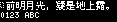

efontTW_10
efontTW · u8g2 · tw · 13552 chars

| flash | 279683 B |
| height | 10 |
| baseline | 8 |
| xAdvance | 24 |
| yAdvance | 10 |
| width | 24 |
| mono | True |
Unicode Blocks
| Basic Latin | 95 |
| Latin-1 Supplement | 7 |
| Other BMP | 251 |
| General Punctuation | 11 |
| CJK Symbols and Punctuation | 28 |
| CJK Unified Ideographs | 13068 |
| Halfwidth and Fullwidth Forms | 92 |
Copy Characters
Characters suitable for custom-font generation. Control characters are omitted.
Covered Characters
Use browser find to search this page. Control and space characters are shown as labels.
Basic Latin
[space]U+0020 !U+0021 "U+0022 #U+0023 $U+0024 %U+0025 &U+0026 'U+0027 (U+0028 )U+0029 *U+002A +U+002B ,U+002C -U+002D .U+002E /U+002F 0U+0030 1U+0031 2U+0032 3U+0033 4U+0034 5U+0035 6U+0036 7U+0037 8U+0038 9U+0039 :U+003A ;U+003B <U+003C =U+003D >U+003E ?U+003F @U+0040 AU+0041 BU+0042 CU+0043 DU+0044 EU+0045 FU+0046 GU+0047 HU+0048 IU+0049 JU+004A KU+004B LU+004C MU+004D NU+004E OU+004F PU+0050 QU+0051 RU+0052 SU+0053 TU+0054 UU+0055 VU+0056 WU+0057 XU+0058 YU+0059 ZU+005A [U+005B \U+005C ]U+005D ^U+005E _U+005F `U+0060 aU+0061 bU+0062 cU+0063 dU+0064 eU+0065 fU+0066 gU+0067 hU+0068 iU+0069 jU+006A kU+006B lU+006C mU+006D nU+006E oU+006F pU+0070 qU+0071 rU+0072 sU+0073 tU+0074 uU+0075 vU+0076 wU+0077 xU+0078 yU+0079 zU+007A {U+007B |U+007C }U+007D ~U+007E
Latin-1 Supplement
§U+00A7 ¯U+00AF °U+00B0 ±U+00B1 ·U+00B7 ×U+00D7 ÷U+00F7
Other BMP
ˇU+02C7 ˉU+02C9 ˊU+02CA ˋU+02CB ˙U+02D9 ΑU+0391 ΒU+0392 ΓU+0393 ΔU+0394 ΕU+0395 ΖU+0396 ΗU+0397 ΘU+0398 ΙU+0399 ΚU+039A ΛU+039B ΜU+039C ΝU+039D ΞU+039E ΟU+039F ΠU+03A0 ΡU+03A1 ΣU+03A3 ΤU+03A4 ΥU+03A5 ΦU+03A6 ΧU+03A7 ΨU+03A8 ΩU+03A9 αU+03B1 βU+03B2 γU+03B3 δU+03B4 εU+03B5 ζU+03B6 ηU+03B7 θU+03B8 ιU+03B9 κU+03BA λU+03BB μU+03BC νU+03BD ξU+03BE οU+03BF πU+03C0 ρU+03C1 σU+03C3 τU+03C4 υU+03C5 φU+03C6 χU+03C7 ψU+03C8 ωU+03C9 €U+20AC ℃U+2103 ℅U+2105 ℉U+2109 ⅠU+2160 ⅡU+2161 ⅢU+2162 ⅣU+2163 ⅤU+2164 ⅥU+2165 ⅦU+2166 ⅧU+2167 ⅨU+2168 ⅩU+2169 ←U+2190 ↑U+2191 →U+2192 ↓U+2193 ↖U+2196 ↗U+2197 ↘U+2198 ↙U+2199 √U+221A ∞U+221E ∟U+221F ∠U+2220 ∣U+2223 ∥U+2225 ∩U+2229 ∪U+222A ∫U+222B ∮U+222E ∴U+2234 ∵U+2235 ≒U+2252 ≠U+2260 ≡U+2261 ≦U+2266 ≧U+2267 ⊕U+2295 ⊙U+2299 ⊥U+22A5 ⊿U+22BF ─U+2500 │U+2502 ┌U+250C ┐U+2510 └U+2514 ┘U+2518 ├U+251C ┤U+2524 ┬U+252C ┴U+2534 ┼U+253C ═U+2550 ╞U+255E ╡U+2561 ╪U+256A ╭U+256D ╮U+256E ╯U+256F ╰U+2570 ╱U+2571 ╲U+2572 ╳U+2573 ▁U+2581 ▂U+2582 ▃U+2583 ▄U+2584 ▅U+2585 ▆U+2586 ▇U+2587 █U+2588 ▉U+2589 ▊U+258A ▋U+258B ▌U+258C ▍U+258D ▎U+258E ▏U+258F ▔U+2594 ▕U+2595 ■U+25A0 □U+25A1 ▲U+25B2 △U+25B3 ▼U+25BC ▽U+25BD ◆U+25C6 ◇U+25C7 ○U+25CB ◎U+25CE ●U+25CF ◢U+25E2 ◣U+25E3 ◤U+25E4 ◥U+25E5 ★U+2605 ☆U+2606 ♀U+2640 ♂U+2642 ㄅU+3105 ㄆU+3106 ㄇU+3107 ㄈU+3108 ㄉU+3109 ㄊU+310A ㄋU+310B ㄌU+310C ㄍU+310D ㄎU+310E ㄏU+310F ㄐU+3110 ㄑU+3111 ㄒU+3112 ㄓU+3113 ㄔU+3114 ㄕU+3115 ㄖU+3116 ㄗU+3117 ㄘU+3118 ㄙU+3119 ㄚU+311A ㄛU+311B ㄜU+311C ㄝU+311D ㄞU+311E ㄟU+311F ㄠU+3120 ㄡU+3121 ㄢU+3122 ㄣU+3123 ㄤU+3124 ㄥU+3125 ㄦU+3126 ㄧU+3127 ㄨU+3128 ㄩU+3129 ㊣U+32A3 ㎎U+338E ㎏U+338F ㎜U+339C ㎝U+339D ㎞U+339E ㎡U+33A1 ㏄U+33C4 ㏎U+33CE ㏑U+33D1 ㏒U+33D2 ㏕U+33D5 兀U+FA0C 嗀U+FA0D ︰U+FE30 ︱U+FE31 ︴U+FE34 ︵U+FE35 ︶U+FE36 ︷U+FE37 ︸U+FE38 ︹U+FE39 ︺U+FE3A ︻U+FE3B ︼U+FE3C ︽U+FE3D ︾U+FE3E ︿U+FE3F ﹀U+FE40 ﹁U+FE41 ﹂U+FE42 ﹃U+FE43 ﹄U+FE44 ﹋U+FE4B ﹌U+FE4C ﹍U+FE4D ﹎U+FE4E ﹏U+FE4F ﹐U+FE50 ﹒U+FE52 ﹔U+FE54 ﹖U+FE56 ﹗U+FE57 ﹙U+FE59 ﹚U+FE5A ﹛U+FE5B ﹜U+FE5C ﹝U+FE5D ﹞U+FE5E ﹟U+FE5F ﹠U+FE60 ﹡U+FE61 ﹢U+FE62 ﹣U+FE63 ﹤U+FE64 ﹥U+FE65 ﹦U+FE66 ﹩U+FE69 ﹪U+FE6A ﹫U+FE6B
General Punctuation
–U+2013 —U+2014 ‘U+2018 ’U+2019 “U+201C ”U+201D ‥U+2025 …U+2026 ′U+2032 ‵U+2035 ※U+203B
CJK Symbols and Punctuation
[ideographic space]U+3000 、U+3001 。U+3002 〃U+3003 〈U+3008 〉U+3009 《U+300A 》U+300B 「U+300C 」U+300D 『U+300E 』U+300F 【U+3010 】U+3011 〒U+3012 〔U+3014 〕U+3015 〝U+301D 〞U+301E 〡U+3021 〢U+3022 〣U+3023 〤U+3024 〥U+3025 〦U+3026 〧U+3027 〨U+3028 〩U+3029
CJK Unified Ideographs
一U+4E00 丁U+4E01 七U+4E03 万U+4E07 丈U+4E08 三U+4E09 上U+4E0A 下U+4E0B 丌U+4E0C 不U+4E0D 与U+4E0E 丏U+4E0F 丐U+4E10 丑U+4E11 且U+4E14 丕U+4E15 世U+4E16 丘U+4E18 丙U+4E19 丞U+4E1E 丟U+4E1F 並U+4E26 丫U+4E2B 中U+4E2D 丮U+4E2E 丰U+4E30 丱U+4E31 串U+4E32 丳U+4E33 丸U+4E38 丹U+4E39 主U+4E3B 丼U+4E3C 乂U+4E42 乃U+4E43 久U+4E45 乇U+4E47 么U+4E48 之U+4E4B 乍U+4E4D 乎U+4E4E 乏U+4E4F 乒U+4E52 乓U+4E53 乖U+4E56 乘U+4E58 乙U+4E59 乜U+4E5C 九U+4E5D 乞U+4E5E 也U+4E5F 乩U+4E69 乳U+4E73 乾U+4E7E 乿U+4E7F 亂U+4E82 亃U+4E83 亄U+4E84 了U+4E86 予U+4E88 事U+4E8B 二U+4E8C 亍U+4E8D 于U+4E8E 云U+4E91 互U+4E92 亓U+4E93 五U+4E94 井U+4E95 亙U+4E99 些U+4E9B 亞U+4E9E 亟U+4E9F 亡U+4EA1 亢U+4EA2 交U+4EA4 亥U+4EA5 亦U+4EA6 亨U+4EA8 享U+4EAB 京U+4EAC 亭U+4EAD 亮U+4EAE 亳U+4EB3 亶U+4EB6 亹U+4EB9 人U+4EBA 什U+4EC0 仁U+4EC1 仂U+4EC2 仃U+4EC3 仄U+4EC4 仆U+4EC6 仇U+4EC7 仈U+4EC8 仉U+4EC9 今U+4ECA 介U+4ECB 仍U+4ECD 仔U+4ED4 仕U+4ED5 他U+4ED6 仗U+4ED7 付U+4ED8 仙U+4ED9 仚U+4EDA 仜U+4EDC 仝U+4EDD 仞U+4EDE 仟U+4EDF 仡U+4EE1 代U+4EE3 令U+4EE4 以U+4EE5 仨U+4EE8 仩U+4EE9 仰U+4EF0 仱U+4EF1 仲U+4EF2 仳U+4EF3 仴U+4EF4 仵U+4EF5 件U+4EF6 价U+4EF7 任U+4EFB 份U+4EFD 仿U+4EFF 伀U+4F00 企U+4F01 伂U+4F02 伄U+4F04 伅U+4F05 伈U+4F08 伉U+4F09 伊U+4F0A 伋U+4F0B 伍U+4F0D 伎U+4F0E 伏U+4F0F 伐U+4F10 休U+4F11 伒U+4F12 伓U+4F13 伔U+4F14 伕U+4F15 优U+4F18 伙U+4F19 伝U+4F1D 伢U+4F22 伬U+4F2C 伭U+4F2D 伯U+4F2F 估U+4F30 伳U+4F33 伴U+4F34 伶U+4F36 伸U+4F38 伺U+4F3A 伻U+4F3B 似U+4F3C 伽U+4F3D 伾U+4F3E 伿U+4F3F 佁U+4F41 佃U+4F43 但U+4F46 佇U+4F47 佈U+4F48 佉U+4F49 佌U+4F4C 位U+4F4D 低U+4F4E 住U+4F4F 佐U+4F50 佑U+4F51 佒U+4F52 体U+4F53 佔U+4F54 何U+4F55 佖U+4F56 佗U+4F57 佘U+4F58 余U+4F59 佚U+4F5A 佛U+4F5B 作U+4F5C 佝U+4F5D 佞U+4F5E 佟U+4F5F 你U+4F60 佡U+4F61 佢U+4F62 佣U+4F63 佤U+4F64 佧U+4F67 佩U+4F69 佪U+4F6A 佫U+4F6B 佬U+4F6C 佮U+4F6E 佯U+4F6F 佰U+4F70 佳U+4F73 佴U+4F74 併U+4F75 佶U+4F76 佷U+4F77 佸U+4F78 佹U+4F79 佺U+4F7A 佻U+4F7B 佼U+4F7C 佽U+4F7D 佾U+4F7E 使U+4F7F 侀U+4F80 侁U+4F81 侂U+4F82 侃U+4F83 侄U+4F84 侅U+4F85 來U+4F86 侇U+4F87 侈U+4F88 侉U+4F89 例U+4F8B 侍U+4F8D 侏U+4F8F 侐U+4F90 侑U+4F91 侒U+4F92 侔U+4F94 侕U+4F95 侖U+4F96 侗U+4F97 侘U+4F98 侚U+4F9A 供U+4F9B 侜U+4F9C 依U+4F9D 侞U+4F9E 侮U+4FAE 侯U+4FAF 侲U+4FB2 侳U+4FB3 侵U+4FB5 侶U+4FB6 侷U+4FB7 侹U+4FB9 侺U+4FBA 侻U+4FBB 便U+4FBF 俀U+4FC0 俁U+4FC1 係U+4FC2 促U+4FC3 俄U+4FC4 俅U+4FC5 俇U+4FC7 俉U+4FC9 俊U+4FCA 俋U+4FCB 俍U+4FCD 俎U+4FCE 俏U+4FCF 俐U+4FD0 俑U+4FD1 俓U+4FD3 俔U+4FD4 俖U+4FD6 俗U+4FD7 俘U+4FD8 俙U+4FD9 俚U+4FDA 俛U+4FDB 俜U+4FDC 保U+4FDD 俞U+4FDE 俟U+4FDF 俠U+4FE0 信U+4FE1 俬U+4FEC 修U+4FEE 俯U+4FEF 俱U+4FF1 俳U+4FF3 俴U+4FF4 俵U+4FF5 俶U+4FF6 俷U+4FF7 俸U+4FF8 俺U+4FFA 俾U+4FFE 倀U+5000 倅U+5005 倆U+5006 倇U+5007 倉U+5009 個U+500B 倌U+500C 倍U+500D 倎U+500E 倏U+500F 們U+5011 倒U+5012 倓U+5013 倔U+5014 倕U+5015 倖U+5016 倗U+5017 倘U+5018 候U+5019 倚U+501A 倛U+501B 倜U+501C 倞U+501E 借U+501F 倠U+5020 倡U+5021 倢U+5022 倣U+5023 倥U+5025 倦U+5026 倧U+5027 倨U+5028 倩U+5029 倪U+502A 倫U+502B 倬U+502C 倭U+502D 倯U+502F 倰U+5030 倱U+5031 倳U+5033 倵U+5035 倷U+5037 值U+503C 偀U+5040 偁U+5041 偃U+5043 偅U+5045 偆U+5046 假U+5047 偈U+5048 偉U+5049 偊U+504A 偋U+504B 偌U+504C 偍U+504D 偎U+504E 偏U+504F 偑U+5051 偓U+5053 偕U+5055 偗U+5057 做U+505A 偛U+505B 停U+505C 偝U+505D 偞U+505E 偟U+505F 偠U+5060 偡U+5061 偢U+5062 偣U+5063 偤U+5064 健U+5065 偨U+5068 偩U+5069 偪U+506A 偫U+506B 偭U+506D 偮U+506E 偯U+506F 偰U+5070 偲U+5072 偳U+5073 側U+5074 偵U+5075 偶U+5076 偷U+5077 偺U+507A 偽U+507D 傀U+5080 傂U+5082 傃U+5083 傅U+5085 傇U+5087 傋U+508B 傌U+508C 傍U+508D 傎U+508E 傑U+5091 傒U+5092 傔U+5094 傕U+5095 傖U+5096 傘U+5098 備U+5099 傚U+509A 傛U+509B 傜U+509C 傝U+509D 傞U+509E 傢U+50A2 傣U+50A3 催U+50AC 傭U+50AD 傮U+50AE 傯U+50AF 傰U+50B0 傱U+50B1 傲U+50B2 傳U+50B3 傴U+50B4 債U+50B5 傶U+50B6 傷U+50B7 傸U+50B8 傺U+50BA 傻U+50BB 傽U+50BD 傾U+50BE 傿U+50BF 僁U+50C1 僂U+50C2 僄U+50C4 僅U+50C5 僆U+50C6 僇U+50C7 僈U+50C8 僉U+50C9 僊U+50CA 僋U+50CB 僎U+50CE 像U+50CF 僑U+50D1 僓U+50D3 僔U+50D4 僕U+50D5 僖U+50D6 僗U+50D7 僚U+50DA 僛U+50DB 僝U+50DD 僠U+50E0 僣U+50E3 僤U+50E4 僥U+50E5 僦U+50E6 僧U+50E7 僨U+50E8 僩U+50E9 僪U+50EA 僬U+50EC 僭U+50ED 僮U+50EE 僯U+50EF 僰U+50F0 僱U+50F1 僳U+50F3 僵U+50F5 僶U+50F6 僸U+50F8 價U+50F9 僻U+50FB 僽U+50FD 僾U+50FE 僿U+50FF 儀U+5100 儂U+5102 儃U+5103 億U+5104 儅U+5105 儆U+5106 儇U+5107 儈U+5108 儉U+5109 儊U+510A 儋U+510B 儌U+510C 儐U+5110 儑U+5111 儒U+5112 儓U+5113 儔U+5114 儕U+5115 儗U+5117 儘U+5118 儚U+511A 儜U+511C 償U+511F 儠U+5120 儡U+5121 儢U+5122 儤U+5124 儥U+5125 儦U+5126 儩U+5129 優U+512A 儭U+512D 儮U+512E 儰U+5130 儱U+5131 儲U+5132 儳U+5133 儴U+5134 儵U+5135 儷U+5137 儸U+5138 儹U+5139 儺U+513A 儻U+513B 儼U+513C 儽U+513D 儿U+513F 兀U+5140 允U+5141 元U+5143 兄U+5144 充U+5145 兆U+5146 兇U+5147 先U+5148 光U+5149 克U+514B 兌U+514C 免U+514D 兒U+5152 兔U+5154 兕U+5155 兗U+5157 兙U+5159 党U+515A 兛U+515B 兜U+515C 兝U+515D 兞U+515E 兟U+515F 兡U+5161 兢U+5162 兣U+5163 入U+5165 內U+5167 全U+5168 兩U+5169 八U+516B 公U+516C 六U+516D 兮U+516E 共U+5171 兵U+5175 其U+5176 具U+5177 典U+5178 兼U+517C 冀U+5180 冇U+5187 冉U+5189 冊U+518A 再U+518D 冏U+518F 冑U+5191 冒U+5192 冓U+5193 冔U+5194 冕U+5195 冗U+5197 冘U+5198 冞U+519E 冠U+51A0 冢U+51A2 冤U+51A4 冥U+51A5 冪U+51AA 冬U+51AC 冰U+51B0 冱U+51B1 冶U+51B6 冷U+51B7 冹U+51B9 冼U+51BC 冽U+51BD 冾U+51BE 凄U+51C4 凅U+51C5 准U+51C6 凈U+51C8 凊U+51CA 凋U+51CB 凌U+51CC 凍U+51CD 凎U+51CE 凐U+51D0 凔U+51D4 凗U+51D7 凘U+51D8 凜U+51DC 凝U+51DD 凞U+51DE 几U+51E0 凡U+51E1 凰U+51F0 凱U+51F1 凳U+51F3 凵U+51F5 凶U+51F6 凸U+51F8 凹U+51F9 出U+51FA 函U+51FD 刀U+5200 刁U+5201 刃U+5203 分U+5206 切U+5207 刈U+5208 刉U+5209 刊U+520A 刌U+520C 刎U+520E 刐U+5210 刑U+5211 划U+5212 刓U+5213 刖U+5216 列U+5217 刜U+521C 初U+521D 刞U+521E 刡U+5221 判U+5224 別U+5225 刨U+5228 利U+5229 刪U+522A 刮U+522E 到U+5230 刱U+5231 刲U+5232 刳U+5233 刵U+5235 制U+5236 刷U+5237 券U+5238 刺U+523A 刻U+523B 剁U+5241 剃U+5243 剄U+5244 剆U+5246 則U+5247 剉U+5249 削U+524A 剋U+524B 剌U+524C 前U+524D 剎U+524E 剒U+5252 剔U+5254 剕U+5255 剖U+5256 剚U+525A 剛U+525B 剜U+525C 剝U+525D 剞U+525E 剟U+525F 剡U+5261 剢U+5262 剩U+5269 剪U+526A 剫U+526B 剬U+526C 剭U+526D 剮U+526E 副U+526F 割U+5272 剴U+5274 創U+5275 剷U+5277 剸U+5278 剺U+527A 剻U+527B 剼U+527C 剽U+527D 剿U+527F 劀U+5280 劁U+5281 劂U+5282 劃U+5283 劄U+5284 劇U+5287 劈U+5288 劉U+5289 劊U+528A 劋U+528B 劌U+528C 劍U+528D 劑U+5291 劓U+5293 劖U+5296 劗U+5297 劘U+5298 劙U+5299 力U+529B 功U+529F 加U+52A0 劣U+52A3 劦U+52A6 助U+52A9 努U+52AA 劫U+52AB 劬U+52AC 劭U+52AD 劮U+52AE 劻U+52BB 劼U+52BC 劾U+52BE 勀U+52C0 勁U+52C1 勂U+52C2 勃U+52C3 勇U+52C7 勉U+52C9 勍U+52CD 勒U+52D2 勓U+52D3 動U+52D5 勖U+52D6 勗U+52D7 勘U+52D8 務U+52D9 勛U+52DB 勝U+52DD 勞U+52DE 募U+52DF 勢U+52E2 勣U+52E3 勤U+52E4 勦U+52E6 勩U+52E9 勫U+52EB 勯U+52EF 勰U+52F0 勱U+52F1 勳U+52F3 勴U+52F4 勵U+52F5 勷U+52F7 勸U+52F8 勺U+52FA 勻U+52FB 勼U+52FC 勾U+52FE 勿U+52FF 包U+5305 匆U+5306 匈U+5308 匉U+5309 匊U+530A 匋U+530B 匍U+530D 匎U+530E 匏U+530F 匐U+5310 匑U+5311 匒U+5312 匕U+5315 化U+5316 北U+5317 匙U+5319 匚U+531A 匜U+531C 匝U+531D 匟U+531F 匠U+5320 匡U+5321 匢U+5322 匣U+5323 匪U+532A 匭U+532D 匯U+532F 匰U+5330 匱U+5331 匴U+5334 匷U+5337 匹U+5339 匼U+533C 匽U+533D 匾U+533E 匿U+533F 區U+5340 十U+5341 千U+5343 卄U+5344 卅U+5345 升U+5347 午U+5348 卉U+5349 半U+534A 卌U+534C 卍U+534D 卑U+5351 卒U+5352 卓U+5353 協U+5354 南U+5357 博U+535A 卜U+535C 卞U+535E 占U+5360 卡U+5361 卣U+5363 卦U+5366 卬U+536C 卮U+536E 卯U+536F 印U+5370 危U+5371 卲U+5372 即U+5373 卵U+5375 卷U+5377 卸U+5378 卹U+5379 卻U+537B 卼U+537C 卿U+537F 厂U+5382 厄U+5384 厊U+538A 厎U+538E 厏U+538F 厒U+5392 厔U+5394 厖U+5396 厗U+5397 厘U+5398 厙U+5399 厚U+539A 厜U+539C 厝U+539D 厞U+539E 原U+539F 厤U+53A4 厥U+53A5 厧U+53A7 厬U+53AC 厭U+53AD 厲U+53B2 厴U+53B4 厹U+53B9 去U+53BB 參U+53C3 又U+53C8 叉U+53C9 及U+53CA 友U+53CB 反U+53CD 叔U+53D4 取U+53D6 受U+53D7 叛U+53DB 叟U+53DF 叡U+53E1 叢U+53E2 口U+53E3 古U+53E4 句U+53E5 另U+53E6 叨U+53E8 叩U+53E9 只U+53EA 叫U+53EB 召U+53EC 叭U+53ED 叮U+53EE 可U+53EF 台U+53F0 叱U+53F1 史U+53F2 右U+53F3 叵U+53F5 司U+53F8 叻U+53FB 叼U+53FC 吁U+5401 吃U+5403 各U+5404 吆U+5406 吇U+5407 合U+5408 吉U+5409 吊U+540A 吋U+540B 同U+540C 名U+540D 后U+540E 吏U+540F 吐U+5410 向U+5411 吒U+5412 吘U+5418 吙U+5419 君U+541B 吜U+541C 吝U+541D 吞U+541E 吟U+541F 吠U+5420 吤U+5424 吥U+5425 否U+5426 吧U+5427 吨U+5428 吩U+5429 吪U+542A 含U+542B 听U+542C 吭U+542D 吮U+542E 吰U+5430 吱U+5431 吳U+5433 吵U+5435 吶U+5436 吷U+5437 吸U+5438 吹U+5439 吻U+543B 吼U+543C 吽U+543D 吾U+543E 呀U+5440 呁U+5441 呂U+5442 呃U+5443 呅U+5445 呆U+5446 呇U+5447 呈U+5448 告U+544A 呎U+544E 呏U+544F 呔U+5454 呠U+5460 呡U+5461 呢U+5462 呣U+5463 呤U+5464 呥U+5465 呦U+5466 呧U+5467 周U+5468 呫U+546B 呬U+546C 呯U+546F 呰U+5470 呱U+5471 呲U+5472 味U+5473 呴U+5474 呵U+5475 呶U+5476 呷U+5477 呸U+5478 呺U+547A 呻U+547B 呼U+547C 命U+547D 呾U+547E 呿U+547F 咀U+5480 咁U+5481 咂U+5482 咄U+5484 咆U+5486 咇U+5487 咈U+5488 咋U+548B 和U+548C 咍U+548D 咎U+548E 咐U+5490 咑U+5491 咒U+5492 咕U+5495 咖U+5496 咘U+5498 咚U+549A 咠U+54A0 咡U+54A1 咢U+54A2 咥U+54A5 咦U+54A6 咧U+54A7 咨U+54A8 咩U+54A9 咪U+54AA 咫U+54AB 咬U+54AC 咭U+54AD 咮U+54AE 咯U+54AF 咰U+54B0 咱U+54B1 咳U+54B3 咶U+54B6 咷U+54B7 咸U+54B8 咺U+54BA 咻U+54BB 咼U+54BC 咽U+54BD 咾U+54BE 咿U+54BF 哀U+54C0 品U+54C1 哂U+54C2 哃U+54C3 哄U+54C4 哅U+54C5 哆U+54C6 哇U+54C7 哈U+54C8 哉U+54C9 哎U+54CE 哏U+54CF 哖U+54D6 哞U+54DE 哠U+54E0 員U+54E1 哢U+54E2 哤U+54E4 哥U+54E5 哦U+54E6 哧U+54E7 哨U+54E8 哩U+54E9 哪U+54EA 哫U+54EB 哭U+54ED 哮U+54EE 哱U+54F1 哲U+54F2 哳U+54F3 哷U+54F7 哸U+54F8 哺U+54FA 哻U+54FB 哼U+54FC 哽U+54FD 哿U+54FF 唁U+5501 唃U+5503 唄U+5504 唅U+5505 唆U+5506 唇U+5507 唈U+5508 唉U+5509 唊U+550A 唋U+550B 唌U+550C 唎U+550E 唏U+550F 唐U+5510 唑U+5511 唒U+5512 唔U+5514 唗U+5517 唚U+551A 唦U+5526 唧U+5527 唪U+552A 唬U+552C 唭U+552D 售U+552E 唯U+552F 唰U+5530 唱U+5531 唲U+5532 唳U+5533 唴U+5534 唵U+5535 唶U+5536 唷U+5537 唸U+5538 唹U+5539 唻U+553B 唼U+553C 唾U+553E 啀U+5540 啁U+5541 啃U+5543 啄U+5544 啅U+5545 商U+5546 啈U+5548 啊U+554A 啋U+554B 啍U+554D 啎U+554E 問U+554F 啐U+5550 啑U+5551 啒U+5552 啕U+5555 啖U+5556 啗U+5557 啜U+555C 啞U+555E 啟U+555F 啡U+5561 啢U+5562 啣U+5563 啤U+5564 啥U+5565 啦U+5566 啪U+556A 啵U+5575 啶U+5576 啷U+5577 啻U+557B 啼U+557C 啽U+557D 啾U+557E 啿U+557F 喀U+5580 喁U+5581 喂U+5582 喃U+5583 善U+5584 喇U+5587 喈U+5588 喉U+5589 喊U+558A 喋U+558B 喌U+558C 喍U+558D 喎U+558E 喏U+558F 喑U+5591 喒U+5592 喓U+5593 喔U+5594 喕U+5595 喘U+5598 喙U+5599 喚U+559A 喜U+559C 喝U+559D 喟U+559F 喡U+55A1 喢U+55A2 喣U+55A3 喤U+55A4 喥U+55A5 喦U+55A6 喧U+55A7 喨U+55A8 喪U+55AA 喫U+55AB 喬U+55AC 喭U+55AD 單U+55AE 喱U+55B1 喲U+55B2 喳U+55B3 喵U+55B5 喻U+55BB 喿U+55BF 嗀U+55C0 嗂U+55C2 嗃U+55C3 嗄U+55C4 嗅U+55C5 嗆U+55C6 嗇U+55C7 嗈U+55C8 嗉U+55C9 嗊U+55CA 嗋U+55CB 嗌U+55CC 嗍U+55CD 嗎U+55CE 嗏U+55CF 嗐U+55D0 嗑U+55D1 嗒U+55D2 嗓U+55D3 嗔U+55D4 嗕U+55D5 嗖U+55D6 嗙U+55D9 嗚U+55DA 嗛U+55DB 嗜U+55DC 嗝U+55DD 嗟U+55DF 嗡U+55E1 嗢U+55E2 嗣U+55E3 嗤U+55E4 嗥U+55E5 嗦U+55E6 嗧U+55E7 嗨U+55E8 嗩U+55E9 嗯U+55EF 嗲U+55F2 嗶U+55F6 嗷U+55F7 嗹U+55F9 嗺U+55FA 嗼U+55FC 嗽U+55FD 嗾U+55FE 嗿U+55FF 嘀U+5600 嘁U+5601 嘂U+5602 嘄U+5604 嘆U+5606 嘈U+5608 嘉U+5609 嘌U+560C 嘍U+560D 嘎U+560E 嘏U+560F 嘐U+5610 嘒U+5612 嘓U+5613 嘔U+5614 嘕U+5615 嘖U+5616 嘗U+5617 嘛U+561B 嘜U+561C 嘝U+561D 嘟U+561F 嘧U+5627 嘩U+5629 嘪U+562A 嘬U+562C 嘮U+562E 嘯U+562F 嘰U+5630 嘲U+5632 嘳U+5633 嘴U+5634 嘵U+5635 嘶U+5636 嘸U+5638 嘹U+5639 嘺U+563A 嘻U+563B 嘽U+563D 嘾U+563E 嘿U+563F 噀U+5640 噁U+5641 噂U+5642 噅U+5645 噆U+5646 噈U+5648 噉U+5649 噊U+564A 噌U+564C 噎U+564E 噓U+5653 噗U+5657 噘U+5658 噙U+5659 噚U+565A 噞U+565E 噠U+5660 噢U+5662 噣U+5663 噤U+5664 噥U+5665 噦U+5666 器U+5668 噩U+5669 噪U+566A 噫U+566B 噬U+566C 噭U+566D 噮U+566E 噯U+566F 噰U+5670 噱U+5671 噲U+5672 噳U+5673 噴U+5674 噶U+5676 噷U+5677 噸U+5678 噹U+5679 噾U+567E 噿U+567F 嚀U+5680 嚁U+5681 嚂U+5682 嚃U+5683 嚄U+5684 嚅U+5685 嚆U+5686 嚇U+5687 嚌U+568C 嚍U+568D 嚎U+568E 嚏U+568F 嚐U+5690 嚓U+5693 嚕U+5695 嚗U+5697 嚘U+5698 嚙U+5699 嚚U+569A 嚜U+569C 嚝U+569D 嚥U+56A5 嚦U+56A6 嚧U+56A7 嚨U+56A8 嚪U+56AA 嚫U+56AB 嚬U+56AC 嚭U+56AD 嚮U+56AE 嚲U+56B2 嚳U+56B3 嚴U+56B4 嚵U+56B5 嚶U+56B6 嚷U+56B7 嚼U+56BC 嚽U+56BD 嚾U+56BE 囀U+56C0 囁U+56C1 囂U+56C2 囃U+56C3 囅U+56C5 囆U+56C6 囈U+56C8 囉U+56C9 囊U+56CA 囋U+56CB 囌U+56CC 囍U+56CD 囑U+56D1 囓U+56D3 囔U+56D4 囗U+56D7 囚U+56DA 四U+56DB 囝U+56DD 回U+56DE 囟U+56DF 因U+56E0 囡U+56E1 囤U+56E4 囥U+56E5 囧U+56E7 囪U+56EA 囫U+56EB 囮U+56EE 困U+56F0 囷U+56F7 囹U+56F9 固U+56FA 囿U+56FF 圁U+5701 圂U+5702 圃U+5703 圄U+5704 圇U+5707 圈U+5708 圉U+5709 圊U+570A 國U+570B 圌U+570C 圍U+570D 園U+5712 圓U+5713 圔U+5714 圖U+5716 團U+5718 圚U+571A 圛U+571B 圜U+571C 圞U+571E 土U+571F 圠U+5720 圢U+5722 圣U+5723 在U+5728 圩U+5729 圪U+572A 圬U+572C 圭U+572D 圮U+572E 圯U+572F 地U+5730 圳U+5733 圴U+5734 圻U+573B 圾U+573E 址U+5740 坁U+5741 坅U+5745 均U+5747 坉U+5749 坊U+574A 坋U+574B 坌U+574C 坍U+574D 坎U+574E 坏U+574F 坐U+5750 坑U+5751 坒U+5752 坡U+5761 坢U+5762 坤U+5764 坦U+5766 坨U+5768 坩U+5769 坪U+576A 坫U+576B 坭U+576D 坯U+576F 坰U+5770 坱U+5771 坲U+5772 坳U+5773 坴U+5774 坵U+5775 坶U+5776 坷U+5777 坻U+577B 坼U+577C 坽U+577D 垀U+5780 垂U+5782 垃U+5783 型U+578B 垌U+578C 垏U+578F 垓U+5793 垔U+5794 垕U+5795 垗U+5797 垘U+5798 垙U+5799 垚U+579A 垛U+579B 垝U+579D 垞U+579E 垟U+579F 垠U+57A0 垢U+57A2 垣U+57A3 垤U+57A4 垥U+57A5 垮U+57AE 垵U+57B5 垶U+57B6 垸U+57B8 垹U+57B9 垺U+57BA 垼U+57BC 垽U+57BD 垿U+57BF 埁U+57C1 埂U+57C2 埃U+57C3 埆U+57C6 埇U+57C7 埋U+57CB 埌U+57CC 城U+57CE 埏U+57CF 埐U+57D0 埒U+57D2 埔U+57D4 埕U+57D5 埜U+57DC 域U+57DF 埠U+57E0 埡U+57E1 埢U+57E2 埣U+57E3 埤U+57E4 埥U+57E5 埧U+57E7 埩U+57E9 埬U+57EC 埭U+57ED 埮U+57EE 埰U+57F0 埱U+57F1 埲U+57F2 埳U+57F3 埴U+57F4 埵U+57F5 埶U+57F6 執U+57F7 埸U+57F8 培U+57F9 基U+57FA 埻U+57FB 埼U+57FC 埽U+57FD 堀U+5800 堁U+5801 堂U+5802 堄U+5804 堅U+5805 堆U+5806 堇U+5807 堈U+5808 堉U+5809 堊U+580A 堋U+580B 堌U+580C 堍U+580D 堎U+580E 堐U+5810 堔U+5814 堙U+5819 堛U+581B 堜U+581C 堝U+581D 堞U+581E 堠U+5820 堡U+5821 堣U+5823 堤U+5824 堥U+5825 堧U+5827 堨U+5828 堩U+5829 堪U+582A 堬U+582C 堭U+582D 堮U+582E 堯U+582F 堰U+5830 報U+5831 堲U+5832 堳U+5833 場U+5834 堵U+5835 堶U+5836 堷U+5837 堸U+5838 堹U+5839 堻U+583B 堽U+583D 堿U+583F 塈U+5848 塉U+5849 塊U+584A 塋U+584B 塌U+584C 塍U+584D 塎U+584E 塏U+584F 塑U+5851 塒U+5852 塓U+5853 塔U+5854 塕U+5855 塗U+5857 塘U+5858 塙U+5859 塚U+585A 塛U+585B 塝U+585D 塞U+585E 塢U+5862 塣U+5863 塤U+5864 塥U+5865 塨U+5868 填U+586B 塭U+586D 塯U+586F 塱U+5871 塴U+5874 塵U+5875 塶U+5876 塹U+5879 塺U+587A 塻U+587B 塼U+587C 塽U+587D 塾U+587E 塿U+587F 墀U+5880 墁U+5881 墂U+5882 境U+5883 墅U+5885 墆U+5886 墇U+5887 墈U+5888 墉U+5889 墊U+588A 墋U+588B 墎U+588E 墏U+588F 墐U+5890 墑U+5891 墓U+5893 墔U+5894 墘U+5898 墜U+589C 墝U+589D 增U+589E 墟U+589F 墠U+58A0 墡U+58A1 墣U+58A3 墥U+58A5 墦U+58A6 墨U+58A8 墩U+58A9 墫U+58AB 墬U+58AC 墮U+58AE 墯U+58AF 墱U+58B1 墳U+58B3 墺U+58BA 墻U+58BB 墼U+58BC 墽U+58BD 墾U+58BE 墿U+58BF 壁U+58C1 壂U+58C2 壅U+58C5 壆U+58C6 壇U+58C7 壈U+58C8 壉U+58C9 壎U+58CE 壏U+58CF 壑U+58D1 壒U+58D2 壓U+58D3 壔U+58D4 壕U+58D5 壖U+58D6 壘U+58D8 壙U+58D9 壚U+58DA 壛U+58DB 壝U+58DD 壞U+58DE 壟U+58DF 壢U+58E2 壣U+58E3 壤U+58E4 壧U+58E7 壨U+58E8 壩U+58E9 士U+58EB 壬U+58EC 壯U+58EF 壴U+58F4 壹U+58F9 壺U+58FA 壼U+58FC 壽U+58FD 壾U+58FE 壿U+58FF 夃U+5903 夆U+5906 夌U+590C 复U+590D 夎U+590E 夏U+590F 夒U+5912 夔U+5914 夕U+5915 外U+5916 夗U+5917 夙U+5919 多U+591A 夜U+591C 夠U+5920 夢U+5922 夤U+5924 夥U+5925 大U+5927 天U+5929 太U+592A 夫U+592B 夬U+592C 夭U+592D 央U+592E 夯U+592F 失U+5931 夷U+5937 夸U+5938 夼U+593C 夾U+593E 奀U+5940 奄U+5944 奅U+5945 奇U+5947 奈U+5948 奉U+5949 奊U+594A 奎U+594E 奏U+594F 奐U+5950 契U+5951 奓U+5953 奔U+5954 奕U+5955 套U+5957 奘U+5958 奚U+595A 奜U+595C 奠U+5960 奡U+5961 奢U+5962 奧U+5967 奩U+5969 奪U+596A 奫U+596B 奭U+596D 奮U+596E 奰U+5970 奱U+5971 奲U+5972 女U+5973 奴U+5974 奶U+5976 奷U+5977 奸U+5978 她U+5979 奻U+597B 奼U+597C 好U+597D 奾U+597E 奿U+597F 妀U+5980 妁U+5981 如U+5982 妃U+5983 妄U+5984 妅U+5985 妊U+598A 妍U+598D 妎U+598E 妏U+598F 妐U+5990 妒U+5992 妓U+5993 妖U+5996 妗U+5997 妘U+5998 妙U+5999 妝U+599D 妞U+599E 妠U+59A0 妡U+59A1 妢U+59A2 妣U+59A3 妤U+59A4 妥U+59A5 妦U+59A6 妧U+59A7 妨U+59A8 妮U+59AE 妯U+59AF 妱U+59B1 妲U+59B2 妳U+59B3 妴U+59B4 妵U+59B5 妶U+59B6 妹U+59B9 妺U+59BA 妻U+59BB 妼U+59BC 妽U+59BD 妾U+59BE 姀U+59C0 姁U+59C1 姃U+59C3 姅U+59C5 姆U+59C6 姇U+59C7 姈U+59C8 姊U+59CA 始U+59CB 姌U+59CC 姍U+59CD 姎U+59CE 姏U+59CF 姐U+59D0 姑U+59D1 姒U+59D2 姓U+59D3 委U+59D4 姖U+59D6 姘U+59D8 姚U+59DA 姛U+59DB 姜U+59DC 姝U+59DD 姞U+59DE 姠U+59E0 姡U+59E1 姣U+59E3 姤U+59E4 姥U+59E5 姦U+59E6 姨U+59E8 姩U+59E9 姪U+59EA 姬U+59EC 姭U+59ED 姮U+59EE 姱U+59F1 姲U+59F2 姳U+59F3 姴U+59F4 姵U+59F5 姶U+59F6 姷U+59F7 姺U+59FA 姻U+59FB 姼U+59FC 姽U+59FD 姾U+59FE 姿U+59FF 娀U+5A00 威U+5A01 娃U+5A03 娉U+5A09 娊U+5A0A 娌U+5A0C 娏U+5A0F 娑U+5A11 娓U+5A13 娕U+5A15 娖U+5A16 娗U+5A17 娘U+5A18 娙U+5A19 娛U+5A1B 娜U+5A1C 娞U+5A1E 娟U+5A1F 娠U+5A20 娣U+5A23 娥U+5A25 娩U+5A29 娭U+5A2D 娮U+5A2E 娳U+5A33 娵U+5A35 娶U+5A36 娷U+5A37 娸U+5A38 娹U+5A39 娼U+5A3C 娾U+5A3E 婀U+5A40 婁U+5A41 婂U+5A42 婃U+5A43 婄U+5A44 婆U+5A46 婇U+5A47 婈U+5A48 婉U+5A49 婊U+5A4A 婌U+5A4C 婍U+5A4D 婐U+5A50 婑U+5A51 婒U+5A52 婓U+5A53 婕U+5A55 婖U+5A56 婗U+5A57 婘U+5A58 婚U+5A5A 婛U+5A5B 婜U+5A5C 婝U+5A5D 婞U+5A5E 婟U+5A5F 婠U+5A60 婢U+5A62 婤U+5A64 婥U+5A65 婦U+5A66 婧U+5A67 婩U+5A69 婪U+5A6A 婬U+5A6C 婭U+5A6D 婰U+5A70 婷U+5A77 婸U+5A78 婺U+5A7A 婻U+5A7B 婼U+5A7C 婽U+5A7D 婿U+5A7F 媃U+5A83 媄U+5A84 媊U+5A8A 媋U+5A8B 媌U+5A8C 媎U+5A8E 媏U+5A8F 媐U+5A90 媒U+5A92 媓U+5A93 媔U+5A94 媕U+5A95 媗U+5A97 媚U+5A9A 媛U+5A9B 媜U+5A9C 媝U+5A9D 媞U+5A9E 媟U+5A9F 媢U+5AA2 媥U+5AA5 媦U+5AA6 媧U+5AA7 媩U+5AA9 媬U+5AAC 媮U+5AAE 媯U+5AAF 媰U+5AB0 媱U+5AB1 媲U+5AB2 媳U+5AB3 媴U+5AB4 媵U+5AB5 媶U+5AB6 媷U+5AB7 媸U+5AB8 媹U+5AB9 媺U+5ABA 媻U+5ABB 媼U+5ABC 媽U+5ABD 媾U+5ABE 媿U+5ABF 嫀U+5AC0 嫁U+5AC1 嫂U+5AC2 嫄U+5AC4 嫆U+5AC6 嫇U+5AC7 嫈U+5AC8 嫉U+5AC9 嫊U+5ACA 嫋U+5ACB 嫌U+5ACC 嫍U+5ACD 嫕U+5AD5 嫖U+5AD6 嫗U+5AD7 嫘U+5AD8 嫙U+5AD9 嫚U+5ADA 嫛U+5ADB 嫜U+5ADC 嫝U+5ADD 嫞U+5ADE 嫟U+5ADF 嫠U+5AE0 嫡U+5AE1 嫢U+5AE2 嫣U+5AE3 嫥U+5AE5 嫦U+5AE6 嫨U+5AE8 嫩U+5AE9 嫪U+5AEA 嫫U+5AEB 嫬U+5AEC 嫭U+5AED 嫮U+5AEE 嫳U+5AF3 嫴U+5AF4 嫵U+5AF5 嫶U+5AF6 嫷U+5AF7 嫸U+5AF8 嫹U+5AF9 嫺U+5AFA 嫻U+5AFB 嫽U+5AFD 嫿U+5AFF 嬁U+5B01 嬂U+5B02 嬃U+5B03 嬅U+5B05 嬇U+5B07 嬈U+5B08 嬉U+5B09 嬋U+5B0B 嬌U+5B0C 嬏U+5B0F 嬐U+5B10 嬓U+5B13 嬔U+5B14 嬖U+5B16 嬗U+5B17 嬙U+5B19 嬚U+5B1A 嬛U+5B1B 嬝U+5B1D 嬞U+5B1E 嬠U+5B20 嬡U+5B21 嬣U+5B23 嬤U+5B24 嬥U+5B25 嬦U+5B26 嬧U+5B27 嬨U+5B28 嬪U+5B2A 嬬U+5B2C 嬭U+5B2D 嬮U+5B2E 嬯U+5B2F 嬰U+5B30 嬲U+5B32 嬴U+5B34 嬸U+5B38 嬼U+5B3C 嬽U+5B3D 嬾U+5B3E 嬿U+5B3F 孀U+5B40 孃U+5B43 孅U+5B45 孇U+5B47 孈U+5B48 孋U+5B4B 孌U+5B4C 孍U+5B4D 孎U+5B4E 子U+5B50 孑U+5B51 孓U+5B53 孔U+5B54 孕U+5B55 孖U+5B56 字U+5B57 存U+5B58 孚U+5B5A 孛U+5B5B 孜U+5B5C 孝U+5B5D 孟U+5B5F 孢U+5B62 季U+5B63 孤U+5B64 孥U+5B65 孩U+5B69 孫U+5B6B 孬U+5B6C 孮U+5B6E 孰U+5B70 孱U+5B71 孲U+5B72 孳U+5B73 孵U+5B75 孷U+5B77 學U+5B78 孺U+5B7A 孻U+5B7B 孽U+5B7D 孿U+5B7F 宁U+5B81 它U+5B83 宄U+5B84 宅U+5B85 宇U+5B87 守U+5B88 安U+5B89 宋U+5B8B 完U+5B8C 宎U+5B8E 宏U+5B8F 宒U+5B92 宓U+5B93 宕U+5B95 宗U+5B97 官U+5B98 宙U+5B99 定U+5B9A 宛U+5B9B 宜U+5B9C 客U+5BA2 宣U+5BA3 室U+5BA4 宥U+5BA5 宦U+5BA6 宧U+5BA7 宨U+5BA8 宬U+5BAC 宭U+5BAD 宮U+5BAE 宰U+5BB0 害U+5BB3 宴U+5BB4 宵U+5BB5 家U+5BB6 宸U+5BB8 容U+5BB9 宿U+5BBF 寀U+5BC0 寁U+5BC1 寂U+5BC2 寄U+5BC4 寅U+5BC5 密U+5BC6 寇U+5BC7 寊U+5BCA 寋U+5BCB 富U+5BCC 寍U+5BCD 寎U+5BCE 寐U+5BD0 寑U+5BD1 寒U+5BD2 寓U+5BD3 寔U+5BD4 寖U+5BD6 寘U+5BD8 寙U+5BD9 寞U+5BDE 察U+5BDF 寠U+5BE0 寡U+5BE1 寢U+5BE2 寣U+5BE3 寤U+5BE4 寥U+5BE5 實U+5BE6 寧U+5BE7 寨U+5BE8 審U+5BE9 寪U+5BEA 寫U+5BEB 寬U+5BEC 寮U+5BEE 寯U+5BEF 寰U+5BF0 寱U+5BF1 寲U+5BF2 寵U+5BF5 寶U+5BF6 寸U+5BF8 寺U+5BFA 封U+5C01 尃U+5C03 射U+5C04 將U+5C07 專U+5C08 尉U+5C09 尊U+5C0A 尋U+5C0B 尌U+5C0C 對U+5C0D 導U+5C0E 小U+5C0F 尐U+5C10 少U+5C11 尒U+5C12 尕U+5C15 尖U+5C16 尚U+5C1A 尟U+5C1F 尢U+5C22 尤U+5C24 尥U+5C25 尨U+5C28 尪U+5C2A 尬U+5C2C 尰U+5C30 就U+5C31 尳U+5C33 尷U+5C37 尸U+5C38 尹U+5C39 尺U+5C3A 尻U+5C3B 尼U+5C3C 尾U+5C3E 尿U+5C3F 局U+5C40 屁U+5C41 屄U+5C44 居U+5C45 屆U+5C46 屇U+5C47 屈U+5C48 屋U+5C4B 屌U+5C4C 屍U+5C4D 屎U+5C4E 屏U+5C4F 屐U+5C50 屑U+5C51 屔U+5C54 展U+5C55 屖U+5C56 屘U+5C58 屙U+5C59 屜U+5C5C 屝U+5C5D 屠U+5C60 屢U+5C62 屣U+5C63 層U+5C64 履U+5C65 屧U+5C67 屨U+5C68 屩U+5C69 屪U+5C6A 屬U+5C6C 屭U+5C6D 屮U+5C6E 屯U+5C6F 山U+5C71 屳U+5C73 屴U+5C74 屹U+5C79 屺U+5C7A 屻U+5C7B 屼U+5C7C 屾U+5C7E 岆U+5C86 岈U+5C88 岉U+5C89 岊U+5C8A 岋U+5C8B 岌U+5C8C 岍U+5C8D 岏U+5C8F 岐U+5C90 岑U+5C91 岒U+5C92 岓U+5C93 岔U+5C94 岕U+5C95 岝U+5C9D 岟U+5C9F 岠U+5CA0 岡U+5CA1 岢U+5CA2 岣U+5CA3 岤U+5CA4 岥U+5CA5 岦U+5CA6 岧U+5CA7 岨U+5CA8 岩U+5CA9 岪U+5CAA 岫U+5CAB 岬U+5CAC 岭U+5CAD 岮U+5CAE 岯U+5CAF 岰U+5CB0 岱U+5CB1 岳U+5CB3 岵U+5CB5 岶U+5CB6 岷U+5CB7 岸U+5CB8 峆U+5CC6 峇U+5CC7 峈U+5CC8 峉U+5CC9 峊U+5CCA 峋U+5CCB 峌U+5CCC 峎U+5CCE 峏U+5CCF 峐U+5CD0 峒U+5CD2 峓U+5CD3 峔U+5CD4 峖U+5CD6 峗U+5CD7 峘U+5CD8 峙U+5CD9 峚U+5CDA 峛U+5CDB 峞U+5CDE 峟U+5CDF 峨U+5CE8 峪U+5CEA 峬U+5CEC 峭U+5CED 峮U+5CEE 峰U+5CF0 峱U+5CF1 峴U+5CF4 島U+5CF6 峷U+5CF7 峸U+5CF8 峹U+5CF9 峻U+5CFB 峽U+5CFD 峿U+5CFF 崀U+5D00 崁U+5D01 崆U+5D06 崇U+5D07 崋U+5D0B 崌U+5D0C 崍U+5D0D 崎U+5D0E 崏U+5D0F 崑U+5D11 崒U+5D12 崔U+5D14 崖U+5D16 崗U+5D17 崙U+5D19 崚U+5D1A 崛U+5D1B 崝U+5D1D 崞U+5D1E 崟U+5D1F 崠U+5D20 崢U+5D22 崣U+5D23 崤U+5D24 崥U+5D25 崦U+5D26 崧U+5D27 崨U+5D28 崩U+5D29 崮U+5D2E 崰U+5D30 崱U+5D31 崲U+5D32 崳U+5D33 崴U+5D34 崵U+5D35 崶U+5D36 崷U+5D37 崸U+5D38 崹U+5D39 崺U+5D3A 崼U+5D3C 崽U+5D3D 崿U+5D3F 嵀U+5D40 嵁U+5D41 嵂U+5D42 嵃U+5D43 嵅U+5D45 嵇U+5D47 嵉U+5D49 嵊U+5D4A 嵋U+5D4B 嵌U+5D4C 嵎U+5D4E 嵐U+5D50 嵑U+5D51 嵒U+5D52 嵕U+5D55 嵙U+5D59 嵞U+5D5E 嵢U+5D62 嵣U+5D63 嵥U+5D65 嵧U+5D67 嵨U+5D68 嵩U+5D69 嵫U+5D6B 嵬U+5D6C 嵯U+5D6F 嵱U+5D71 嵲U+5D72 嵷U+5D77 嵹U+5D79 嵺U+5D7A 嵼U+5D7C 嵽U+5D7D 嵾U+5D7E 嵿U+5D7F 嶀U+5D80 嶁U+5D81 嶂U+5D82 嶄U+5D84 嶆U+5D86 嶇U+5D87 嶈U+5D88 嶉U+5D89 嶊U+5D8A 嶍U+5D8D 嶒U+5D92 嶓U+5D93 嶔U+5D94 嶕U+5D95 嶗U+5D97 嶙U+5D99 嶚U+5D9A 嶜U+5D9C 嶝U+5D9D 嶞U+5D9E 嶟U+5D9F 嶠U+5DA0 嶡U+5DA1 嶢U+5DA2 嶧U+5DA7 嶨U+5DA8 嶩U+5DA9 嶪U+5DAA 嶬U+5DAC 嶭U+5DAD 嶮U+5DAE 嶯U+5DAF 嶰U+5DB0 嶱U+5DB1 嶲U+5DB2 嶴U+5DB4 嶵U+5DB5 嶷U+5DB7 嶸U+5DB8 嶺U+5DBA 嶼U+5DBC 嶽U+5DBD 巀U+5DC0 巂U+5DC2 巃U+5DC3 巆U+5DC6 巇U+5DC7 巉U+5DC9 巋U+5DCB 巍U+5DCD 巏U+5DCF 巑U+5DD1 巒U+5DD2 巔U+5DD4 巕U+5DD5 巖U+5DD6 巘U+5DD8 川U+5DDD 州U+5DDE 巟U+5DDF 巠U+5DE0 巡U+5DE1 巢U+5DE2 工U+5DE5 左U+5DE6 巧U+5DE7 巨U+5DE8 巫U+5DEB 差U+5DEE 巰U+5DF0 己U+5DF1 已U+5DF2 巳U+5DF3 巴U+5DF4 巷U+5DF7 巹U+5DF9 巽U+5DFD 巾U+5DFE 巿U+5DFF 市U+5E02 布U+5E03 帄U+5E04 帆U+5E06 帊U+5E0A 希U+5E0C 帎U+5E0E 帑U+5E11 帔U+5E14 帕U+5E15 帖U+5E16 帗U+5E17 帘U+5E18 帙U+5E19 帚U+5E1A 帛U+5E1B 帝U+5E1D 帟U+5E1F 帠U+5E20 帡U+5E21 帢U+5E22 帣U+5E23 帤U+5E24 帥U+5E25 帨U+5E28 帩U+5E29 師U+5E2B 席U+5E2D 帳U+5E33 帴U+5E34 帶U+5E36 帷U+5E37 常U+5E38 帽U+5E3D 帾U+5E3E 幀U+5E40 幁U+5E41 幃U+5E43 幄U+5E44 幅U+5E45 幊U+5E4A 幋U+5E4B 幌U+5E4C 幍U+5E4D 幎U+5E4E 幏U+5E4F 幓U+5E53 幔U+5E54 幕U+5E55 幗U+5E57 幘U+5E58 幙U+5E59 幛U+5E5B 幜U+5E5C 幝U+5E5D 幟U+5E5F 幠U+5E60 幡U+5E61 幢U+5E62 幣U+5E63 幦U+5E66 幧U+5E67 幨U+5E68 幩U+5E69 幪U+5E6A 幫U+5E6B 幬U+5E6C 幭U+5E6D 幮U+5E6E 幯U+5E6F 幰U+5E70 干U+5E72 平U+5E73 年U+5E74 幵U+5E75 并U+5E76 幸U+5E78 幹U+5E79 幻U+5E7B 幼U+5E7C 幽U+5E7D 幾U+5E7E 庀U+5E80 庂U+5E82 庄U+5E84 庇U+5E87 庈U+5E88 庉U+5E89 床U+5E8A 庋U+5E8B 庌U+5E8C 庍U+5E8D 序U+5E8F 底U+5E95 庖U+5E96 店U+5E97 庚U+5E9A 庛U+5E9B 府U+5E9C 庠U+5EA0 庢U+5EA2 庣U+5EA3 庤U+5EA4 庥U+5EA5 度U+5EA6 座U+5EA7 庨U+5EA8 庪U+5EAA 庫U+5EAB 庬U+5EAC 庭U+5EAD 庮U+5EAE 庰U+5EB0 庱U+5EB1 庲U+5EB2 庳U+5EB3 庴U+5EB4 庵U+5EB5 庶U+5EB6 康U+5EB7 庸U+5EB8 庹U+5EB9 庾U+5EBE 廁U+5EC1 廂U+5EC2 廄U+5EC4 廅U+5EC5 廆U+5EC6 廇U+5EC7 廈U+5EC8 廉U+5EC9 廊U+5ECA 廋U+5ECB 廌U+5ECC 廎U+5ECE 廑U+5ED1 廒U+5ED2 廓U+5ED3 廔U+5ED4 廕U+5ED5 廖U+5ED6 廗U+5ED7 廘U+5ED8 廙U+5ED9 廚U+5EDA 廛U+5EDB 廜U+5EDC 廝U+5EDD 廞U+5EDE 廟U+5EDF 廠U+5EE0 廡U+5EE1 廢U+5EE2 廣U+5EE3 廥U+5EE5 廦U+5EE6 廧U+5EE7 廨U+5EE8 廩U+5EE9 廬U+5EEC 廮U+5EEE 廯U+5EEF 廱U+5EF1 廲U+5EF2 廳U+5EF3 延U+5EF6 廷U+5EF7 建U+5EFA 廾U+5EFE 廿U+5EFF 弁U+5F01 异U+5F02 弄U+5F04 弅U+5F05 弇U+5F07 弈U+5F08 弊U+5F0A 弋U+5F0B 式U+5F0F 弒U+5F12 弓U+5F13 弔U+5F14 引U+5F15 弗U+5F17 弘U+5F18 弚U+5F1A 弛U+5F1B 弝U+5F1D 弟U+5F1F 弢U+5F22 弣U+5F23 弤U+5F24 弦U+5F26 弧U+5F27 弨U+5F28 弩U+5F29 弭U+5F2D 弮U+5F2E 弰U+5F30 弱U+5F31 弳U+5F33 張U+5F35 弶U+5F36 強U+5F37 弸U+5F38 弼U+5F3C 彀U+5F40 彃U+5F43 彄U+5F44 彆U+5F46 彈U+5F48 彉U+5F49 彊U+5F4A 彋U+5F4B 彌U+5F4C 彎U+5F4E 彏U+5F4F 彔U+5F54 彖U+5F56 彗U+5F57 彘U+5F58 彙U+5F59 彝U+5F5D 形U+5F62 彤U+5F64 彥U+5F65 彧U+5F67 彩U+5F69 彪U+5F6A 彫U+5F6B 彬U+5F6C 彭U+5F6D 彯U+5F6F 彰U+5F70 影U+5F71 彳U+5F73 彴U+5F74 彶U+5F76 彷U+5F77 彸U+5F78 役U+5F79 彼U+5F7C 彽U+5F7D 彾U+5F7E 彿U+5F7F 往U+5F80 征U+5F81 徂U+5F82 待U+5F85 徆U+5F86 徇U+5F87 很U+5F88 徉U+5F89 徊U+5F8A 律U+5F8B 後U+5F8C 徐U+5F90 徑U+5F91 徒U+5F92 徖U+5F96 得U+5F97 徘U+5F98 徙U+5F99 徛U+5F9B 徜U+5F9C 從U+5F9E 徟U+5F9F 徠U+5FA0 御U+5FA1 徥U+5FA5 徦U+5FA6 徨U+5FA8 復U+5FA9 循U+5FAA 徫U+5FAB 徬U+5FAC 徭U+5FAD 微U+5FAE 徯U+5FAF 徲U+5FB2 徵U+5FB5 徶U+5FB6 德U+5FB7 徹U+5FB9 徻U+5FBB 徼U+5FBC 徽U+5FBD 徾U+5FBE 徿U+5FBF 忀U+5FC0 忁U+5FC1 心U+5FC3 必U+5FC5 忉U+5FC9 忌U+5FCC 忍U+5FCD 忏U+5FCF 忐U+5FD0 忑U+5FD1 忒U+5FD2 忔U+5FD4 忕U+5FD5 忖U+5FD6 志U+5FD7 忘U+5FD8 忙U+5FD9 忝U+5FDD 忞U+5FDE 忠U+5FE0 忡U+5FE1 忣U+5FE3 忤U+5FE4 忥U+5FE5 忨U+5FE8 忪U+5FEA 快U+5FEB 忭U+5FED 忮U+5FEE 忯U+5FEF 忱U+5FF1 忳U+5FF3 忴U+5FF4 念U+5FF5 忷U+5FF7 忸U+5FF8 忺U+5FFA 忻U+5FFB 忽U+5FFD 忿U+5FFF 怀U+6000 怉U+6009 怊U+600A 怋U+600B 怌U+600C 怍U+600D 怎U+600E 怏U+600F 怐U+6010 怑U+6011 怒U+6012 怓U+6013 怔U+6014 怕U+6015 怖U+6016 怗U+6017 怙U+6019 怚U+601A 怛U+601B 怜U+601C 思U+601D 怞U+601E 怠U+6020 怡U+6021 怢U+6022 怤U+6024 急U+6025 怦U+6026 性U+6027 怨U+6028 怩U+6029 怪U+602A 怫U+602B 怬U+602C 怭U+602D 怮U+602E 怯U+602F 怲U+6032 怳U+6033 怴U+6034 怵U+6035 怷U+6037 怹U+6039 恀U+6040 恁U+6041 恂U+6042 恃U+6043 恄U+6044 恅U+6045 恆U+6046 恇U+6047 恉U+6049 恌U+604C 恍U+604D 恐U+6050 恒U+6052 恓U+6053 恔U+6054 恕U+6055 恘U+6058 恙U+6059 恚U+605A 恛U+605B 恝U+605D 恞U+605E 恟U+605F 恢U+6062 恣U+6063 恤U+6064 恥U+6065 恦U+6066 恧U+6067 恨U+6068 恩U+6069 恪U+606A 恫U+606B 恬U+606C 恭U+606D 恮U+606E 息U+606F 恰U+6070 恲U+6072 恿U+607F 悀U+6080 悁U+6081 悃U+6083 悄U+6084 悅U+6085 悆U+6086 悇U+6087 悈U+6088 悉U+6089 悊U+608A 悌U+608C 悍U+608D 悎U+608E 悐U+6090 悒U+6092 悔U+6094 悕U+6095 悖U+6096 悗U+6097 悚U+609A 悛U+609B 悜U+609C 悝U+609D 悟U+609F 悠U+60A0 悢U+60A2 患U+60A3 您U+60A8 悰U+60B0 悱U+60B1 悲U+60B2 悴U+60B4 悵U+60B5 悶U+60B6 悷U+60B7 悸U+60B8 悹U+60B9 悺U+60BA 悻U+60BB 悼U+60BC 悽U+60BD 悾U+60BE 悿U+60BF 惀U+60C0 惁U+60C1 惃U+60C3 惄U+60C4 情U+60C5 惆U+60C6 惇U+60C7 惈U+60C8 惉U+60C9 惊U+60CA 惋U+60CB 惌U+60CC 惍U+60CD 惎U+60CE 惏U+60CF 惑U+60D1 惓U+60D3 惔U+60D4 惕U+60D5 惘U+60D8 惙U+60D9 惚U+60DA 惛U+60DB 惜U+60DC 惝U+60DD 惟U+60DF 惠U+60E0 惡U+60E1 惢U+60E2 惤U+60E4 惦U+60E6 惰U+60F0 惱U+60F1 惲U+60F2 想U+60F3 惴U+60F4 惵U+60F5 惶U+60F6 惷U+60F7 惸U+60F8 惹U+60F9 惺U+60FA 惻U+60FB 惼U+60FC 惾U+60FE 惿U+60FF 愀U+6100 愁U+6101 愃U+6103 愄U+6104 愅U+6105 愆U+6106 愈U+6108 愉U+6109 愊U+610A 愋U+610B 愍U+610D 愎U+610E 意U+610F 愐U+6110 愒U+6112 愓U+6113 愔U+6114 愕U+6115 愖U+6116 愘U+6118 愚U+611A 愛U+611B 愜U+611C 愝U+611D 感U+611F 愣U+6123 愧U+6127 愨U+6128 愩U+6129 愫U+612B 愬U+612C 愮U+612E 愯U+612F 愲U+6132 愴U+6134 愶U+6136 愷U+6137 愻U+613B 愾U+613E 愿U+613F 慀U+6140 慁U+6141 慄U+6144 慅U+6145 慆U+6146 慇U+6147 慈U+6148 慉U+6149 慊U+614A 態U+614B 慌U+614C 慍U+614D 慎U+614E 慏U+614F 慒U+6152 慓U+6153 慔U+6154 慕U+6155 慖U+6156 慘U+6158 慚U+615A 慛U+615B 慝U+615D 慞U+615E 慟U+615F 慡U+6161 慢U+6162 慣U+6163 慥U+6165 慦U+6166 慧U+6167 慨U+6168 慪U+616A 慫U+616B 慬U+616C 慮U+616E 慰U+6170 慱U+6171 慲U+6172 慳U+6173 慴U+6174 慵U+6175 慶U+6176 慷U+6177 慹U+6179 慺U+617A 慼U+617C 慾U+617E 憀U+6180 憂U+6182 憃U+6183 憉U+6189 憊U+618A 憋U+618B 憌U+618C 憍U+618D 憎U+618E 憐U+6190 憑U+6191 憒U+6192 憓U+6193 憔U+6194 憖U+6196 憚U+619A 憛U+619B 憝U+619D 憟U+619F 憡U+61A1 憢U+61A2 憤U+61A4 憧U+61A7 憨U+61A8 憩U+61A9 憪U+61AA 憫U+61AB 憬U+61AC 憭U+61AD 憮U+61AE 憯U+61AF 憰U+61B0 憱U+61B1 憲U+61B2 憳U+61B3 憴U+61B4 憵U+61B5 憶U+61B6 憸U+61B8 憺U+61BA 憼U+61BC 憾U+61BE 憿U+61BF 懁U+61C1 懂U+61C2 懃U+61C3 懅U+61C5 懆U+61C6 懇U+61C7 懈U+61C8 應U+61C9 懊U+61CA 懋U+61CB 懌U+61CC 懍U+61CD 懖U+61D6 懘U+61D8 懞U+61DE 懟U+61DF 懠U+61E0 懣U+61E3 懤U+61E4 懥U+61E5 懦U+61E6 懧U+61E7 懨U+61E8 懩U+61E9 懪U+61EA 懫U+61EB 懭U+61ED 懮U+61EE 懰U+61F0 懱U+61F1 懲U+61F2 懵U+61F5 懶U+61F6 懷U+61F7 懸U+61F8 懹U+61F9 懺U+61FA 懻U+61FB 懼U+61FC 懽U+61FD 懾U+61FE 懿U+61FF 戀U+6200 戁U+6201 戃U+6203 戄U+6204 戇U+6207 戈U+6208 戉U+6209 戊U+620A 戌U+620C 戍U+620D 戎U+620E 成U+6210 我U+6211 戒U+6212 戔U+6214 戕U+6215 或U+6216 戙U+6219 戚U+621A 戛U+621B 戟U+621F 戠U+6220 戡U+6221 戢U+6222 戣U+6223 戤U+6224 戥U+6225 戧U+6227 戩U+6229 截U+622A 戫U+622B 戭U+622D 戮U+622E 戰U+6230 戲U+6232 戳U+6233 戴U+6234 戶U+6236 戺U+623A 戽U+623D 戾U+623E 房U+623F 所U+6240 扁U+6241 扂U+6242 扃U+6243 扆U+6246 扇U+6247 扈U+6248 扉U+6249 扊U+624A 手U+624B 才U+624D 扎U+624E 扐U+6250 扑U+6251 扒U+6252 打U+6253 扔U+6254 托U+6258 扙U+6259 扚U+625A 扛U+625B 扜U+625C 扞U+625E 扠U+6260 扡U+6261 扢U+6262 扣U+6263 扤U+6264 扥U+6265 扦U+6266 扭U+626D 扮U+626E 扯U+626F 扰U+6270 扱U+6271 扲U+6272 扳U+6273 扴U+6274 扶U+6276 扷U+6277 批U+6279 扺U+627A 扻U+627B 扼U+627C 扽U+627D 找U+627E 承U+627F 技U+6280 抁U+6281 抃U+6283 抄U+6284 抆U+6286 抇U+6287 抈U+6288 抉U+6289 把U+628A 抌U+628C 抎U+628E 抏U+628F 抑U+6291 抒U+6292 抓U+6293 抔U+6294 投U+6295 抖U+6296 抗U+6297 折U+6298 抨U+62A8 抩U+62A9 抪U+62AA 披U+62AB 抬U+62AC 抭U+62AD 抮U+62AE 抯U+62AF 抰U+62B0 抱U+62B1 抳U+62B3 抴U+62B4 抵U+62B5 抶U+62B6 抸U+62B8 抹U+62B9 抻U+62BB 押U+62BC 抽U+62BD 抾U+62BE 抿U+62BF 拂U+62C2 拄U+62C4 拆U+62C6 拇U+62C7 拈U+62C8 拉U+62C9 拊U+62CA 拋U+62CB 拌U+62CC 拍U+62CD 拎U+62CE 拏U+62CF 拐U+62D0 拑U+62D1 拒U+62D2 拓U+62D3 拔U+62D4 拖U+62D6 拗U+62D7 拘U+62D8 拙U+62D9 拚U+62DA 招U+62DB 拜U+62DC 拫U+62EB 括U+62EC 拭U+62ED 拮U+62EE 拯U+62EF 拰U+62F0 拱U+62F1 拲U+62F2 拳U+62F3 拴U+62F4 拵U+62F5 拶U+62F6 拷U+62F7 拸U+62F8 拹U+62F9 拺U+62FA 拻U+62FB 拼U+62FC 拽U+62FD 拾U+62FE 拿U+62FF 挀U+6300 持U+6301 挂U+6302 挃U+6303 指U+6307 挈U+6308 按U+6309 挋U+630B 挌U+630C 挍U+630D 挎U+630E 挏U+630F 挐U+6310 挑U+6311 挓U+6313 挔U+6314 挕U+6315 挖U+6316 挨U+6328 挩U+6329 挪U+632A 挫U+632B 挬U+632C 挭U+632D 振U+632F 挲U+6332 挳U+6333 挴U+6334 挶U+6336 挸U+6338 挹U+6339 挺U+633A 挻U+633B 挼U+633C 挽U+633D 挾U+633E 捀U+6340 捁U+6341 捂U+6342 捃U+6343 捄U+6344 捅U+6345 捆U+6346 捇U+6347 捈U+6348 捉U+6349 捊U+634A 捋U+634B 捌U+634C 捍U+634D 捎U+634E 捏U+634F 捐U+6350 捑U+6351 捔U+6354 捕U+6355 捖U+6356 捗U+6357 捘U+6358 捙U+6359 捚U+635A 捥U+6365 捧U+6367 捨U+6368 捩U+6369 捫U+636B 捭U+636D 据U+636E 捯U+636F 捰U+6370 捱U+6371 捲U+6372 捵U+6375 捶U+6376 捷U+6377 捸U+6378 捺U+637A 捻U+637B 捼U+637C 捽U+637D 掀U+6380 掁U+6381 掂U+6382 掃U+6383 掄U+6384 掅U+6385 掇U+6387 授U+6388 掉U+6389 掊U+638A 掌U+638C 掍U+638D 掎U+638E 掏U+638F 掐U+6390 掑U+6391 排U+6392 掔U+6394 掖U+6396 掗U+6397 掘U+6398 掙U+6399 掛U+639B 掜U+639C 掝U+639D 掞U+639E 掟U+639F 掠U+63A0 採U+63A1 探U+63A2 掣U+63A3 掤U+63A4 接U+63A5 控U+63A7 推U+63A8 掩U+63A9 措U+63AA 掫U+63AB 掬U+63AC 掭U+63AD 掮U+63AE 掯U+63AF 掰U+63B0 掱U+63B1 掽U+63BD 掾U+63BE 揀U+63C0 揂U+63C2 揃U+63C3 揄U+63C4 揅U+63C5 揆U+63C6 揇U+63C7 揈U+63C8 揉U+63C9 揊U+63CA 揋U+63CB 揌U+63CC 揍U+63CD 揎U+63CE 描U+63CF 提U+63D0 插U+63D2 揓U+63D3 揕U+63D5 揖U+63D6 揗U+63D7 揘U+63D8 揙U+63D9 揚U+63DA 換U+63DB 揜U+63DC 揝U+63DD 揟U+63DF 揠U+63E0 握U+63E1 揣U+63E3 揤U+63E4 揥U+63E5 揧U+63E7 揨U+63E8 揩U+63E9 揪U+63EA 揫U+63EB 揭U+63ED 揮U+63EE 揯U+63EF 揰U+63F0 揱U+63F1 揲U+63F2 揳U+63F3 援U+63F4 揵U+63F5 揶U+63F6 揹U+63F9 搆U+6406 搉U+6409 搊U+640A 搋U+640B 搌U+640C 損U+640D 搎U+640E 搏U+640F 搐U+6410 搒U+6412 搓U+6413 搔U+6414 搕U+6415 搖U+6416 搗U+6417 搘U+6418 搚U+641A 搛U+641B 搜U+641C 搞U+641E 搟U+641F 搠U+6420 搡U+6421 搢U+6422 搣U+6423 搤U+6424 搥U+6425 搦U+6426 搧U+6427 搨U+6428 搪U+642A 搫U+642B 搬U+642C 搭U+642D 搮U+642E 搯U+642F 搰U+6430 搳U+6433 搴U+6434 搵U+6435 搶U+6436 搷U+6437 搹U+6439 搽U+643D 搾U+643E 搿U+643F 摀U+6440 摁U+6441 摃U+6443 摋U+644B 摍U+644D 摎U+644E 摐U+6450 摑U+6451 摒U+6452 摓U+6453 摔U+6454 摘U+6458 摙U+6459 摛U+645B 摜U+645C 摝U+645D 摞U+645E 摟U+645F 摠U+6460 摡U+6461 摥U+6465 摦U+6466 摧U+6467 摨U+6468 摩U+6469 摫U+646B 摬U+646C 摭U+646D 摮U+646E 摯U+646F 摰U+6470 摲U+6472 摳U+6473 摴U+6474 摵U+6475 摶U+6476 摷U+6477 摸U+6478 摹U+6479 摺U+647A 摻U+647B 摽U+647D 摿U+647F 撂U+6482 撅U+6485 撇U+6487 撈U+6488 撉U+6489 撊U+648A 撋U+648B 撌U+648C 撏U+648F 撐U+6490 撒U+6492 撓U+6493 撕U+6495 撖U+6496 撗U+6497 撘U+6498 撙U+6499 撚U+649A 撜U+649C 撝U+649D 撞U+649E 撟U+649F 撠U+64A0 撢U+64A2 撣U+64A3 撤U+64A4 撥U+64A5 撦U+64A6 撩U+64A9 撫U+64AB 撬U+64AC 播U+64AD 撮U+64AE 撰U+64B0 撱U+64B1 撲U+64B2 撳U+64B3 撻U+64BB 撼U+64BC 撽U+64BD 撾U+64BE 撿U+64BF 擁U+64C1 擂U+64C2 擃U+64C3 擄U+64C4 擅U+64C5 擇U+64C7 擉U+64C9 擊U+64CA 擋U+64CB 操U+64CD 擎U+64CE 擏U+64CF 擐U+64D0 擒U+64D2 擔U+64D4 擖U+64D6 擗U+64D7 擘U+64D8 擙U+64D9 據U+64DA 擛U+64DB 擠U+64E0 擢U+64E2 擣U+64E3 擤U+64E4 擦U+64E6 擨U+64E8 擩U+64E9 擫U+64EB 擬U+64EC 擭U+64ED 擯U+64EF 擰U+64F0 擱U+64F1 擲U+64F2 擳U+64F3 擴U+64F4 擷U+64F7 擸U+64F8 擺U+64FA 擻U+64FB 擼U+64FC 擽U+64FD 擾U+64FE 擿U+64FF 攀U+6500 攁U+6501 攃U+6503 攄U+6504 攆U+6506 攇U+6507 攉U+6509 攌U+650C 攍U+650D 攎U+650E 攏U+650F 攐U+6510 攓U+6513 攔U+6514 攕U+6515 攖U+6516 攗U+6517 攘U+6518 攙U+6519 攛U+651B 攜U+651C 攝U+651D 攠U+6520 攡U+6521 攢U+6522 攣U+6523 攤U+6524 攥U+6525 攦U+6526 攩U+6529 攪U+652A 攫U+652B 攬U+652C 攭U+652D 攮U+652E 支U+652F 攲U+6532 攳U+6533 收U+6536 攷U+6537 攸U+6538 改U+6539 攻U+653B 攽U+653D 放U+653E 政U+653F 敁U+6541 敃U+6543 故U+6545 敆U+6546 效U+6548 敉U+6549 敊U+654A 敏U+654F 救U+6551 敓U+6553 敔U+6554 敕U+6555 敖U+6556 敗U+6557 敘U+6558 教U+6559 敜U+655C 敝U+655D 敞U+655E 敢U+6562 散U+6563 敤U+6564 敥U+6565 敦U+6566 敧U+6567 敨U+6568 敪U+656A 敬U+656C 敯U+656F 敲U+6572 敳U+6573 整U+6574 敵U+6575 敶U+6576 敷U+6577 數U+6578 敹U+6579 敺U+657A 敻U+657B 敼U+657C 敿U+657F 斀U+6580 斁U+6581 斂U+6582 斃U+6583 斄U+6584 文U+6587 斌U+658C 斐U+6590 斑U+6591 斒U+6592 斔U+6594 斕U+6595 斖U+6596 斗U+6597 料U+6599 斛U+659B 斜U+659C 斝U+659D 斞U+659E 斟U+659F 斠U+65A0 斡U+65A1 斢U+65A2 斤U+65A4 斥U+65A5 斧U+65A7 斨U+65A8 斪U+65AA 斫U+65AB 斬U+65AC 斮U+65AE 斯U+65AF 新U+65B0 斲U+65B2 斳U+65B3 斶U+65B6 斷U+65B7 斸U+65B8 方U+65B9 斻U+65BB 於U+65BC 施U+65BD 斿U+65BF 旁U+65C1 旂U+65C2 旃U+65C3 旄U+65C4 旅U+65C5 旆U+65C6 旋U+65CB 旌U+65CC 旍U+65CD 旎U+65CE 族U+65CF 旐U+65D0 旒U+65D2 旓U+65D3 旖U+65D6 旗U+65D7 旚U+65DA 旛U+65DB 旝U+65DD 旞U+65DE 旟U+65DF 旡U+65E1 既U+65E2 日U+65E5 旦U+65E6 旨U+65E8 早U+65E9 旬U+65EC 旭U+65ED 旮U+65EE 旯U+65EF 旰U+65F0 旱U+65F1 旲U+65F2 旳U+65F3 旴U+65F4 旵U+65F5 旺U+65FA 旻U+65FB 旼U+65FC 旽U+65FD 昀U+6600 昂U+6602 昃U+6603 昄U+6604 昅U+6605 昆U+6606 昇U+6607 昈U+6608 昉U+6609 昊U+660A 昋U+660B 昌U+660C 昍U+660D 明U+660E 昏U+660F 昐U+6610 昑U+6611 昒U+6612 易U+6613 昔U+6614 昕U+6615 昜U+661C 昝U+661D 星U+661F 映U+6620 昡U+6621 昢U+6622 昤U+6624 春U+6625 昦U+6626 昧U+6627 昨U+6628 昫U+662B 昭U+662D 昮U+662E 是U+662F 昱U+6631 昲U+6632 昳U+6633 昴U+6634 昵U+6635 昶U+6636 昹U+6639 昺U+663A 晁U+6641 時U+6642 晃U+6643 晅U+6645 晇U+6647 晉U+6649 晊U+664A 晌U+664C 晏U+664F 晑U+6651 晒U+6652 晙U+6659 晚U+665A 晛U+665B 晜U+665C 晝U+665D 晞U+665E 晟U+665F 晡U+6661 晢U+6662 晤U+6664 晥U+6665 晦U+6666 晨U+6668 晪U+666A 晬U+666C 普U+666E 景U+666F 晰U+6670 晱U+6671 晲U+6672 晴U+6674 晶U+6676 晷U+6677 晸U+6678 晹U+6679 智U+667A 晻U+667B 晼U+667C 晾U+667E 暀U+6680 暄U+6684 暆U+6686 暇U+6687 暈U+6688 暉U+6689 暊U+668A 暋U+668B 暌U+668C 暍U+668D 暐U+6690 暑U+6691 暔U+6694 暕U+6695 暖U+6696 暗U+6697 暘U+6698 暙U+6699 暝U+669D 暟U+669F 暠U+66A0 暡U+66A1 暢U+66A2 暨U+66A8 暩U+66A9 暪U+66AA 暫U+66AB 暮U+66AE 暯U+66AF 暰U+66B0 暱U+66B1 暲U+66B2 暴U+66B4 暵U+66B5 暷U+66B7 暸U+66B8 暹U+66B9 暺U+66BA 暻U+66BB 暽U+66BD 暾U+66BE 曀U+66C0 曄U+66C4 曆U+66C6 曇U+66C7 曈U+66C8 曉U+66C9 曊U+66CA 曋U+66CB 曌U+66CC 曏U+66CF 曒U+66D2 曖U+66D6 曘U+66D8 曙U+66D9 曚U+66DA 曛U+66DB 曜U+66DC 曝U+66DD 曞U+66DE 曠U+66E0 曣U+66E3 曤U+66E4 曦U+66E6 曨U+66E8 曩U+66E9 曫U+66EB 曬U+66EC 曭U+66ED 曮U+66EE 曰U+66F0 曲U+66F2 曳U+66F3 更U+66F4 曶U+66F6 曷U+66F7 書U+66F8 曹U+66F9 曼U+66FC 曾U+66FE 替U+66FF 最U+6700 朁U+6701 會U+6703 朄U+6704 朅U+6705 月U+6708 有U+6709 朊U+670A 朋U+670B 服U+670D 朏U+670F 朐U+6710 朒U+6712 朓U+6713 朔U+6714 朕U+6715 朗U+6717 朘U+6718 望U+671B 朝U+671D 期U+671F 朠U+6720 朡U+6721 朢U+6722 朣U+6723 朦U+6726 朧U+6727 木U+6728 未U+672A 末U+672B 本U+672C 札U+672D 朮U+672E 朱U+6731 朳U+6733 朴U+6734 朵U+6735 朸U+6738 朹U+6739 机U+673A 朻U+673B 朼U+673C 朽U+673D 朾U+673E 朿U+673F 杅U+6745 杆U+6746 杇U+6747 杈U+6748 杉U+6749 杋U+674B 杌U+674C 杍U+674D 李U+674E 杏U+674F 材U+6750 村U+6751 杓U+6753 杕U+6755 杖U+6756 杗U+6757 杙U+6759 杚U+675A 杜U+675C 杝U+675D 杞U+675E 束U+675F 杠U+6760 杪U+676A 杬U+676C 杭U+676D 杯U+676F 杰U+6770 東U+6771 杲U+6772 杳U+6773 杴U+6774 杵U+6775 杶U+6776 杷U+6777 杸U+6778 杹U+6779 杺U+677A 杻U+677B 杼U+677C 杽U+677D 松U+677E 板U+677F 极U+6781 枃U+6783 构U+6784 枅U+6785 枆U+6786 枇U+6787 枉U+6789 枋U+678B 枌U+678C 枍U+678D 枎U+678E 析U+6790 枑U+6791 枒U+6792 枓U+6793 枔U+6794 枕U+6795 林U+6797 枘U+6798 枙U+6799 枚U+679A 果U+679C 枝U+679D 枟U+679F 枮U+67AE 枯U+67AF 枰U+67B0 枲U+67B2 枳U+67B3 枴U+67B4 枵U+67B5 架U+67B6 枷U+67B7 枸U+67B8 枹U+67B9 枺U+67BA 枻U+67BB 柀U+67C0 柁U+67C1 柂U+67C2 柃U+67C3 柄U+67C4 柅U+67C5 柆U+67C6 柈U+67C8 柉U+67C9 柊U+67CA 柋U+67CB 柌U+67CC 柍U+67CD 柎U+67CE 柏U+67CF 某U+67D0 柑U+67D1 柒U+67D2 染U+67D3 柔U+67D4 柘U+67D8 柙U+67D9 柚U+67DA 柛U+67DB 柜U+67DC 柝U+67DD 柞U+67DE 柟U+67DF 柢U+67E2 柣U+67E3 柤U+67E4 查U+67E5 柦U+67E6 柧U+67E7 柩U+67E9 柪U+67EA 柫U+67EB 柬U+67EC 柭U+67ED 柮U+67EE 柯U+67EF 柰U+67F0 柱U+67F1 柲U+67F2 柳U+67F3 柴U+67F4 柵U+67F5 柶U+67F6 柷U+67F7 柸U+67F8 柺U+67FA 柼U+67FC 柿U+67FF 栒U+6812 栓U+6813 栔U+6814 栖U+6816 栗U+6817 栘U+6818 栚U+681A 栜U+681C 栝U+681D 栟U+681F 栠U+6820 校U+6821 栥U+6825 栦U+6826 栨U+6828 栩U+6829 株U+682A 栫U+682B 栭U+682D 栮U+682E 栯U+682F 栱U+6831 栲U+6832 栳U+6833 栴U+6834 栵U+6835 核U+6838 根U+6839 栺U+683A 栻U+683B 格U+683C 栽U+683D 桀U+6840 桁U+6841 桂U+6842 桃U+6843 桄U+6844 桅U+6845 框U+6846 案U+6848 桉U+6849 桋U+684B 桌U+684C 桍U+684D 桎U+684E 桏U+684F 桐U+6850 桑U+6851 桓U+6853 桔U+6854 桫U+686B 桭U+686D 桮U+686E 桯U+686F 桱U+6871 桲U+6872 桴U+6874 桵U+6875 桶U+6876 桷U+6877 桸U+6878 桹U+6879 桻U+687B 桼U+687C 桽U+687D 桾U+687E 桿U+687F 梀U+6880 梁U+6881 梂U+6882 梃U+6883 梅U+6885 梆U+6886 梇U+6887 梉U+6889 梊U+688A 梋U+688B 梌U+688C 梏U+688F 梐U+6890 梑U+6891 梒U+6892 梓U+6893 梔U+6894 梖U+6896 梗U+6897 梛U+689B 梜U+689C 條U+689D 梟U+689F 梠U+68A0 梡U+68A1 梢U+68A2 梣U+68A3 梤U+68A4 梧U+68A7 梨U+68A8 梩U+68A9 梪U+68AA 梫U+68AB 梬U+68AC 梭U+68AD 梮U+68AE 梯U+68AF 械U+68B0 梱U+68B1 梲U+68B2 梳U+68B3 梴U+68B4 梵U+68B5 棄U+68C4 棆U+68C6 棇U+68C7 棈U+68C8 棉U+68C9 棋U+68CB 棌U+68CC 棍U+68CD 棎U+68CE 棐U+68D0 棑U+68D1 棒U+68D2 棓U+68D3 棔U+68D4 棕U+68D5 棖U+68D6 棗U+68D7 棘U+68D8 棚U+68DA 棜U+68DC 棝U+68DD 棞U+68DE 棟U+68DF 棠U+68E0 棡U+68E1 棣U+68E3 棤U+68E4 棦U+68E6 棧U+68E7 棨U+68E8 棩U+68E9 棪U+68EA 棫U+68EB 棬U+68EC 森U+68EE 棯U+68EF 棰U+68F0 棱U+68F1 棲U+68F2 棳U+68F3 棴U+68F4 棵U+68F5 棶U+68F6 棷U+68F7 棸U+68F8 棹U+68F9 棺U+68FA 棻U+68FB 棼U+68FC 棽U+68FD 椄U+6904 椅U+6905 椆U+6906 椇U+6907 椈U+6908 椊U+690A 椋U+690B 椌U+690C 植U+690D 椎U+690E 椏U+690F 椐U+6910 椑U+6911 椒U+6912 椓U+6913 椔U+6914 椕U+6915 椗U+6917 椥U+6925 椪U+692A 椯U+692F 椰U+6930 椲U+6932 椳U+6933 椴U+6934 椵U+6935 椷U+6937 椸U+6938 椹U+6939 椻U+693B 椼U+693C 椽U+693D 椿U+693F 楀U+6940 楁U+6941 楂U+6942 楄U+6944 楅U+6945 楈U+6948 楉U+6949 楊U+694A 楋U+694B 楌U+694C 楎U+694E 楏U+694F 楑U+6951 楒U+6952 楓U+6953 楔U+6954 楖U+6956 楗U+6957 楘U+6958 楙U+6959 楚U+695A 楛U+695B 楜U+695C 楝U+695D 楞U+695E 楟U+695F 楠U+6960 楢U+6962 楣U+6963 楥U+6965 楦U+6966 楨U+6968 楩U+6969 楪U+696A 楫U+696B 楬U+696C 業U+696D 楮U+696E 楯U+696F 楰U+6970 楱U+6971 楴U+6974 極U+6975 楶U+6976 楷U+6977 楸U+6978 楹U+6979 楺U+697A 楻U+697B 概U+6982 榃U+6983 榆U+6986 榍U+698D 榎U+698E 榐U+6990 榑U+6991 榓U+6993 榔U+6994 榕U+6995 榖U+6996 榗U+6997 榙U+6999 榚U+699A 榛U+699B 榜U+699C 榞U+699E 榠U+69A0 榡U+69A1 榣U+69A3 榤U+69A4 榥U+69A5 榦U+69A6 榧U+69A7 榨U+69A8 榩U+69A9 榪U+69AA 榫U+69AB 榬U+69AC 榭U+69AD 榮U+69AE 榯U+69AF 榰U+69B0 榱U+69B1 榳U+69B3 榴U+69B4 榵U+69B5 榶U+69B6 榷U+69B7 榹U+69B9 榻U+69BB 榼U+69BC 榽U+69BD 榾U+69BE 榿U+69BF 槁U+69C1 槂U+69C2 槃U+69C3 槄U+69C4 槆U+69C6 槉U+69C9 槊U+69CA 構U+69CB 槌U+69CC 槍U+69CD 槎U+69CE 槏U+69CF 槐U+69D0 槓U+69D3 槔U+69D4 槙U+69D9 槢U+69E2 槤U+69E4 槥U+69E5 槦U+69E6 槧U+69E7 槨U+69E8 槫U+69EB 槬U+69EC 槭U+69ED 槮U+69EE 槱U+69F1 槲U+69F2 槳U+69F3 槴U+69F4 槶U+69F6 槷U+69F7 槸U+69F8 槻U+69FB 槼U+69FC 槽U+69FD 槾U+69FE 槿U+69FF 樀U+6A00 樁U+6A01 樂U+6A02 樄U+6A04 樅U+6A05 樆U+6A06 樇U+6A07 樈U+6A08 樉U+6A09 樊U+6A0A 樍U+6A0D 樏U+6A0F 樑U+6A11 樓U+6A13 樔U+6A14 樕U+6A15 樖U+6A16 樗U+6A17 樘U+6A18 標U+6A19 樛U+6A1B 樝U+6A1D 樞U+6A1E 樟U+6A1F 樠U+6A20 模U+6A21 樣U+6A23 樥U+6A25 樦U+6A26 樧U+6A27 樨U+6A28 樲U+6A32 樴U+6A34 樵U+6A35 樸U+6A38 樹U+6A39 樺U+6A3A 樻U+6A3B 樼U+6A3C 樽U+6A3D 樾U+6A3E 樿U+6A3F 橀U+6A40 橁U+6A41 橄U+6A44 橆U+6A46 橇U+6A47 橈U+6A48 橉U+6A49 橋U+6A4B 橍U+6A4D 橎U+6A4E 橏U+6A4F 橐U+6A50 橑U+6A51 橔U+6A54 橕U+6A55 橖U+6A56 橘U+6A58 橙U+6A59 橚U+6A5A 橛U+6A5B 橝U+6A5D 橞U+6A5E 機U+6A5F 橠U+6A60 橡U+6A61 橢U+6A62 橤U+6A64 橦U+6A66 橧U+6A67 橨U+6A68 橩U+6A69 橪U+6A6A 橫U+6A6B 橭U+6A6D 橯U+6A6F 橶U+6A76 橾U+6A7E 橿U+6A7F 檀U+6A80 檁U+6A81 檃U+6A83 檄U+6A84 檅U+6A85 檇U+6A87 檉U+6A89 檌U+6A8C 檍U+6A8D 檎U+6A8E 檐U+6A90 檑U+6A91 檒U+6A92 檓U+6A93 檔U+6A94 檕U+6A95 檖U+6A96 檗U+6A97 檚U+6A9A 檛U+6A9B 檜U+6A9C 檞U+6A9E 檟U+6A9F 檠U+6AA0 檡U+6AA1 檢U+6AA2 檣U+6AA3 檤U+6AA4 檥U+6AA5 檦U+6AA6 檨U+6AA8 檬U+6AAC 檭U+6AAD 檮U+6AAE 檯U+6AAF 檳U+6AB3 檴U+6AB4 檶U+6AB6 檷U+6AB7 檸U+6AB8 檹U+6AB9 檺U+6ABA 檻U+6ABB 檽U+6ABD 櫂U+6AC2 櫃U+6AC3 櫅U+6AC5 櫆U+6AC6 櫇U+6AC7 櫋U+6ACB 櫌U+6ACC 櫍U+6ACD 櫏U+6ACF 櫐U+6AD0 櫑U+6AD1 櫓U+6AD3 櫙U+6AD9 櫚U+6ADA 櫛U+6ADB 櫜U+6ADC 櫝U+6ADD 櫞U+6ADE 櫟U+6ADF 櫠U+6AE0 櫡U+6AE1 櫥U+6AE5 櫧U+6AE7 櫨U+6AE8 櫪U+6AEA 櫫U+6AEB 櫬U+6AEC 櫮U+6AEE 櫯U+6AEF 櫰U+6AF0 櫱U+6AF1 櫳U+6AF3 櫸U+6AF8 櫹U+6AF9 櫺U+6AFA 櫻U+6AFB 櫼U+6AFC 欀U+6B00 欂U+6B02 欃U+6B03 欄U+6B04 欈U+6B08 欉U+6B09 權U+6B0A 欋U+6B0B 欏U+6B0F 欐U+6B10 欑U+6B11 欒U+6B12 欓U+6B13 欖U+6B16 欗U+6B17 欘U+6B18 欙U+6B19 欚U+6B1A 欞U+6B1E 欠U+6B20 次U+6B21 欣U+6B23 欥U+6B25 欨U+6B28 欬U+6B2C 欭U+6B2D 欯U+6B2F 欱U+6B31 欲U+6B32 欳U+6B33 欴U+6B34 欶U+6B36 欷U+6B37 欸U+6B38 欹U+6B39 欺U+6B3A 欻U+6B3B 欼U+6B3C 欽U+6B3D 款U+6B3E 欿U+6B3F 歁U+6B41 歂U+6B42 歃U+6B43 歅U+6B45 歆U+6B46 歇U+6B47 歈U+6B48 歉U+6B49 歊U+6B4A 歋U+6B4B 歌U+6B4C 歍U+6B4D 歎U+6B4E 歐U+6B50 歑U+6B51 歔U+6B54 歕U+6B55 歖U+6B56 歙U+6B59 歛U+6B5B 歜U+6B5C 歞U+6B5E 歟U+6B5F 歠U+6B60 歡U+6B61 止U+6B62 正U+6B63 此U+6B64 步U+6B65 武U+6B66 歧U+6B67 歪U+6B6A 歭U+6B6D 歲U+6B72 歶U+6B76 歷U+6B77 歸U+6B78 歹U+6B79 死U+6B7B 歾U+6B7E 歿U+6B7F 殀U+6B80 殂U+6B82 殃U+6B83 殄U+6B84 殆U+6B86 殈U+6B88 殉U+6B89 殊U+6B8A 殌U+6B8C 殍U+6B8D 殎U+6B8E 殏U+6B8F 殑U+6B91 殔U+6B94 殕U+6B95 殖U+6B96 殗U+6B97 殘U+6B98 殙U+6B99 殛U+6B9B 殞U+6B9E 殟U+6B9F 殠U+6BA0 殢U+6BA2 殣U+6BA3 殤U+6BA4 殥U+6BA5 殦U+6BA6 殧U+6BA7 殪U+6BAA 殫U+6BAB 殭U+6BAD 殮U+6BAE 殯U+6BAF 殰U+6BB0 殲U+6BB2 殳U+6BB3 段U+6BB5 殶U+6BB6 殷U+6BB7 殺U+6BBA 殼U+6BBC 殽U+6BBD 殿U+6BBF 毀U+6BC0 毃U+6BC3 毄U+6BC4 毅U+6BC5 毆U+6BC6 毇U+6BC7 毈U+6BC8 毉U+6BC9 毊U+6BCA 毋U+6BCB 毌U+6BCC 母U+6BCD 每U+6BCF 毐U+6BD0 毒U+6BD2 毓U+6BD3 比U+6BD4 毖U+6BD6 毗U+6BD7 毘U+6BD8 毚U+6BDA 毛U+6BDB 毞U+6BDE 毠U+6BE0 毢U+6BE2 毣U+6BE3 毤U+6BE4 毦U+6BE6 毧U+6BE7 毨U+6BE8 毫U+6BEB 毬U+6BEC 毯U+6BEF 毰U+6BF0 毲U+6BF2 毳U+6BF3 毷U+6BF7 毸U+6BF8 毹U+6BF9 毻U+6BFB 毼U+6BFC 毽U+6BFD 毾U+6BFE 毿U+6BFF 氀U+6C00 氁U+6C01 氂U+6C02 氃U+6C03 氄U+6C04 氅U+6C05 氆U+6C06 氈U+6C08 氉U+6C09 氋U+6C0B 氌U+6C0C 氍U+6C0D 氏U+6C0F 氐U+6C10 民U+6C11 氓U+6C13 气U+6C14 氕U+6C15 氖U+6C16 氘U+6C18 氙U+6C19 氚U+6C1A 氛U+6C1B 氝U+6C1D 氟U+6C1F 氠U+6C20 氡U+6C21 氣U+6C23 氤U+6C24 氥U+6C25 氦U+6C26 氧U+6C27 氨U+6C28 氪U+6C2A 氫U+6C2B 氬U+6C2C 氮U+6C2E 氯U+6C2F 氰U+6C30 氳U+6C33 水U+6C34 氶U+6C36 永U+6C38 氻U+6C3B 氾U+6C3E 氿U+6C3F 汀U+6C40 汁U+6C41 求U+6C42 汃U+6C43 汆U+6C46 汊U+6C4A 汋U+6C4B 汌U+6C4C 汍U+6C4D 汎U+6C4E 汏U+6C4F 汐U+6C50 汒U+6C52 汔U+6C54 汕U+6C55 汗U+6C57 汙U+6C59 汛U+6C5B 汜U+6C5C 汝U+6C5D 汞U+6C5E 江U+6C5F 池U+6C60 污U+6C61 汥U+6C65 汦U+6C66 汧U+6C67 汨U+6C68 汩U+6C69 汪U+6C6A 汫U+6C6B 汭U+6C6D 汯U+6C6F 汰U+6C70 汱U+6C71 汲U+6C72 汳U+6C73 汴U+6C74 汶U+6C76 汸U+6C78 決U+6C7A 汻U+6C7B 汽U+6C7D 汾U+6C7E 沀U+6C80 沁U+6C81 沂U+6C82 沃U+6C83 沄U+6C84 沅U+6C85 沆U+6C86 沇U+6C87 沈U+6C88 沉U+6C89 沊U+6C8A 沋U+6C8B 沌U+6C8C 沍U+6C8D 沎U+6C8E 沏U+6C8F 沐U+6C90 沒U+6C92 沓U+6C93 沔U+6C94 沕U+6C95 沖U+6C96 沘U+6C98 沙U+6C99 沚U+6C9A 沛U+6C9B 沜U+6C9C 沝U+6C9D 沫U+6CAB 沬U+6CAC 沭U+6CAD 沮U+6CAE 沰U+6CB0 沱U+6CB1 河U+6CB3 沴U+6CB4 沶U+6CB6 沷U+6CB7 沸U+6CB8 油U+6CB9 沺U+6CBA 治U+6CBB 沼U+6CBC 沽U+6CBD 沾U+6CBE 沿U+6CBF 泀U+6CC0 況U+6CC1 泂U+6CC2 泃U+6CC3 泄U+6CC4 泅U+6CC5 泆U+6CC6 泇U+6CC7 泉U+6CC9 泊U+6CCA 泌U+6CCC 泍U+6CCD 泏U+6CCF 泐U+6CD0 泑U+6CD1 泒U+6CD2 泓U+6CD3 泔U+6CD4 法U+6CD5 泖U+6CD6 泗U+6CD7 泙U+6CD9 泚U+6CDA 泛U+6CDB 泜U+6CDC 泝U+6CDD 泞U+6CDE 泠U+6CE0 泡U+6CE1 波U+6CE2 泣U+6CE3 泥U+6CE5 泧U+6CE7 注U+6CE8 泩U+6CE9 泫U+6CEB 泬U+6CEC 泭U+6CED 泮U+6CEE 泯U+6CEF 泰U+6CF0 泱U+6CF1 泲U+6CF2 泳U+6CF3 泵U+6CF5 泹U+6CF9 洀U+6D00 洁U+6D01 洃U+6D03 洄U+6D04 洇U+6D07 洈U+6D08 洉U+6D09 洊U+6D0A 洋U+6D0B 洌U+6D0C 洍U+6D0D 洎U+6D0E 洏U+6D0F 洐U+6D10 洑U+6D11 洒U+6D12 洖U+6D16 洗U+6D17 洘U+6D18 洙U+6D19 洚U+6D1A 洛U+6D1B 洝U+6D1D 洞U+6D1E 洟U+6D1F 洠U+6D20 洢U+6D22 津U+6D25 洧U+6D27 洨U+6D28 洩U+6D29 洪U+6D2A 洫U+6D2B 洬U+6D2C 洭U+6D2D 洮U+6D2E 洯U+6D2F 洰U+6D30 洱U+6D31 洲U+6D32 洳U+6D33 洴U+6D34 洵U+6D35 洶U+6D36 洷U+6D37 洸U+6D38 洹U+6D39 洺U+6D3A 活U+6D3B 洼U+6D3C 洽U+6D3D 派U+6D3E 洿U+6D3F 浀U+6D40 流U+6D41 浂U+6D42 浘U+6D58 浙U+6D59 浚U+6D5A 浞U+6D5E 浟U+6D5F 浠U+6D60 浡U+6D61 浢U+6D62 浣U+6D63 浤U+6D64 浥U+6D65 浦U+6D66 浧U+6D67 浨U+6D68 浩U+6D69 浪U+6D6A 浬U+6D6C 浭U+6D6D 浮U+6D6E 浯U+6D6F 浰U+6D70 浴U+6D74 浵U+6D75 浶U+6D76 海U+6D77 浸U+6D78 浹U+6D79 浺U+6D7A 浻U+6D7B 浼U+6D7C 浽U+6D7D 浾U+6D7E 浿U+6D7F 涀U+6D80 涂U+6D82 涃U+6D83 涄U+6D84 涅U+6D85 涆U+6D86 涇U+6D87 消U+6D88 涉U+6D89 涊U+6D8A 涋U+6D8B 涌U+6D8C 涍U+6D8D 涎U+6D8E 涐U+6D90 涑U+6D91 涒U+6D92 涓U+6D93 涔U+6D94 涕U+6D95 涗U+6D97 涘U+6D98 涪U+6DAA 涫U+6DAB 涬U+6DAC 涮U+6DAE 涯U+6DAF 液U+6DB2 涳U+6DB3 涴U+6DB4 涵U+6DB5 涷U+6DB7 涸U+6DB8 涺U+6DBA 涻U+6DBB 涼U+6DBC 涽U+6DBD 涾U+6DBE 涿U+6DBF 淀U+6DC0 淂U+6DC2 淄U+6DC4 淅U+6DC5 淆U+6DC6 淇U+6DC7 淈U+6DC8 淉U+6DC9 淊U+6DCA 淋U+6DCB 淌U+6DCC 淍U+6DCD 淏U+6DCF 淐U+6DD0 淑U+6DD1 淒U+6DD2 淓U+6DD3 淔U+6DD4 淕U+6DD5 淖U+6DD6 淗U+6DD7 淘U+6DD8 淙U+6DD9 淚U+6DDA 淛U+6DDB 淜U+6DDC 淝U+6DDD 淞U+6DDE 淟U+6DDF 淠U+6DE0 淡U+6DE1 淢U+6DE2 淣U+6DE3 淤U+6DE4 淥U+6DE5 淦U+6DE6 淨U+6DE8 淩U+6DE9 淪U+6DEA 淫U+6DEB 淬U+6DEC 淭U+6DED 淮U+6DEE 淯U+6DEF 淰U+6DF0 深U+6DF1 淲U+6DF2 淳U+6DF3 淴U+6DF4 淵U+6DF5 淶U+6DF6 混U+6DF7 淹U+6DF9 淺U+6DFA 添U+6DFB 淼U+6DFC 淽U+6DFD 渀U+6E00 渃U+6E03 清U+6E05 渙U+6E19 渚U+6E1A 減U+6E1B 渜U+6E1C 渝U+6E1D 渟U+6E1F 渠U+6E20 渡U+6E21 渢U+6E22 渣U+6E23 渤U+6E24 渥U+6E25 渦U+6E26 渧U+6E27 渨U+6E28 渫U+6E2B 測U+6E2C 渭U+6E2D 渮U+6E2E 港U+6E2F 渰U+6E30 渱U+6E31 渲U+6E32 渳U+6E33 渴U+6E34 渵U+6E35 渶U+6E36 游U+6E38 渹U+6E39 渺U+6E3A 渻U+6E3B 渼U+6E3C 渽U+6E3D 渾U+6E3E 渿U+6E3F 湀U+6E40 湁U+6E41 湃U+6E43 湄U+6E44 湅U+6E45 湆U+6E46 湇U+6E47 湉U+6E49 湊U+6E4A 湋U+6E4B 湍U+6E4D 湎U+6E4E 湑U+6E51 湒U+6E52 湓U+6E53 湔U+6E54 湕U+6E55 湖U+6E56 湘U+6E58 湚U+6E5A 湛U+6E5B 湜U+6E5C 湝U+6E5D 湞U+6E5E 湟U+6E5F 湠U+6E60 湡U+6E61 湢U+6E62 湣U+6E63 湤U+6E64 湥U+6E65 湦U+6E66 湧U+6E67 湨U+6E68 湩U+6E69 湫U+6E6B 湮U+6E6E 湯U+6E6F 湱U+6E71 湲U+6E72 湳U+6E73 湴U+6E74 湷U+6E77 湸U+6E78 湹U+6E79 溈U+6E88 溉U+6E89 溍U+6E8D 溎U+6E8E 溏U+6E8F 源U+6E90 溒U+6E92 溓U+6E93 溔U+6E94 準U+6E96 溗U+6E97 溘U+6E98 溙U+6E99 溛U+6E9B 溜U+6E9C 溝U+6E9D 溞U+6E9E 溟U+6E9F 溠U+6EA0 溡U+6EA1 溢U+6EA2 溣U+6EA3 溤U+6EA4 溥U+6EA5 溦U+6EA6 溧U+6EA7 溪U+6EAA 溫U+6EAB 溮U+6EAE 溯U+6EAF 溰U+6EB0 溱U+6EB1 溲U+6EB2 溳U+6EB3 溴U+6EB4 溶U+6EB6 溷U+6EB7 溹U+6EB9 溺U+6EBA 溼U+6EBC 溽U+6EBD 溾U+6EBE 溿U+6EBF 滀U+6EC0 滁U+6EC1 滂U+6EC2 滃U+6EC3 滄U+6EC4 滅U+6EC5 滆U+6EC6 滇U+6EC7 滈U+6EC8 滉U+6EC9 滊U+6ECA 滋U+6ECB 滌U+6ECC 滍U+6ECD 滎U+6ECE 滏U+6ECF 滐U+6ED0 滑U+6ED1 滒U+6ED2 滓U+6ED3 滔U+6ED4 滕U+6ED5 滖U+6ED6 滘U+6ED8 滜U+6EDC 滫U+6EEB 滬U+6EEC 滭U+6EED 滮U+6EEE 滯U+6EEF 滱U+6EF1 滲U+6EF2 滴U+6EF4 滵U+6EF5 滶U+6EF6 滷U+6EF7 滸U+6EF8 滹U+6EF9 滻U+6EFB 滼U+6EFC 滽U+6EFD 滾U+6EFE 滿U+6EFF 漀U+6F00 漁U+6F01 漂U+6F02 漃U+6F03 漅U+6F05 漆U+6F06 漇U+6F07 漈U+6F08 漉U+6F09 漊U+6F0A 漍U+6F0D 漎U+6F0E 漏U+6F0F 漒U+6F12 漓U+6F13 演U+6F14 漕U+6F15 漘U+6F18 漙U+6F19 漚U+6F1A 漜U+6F1C 漞U+6F1E 漟U+6F1F 漠U+6F20 漡U+6F21 漢U+6F22 漣U+6F23 漥U+6F25 漦U+6F26 漧U+6F27 漩U+6F29 漪U+6F2A 漫U+6F2B 漬U+6F2C 漭U+6F2D 漮U+6F2E 漯U+6F2F 漰U+6F30 漱U+6F31 漲U+6F32 漳U+6F33 漵U+6F35 漶U+6F36 漷U+6F37 漸U+6F38 漹U+6F39 漺U+6F3A 漻U+6F3B 漼U+6F3C 漾U+6F3E 漿U+6F3F 潀U+6F40 潁U+6F41 潃U+6F43 潎U+6F4E 潏U+6F4F 潐U+6F50 潑U+6F51 潒U+6F52 潓U+6F53 潔U+6F54 潕U+6F55 潗U+6F57 潘U+6F58 潚U+6F5A 潛U+6F5B 潝U+6F5D 潞U+6F5E 潟U+6F5F 潠U+6F60 潡U+6F61 潢U+6F62 潣U+6F63 潤U+6F64 潦U+6F66 潧U+6F67 潩U+6F69 潪U+6F6A 潫U+6F6B 潬U+6F6C 潭U+6F6D 潮U+6F6E 潯U+6F6F 潰U+6F70 潲U+6F72 潳U+6F73 潶U+6F76 潷U+6F77 潸U+6F78 潺U+6F7A 潻U+6F7B 潼U+6F7C 潽U+6F7D 潾U+6F7E 潿U+6F7F 澀U+6F80 澂U+6F82 澄U+6F84 澅U+6F85 澆U+6F86 澇U+6F87 澈U+6F88 澉U+6F89 澋U+6F8B 澌U+6F8C 澍U+6F8D 澎U+6F8E 澐U+6F90 澒U+6F92 澓U+6F93 澔U+6F94 澕U+6F95 澖U+6F96 澗U+6F97 澞U+6F9E 澠U+6FA0 澡U+6FA1 澢U+6FA2 澣U+6FA3 澤U+6FA4 澥U+6FA5 澦U+6FA6 澧U+6FA7 澨U+6FA8 澩U+6FA9 澪U+6FAA 澫U+6FAB 澬U+6FAC 澭U+6FAD 澮U+6FAE 澯U+6FAF 澰U+6FB0 澱U+6FB1 澲U+6FB2 澳U+6FB3 澴U+6FB4 澶U+6FB6 澸U+6FB8 澹U+6FB9 澺U+6FBA 澼U+6FBC 澽U+6FBD 澿U+6FBF 激U+6FC0 濁U+6FC1 濂U+6FC2 濃U+6FC3 濄U+6FC4 濆U+6FC6 濇U+6FC7 濈U+6FC8 濉U+6FC9 濊U+6FCA 濋U+6FCB 濌U+6FCC 濍U+6FCD 濎U+6FCE 濏U+6FCF 濔U+6FD4 濕U+6FD5 濘U+6FD8 濛U+6FDB 濜U+6FDC 濝U+6FDD 濞U+6FDE 濟U+6FDF 濠U+6FE0 濡U+6FE1 濢U+6FE2 濣U+6FE3 濤U+6FE4 濦U+6FE6 濧U+6FE7 濨U+6FE8 濩U+6FE9 濫U+6FEB 濬U+6FEC 濭U+6FED 濮U+6FEE 濯U+6FEF 濰U+6FF0 濱U+6FF1 濲U+6FF2 濴U+6FF4 濷U+6FF7 濺U+6FFA 濻U+6FFB 濼U+6FFC 濾U+6FFE 濿U+6FFF 瀀U+7000 瀁U+7001 瀄U+7004 瀅U+7005 瀆U+7006 瀇U+7007 瀉U+7009 瀊U+700A 瀋U+700B 瀌U+700C 瀍U+700D 瀎U+700E 瀏U+700F 瀑U+7011 瀔U+7014 瀕U+7015 瀖U+7016 瀗U+7017 瀘U+7018 瀙U+7019 瀚U+701A 瀛U+701B 瀜U+701C 瀝U+701D 瀟U+701F 瀠U+7020 瀡U+7021 瀢U+7022 瀣U+7023 瀤U+7024 瀦U+7026 瀧U+7027 瀨U+7028 瀩U+7029 瀪U+702A 瀫U+702B 瀯U+702F 瀰U+7030 瀱U+7031 瀲U+7032 瀳U+7033 瀴U+7034 瀵U+7035 瀷U+7037 瀸U+7038 瀹U+7039 瀺U+703A 瀻U+703B 瀼U+703C 瀾U+703E 瀿U+703F 灀U+7040 灁U+7041 灂U+7042 灃U+7043 灄U+7044 灅U+7045 灆U+7046 灈U+7048 灉U+7049 灊U+704A 灌U+704C 灑U+7051 灒U+7052 灕U+7055 灖U+7056 灗U+7057 灘U+7058 灚U+705A 灛U+705B 灝U+705D 灞U+705E 灟U+705F 灠U+7060 灡U+7061 灢U+7062 灣U+7063 灤U+7064 灥U+7065 灦U+7066 灨U+7068 灩U+7069 灪U+706A 火U+706B 灰U+7070 灱U+7071 灴U+7074 灶U+7076 灸U+7078 灺U+707A 灼U+707C 災U+707D 炂U+7082 炃U+7083 炄U+7084 炅U+7085 炆U+7086 炊U+708A 炎U+708E 炑U+7091 炒U+7092 炓U+7093 炔U+7094 炕U+7095 炖U+7096 炘U+7098 炙U+7099 炚U+709A 炟U+709F 炡U+70A1 炤U+70A4 炩U+70A9 炫U+70AB 炬U+70AC 炭U+70AD 炮U+70AE 炯U+70AF 炰U+70B0 炱U+70B1 炳U+70B3 炴U+70B4 炵U+70B5 炷U+70B7 炸U+70B8 為U+70BA 炾U+70BE 烅U+70C5 烆U+70C6 烇U+70C7 烈U+70C8 烊U+70CA 烋U+70CB 烍U+70CD 烎U+70CE 烏U+70CF 烑U+70D1 烒U+70D2 烓U+70D3 烔U+70D4 烗U+70D7 烘U+70D8 烙U+70D9 烚U+70DA 烜U+70DC 烝U+70DD 烞U+70DE 烠U+70E0 烡U+70E1 烢U+70E2 烤U+70E4 烯U+70EF 烰U+70F0 烳U+70F3 烴U+70F4 烶U+70F6 烷U+70F7 烸U+70F8 烹U+70F9 烺U+70FA 烻U+70FB 烼U+70FC 烽U+70FD 烿U+70FF 焀U+7100 焂U+7102 焄U+7104 焆U+7106 焉U+7109 焊U+710A 焋U+710B 焌U+710C 焍U+710D 焎U+710E 焐U+7110 焓U+7113 焗U+7117 焙U+7119 焚U+711A 焛U+711B 焜U+711C 焞U+711E 焟U+711F 焠U+7120 無U+7121 焢U+7122 焣U+7123 焥U+7125 焦U+7126 焨U+7128 焮U+712E 焯U+712F 焰U+7130 焱U+7131 焲U+7132 然U+7136 焺U+713A 煁U+7141 煂U+7142 煃U+7143 煄U+7144 煆U+7146 煇U+7147 煉U+7149 煋U+714B 煌U+714C 煍U+714D 煎U+714E 煐U+7150 煒U+7152 煓U+7153 煔U+7154 煖U+7156 煘U+7158 煙U+7159 煚U+715A 煜U+715C 煝U+715D 煞U+715E 煟U+715F 煠U+7160 煡U+7161 煢U+7162 煣U+7163 煤U+7164 煥U+7165 煦U+7166 照U+7167 煨U+7168 煩U+7169 煪U+716A 煬U+716C 煮U+716E 煰U+7170 煲U+7172 煸U+7178 煻U+717B 煽U+717D 熀U+7180 熁U+7181 熂U+7182 熄U+7184 熅U+7185 熆U+7186 熇U+7187 熉U+7189 熊U+718A 熏U+718F 熐U+7190 熒U+7192 熔U+7194 熗U+7197 熙U+7199 熚U+719A 熛U+719B 熜U+719C 熝U+719D 熞U+719E 熟U+719F 熠U+71A0 熡U+71A1 熤U+71A4 熥U+71A5 熧U+71A7 熨U+71A8 熩U+71A9 熪U+71AA 熬U+71AC 熯U+71AF 熰U+71B0 熱U+71B1 熲U+71B2 熳U+71B3 熵U+71B5 熸U+71B8 熹U+71B9 熼U+71BC 熽U+71BD 熾U+71BE 熿U+71BF 燀U+71C0 燁U+71C1 燂U+71C2 燃U+71C3 燄U+71C4 燅U+71C5 燆U+71C6 燇U+71C7 燈U+71C8 燉U+71C9 燊U+71CA 燋U+71CB 燎U+71CE 燏U+71CF 燐U+71D0 燒U+71D2 燔U+71D4 燕U+71D5 燖U+71D6 燘U+71D8 燙U+71D9 燚U+71DA 燛U+71DB 燜U+71DC 營U+71DF 燠U+71E0 燡U+71E1 燢U+71E2 燤U+71E4 燥U+71E5 燦U+71E6 燧U+71E7 燨U+71E8 燬U+71EC 燭U+71ED 燮U+71EE 燰U+71F0 燱U+71F1 燲U+71F2 燴U+71F4 燸U+71F8 燹U+71F9 燻U+71FB 燼U+71FC 燽U+71FD 燾U+71FE 燿U+71FF 爁U+7201 爂U+7202 爃U+7203 爅U+7205 爆U+7206 爇U+7207 爊U+720A 爌U+720C 爍U+720D 爐U+7210 爓U+7213 爔U+7214 爙U+7219 爚U+721A 爛U+721B 爝U+721D 爞U+721E 爟U+721F 爢U+7222 爣U+7223 爦U+7226 爧U+7227 爨U+7228 爩U+7229 爪U+722A 爬U+722C 爭U+722D 爰U+7230 爵U+7235 父U+7236 爸U+7238 爹U+7239 爺U+723A 爻U+723B 爽U+723D 爾U+723E 爿U+723F 牁U+7241 牂U+7242 牄U+7244 牆U+7246 片U+7247 版U+7248 牉U+7249 牊U+724A 牋U+724B 牌U+724C 牏U+724F 牒U+7252 牓U+7253 牖U+7256 牘U+7258 牙U+7259 牚U+725A 牛U+725B 牝U+725D 牞U+725E 牟U+725F 牠U+7260 牡U+7261 牢U+7262 牣U+7263 牧U+7267 物U+7269 牪U+726A 牬U+726C 牮U+726E 牯U+726F 牰U+7270 牲U+7272 牳U+7273 牴U+7274 牶U+7276 牷U+7277 牸U+7278 特U+7279 牻U+727B 牼U+727C 牽U+727D 牾U+727E 牿U+727F 犀U+7280 犁U+7281 犄U+7284 犅U+7285 犆U+7286 犈U+7288 犉U+7289 犋U+728B 犌U+728C 犍U+728D 犎U+728E 犐U+7290 犑U+7291 犒U+7292 犓U+7293 犕U+7295 犖U+7296 犗U+7297 犘U+7298 犚U+729A 犛U+729B 犝U+729D 犞U+729E 犡U+72A1 犢U+72A2 犣U+72A3 犤U+72A4 犥U+72A5 犦U+72A6 犧U+72A7 犨U+72A8 犩U+72A9 犪U+72AA 犬U+72AC 犮U+72AE 犯U+72AF 犰U+72B0 犴U+72B4 犵U+72B5 犺U+72BA 犽U+72BD 犿U+72BF 狀U+72C0 狁U+72C1 狂U+72C2 狃U+72C3 狄U+72C4 狅U+72C5 狆U+72C6 狉U+72C9 狊U+72CA 狋U+72CB 狌U+72CC 狎U+72CE 狐U+72D0 狑U+72D1 狒U+72D2 狔U+72D4 狖U+72D6 狗U+72D7 狘U+72D8 狙U+72D9 狚U+72DA 狜U+72DC 狟U+72DF 狠U+72E0 狡U+72E1 狣U+72E3 狤U+72E4 狦U+72E6 狨U+72E8 狩U+72E9 狪U+72EA 狫U+72EB 狳U+72F3 狴U+72F4 狶U+72F6 狷U+72F7 狸U+72F8 狹U+72F9 狺U+72FA 狻U+72FB 狼U+72FC 狽U+72FD 狾U+72FE 狿U+72FF 猀U+7300 猁U+7301 猇U+7307 猈U+7308 猊U+730A 猋U+730B 猌U+730C 猏U+730F 猑U+7311 猒U+7312 猓U+7313 猖U+7316 猗U+7317 猘U+7318 猙U+7319 猛U+731B 猜U+731C 猝U+731D 猞U+731E 猢U+7322 猣U+7323 猥U+7325 猦U+7326 猧U+7327 猩U+7329 猭U+732D 猰U+7330 猱U+7331 猲U+7332 猳U+7333 猴U+7334 猵U+7335 猶U+7336 猷U+7337 猺U+733A 猻U+733B 猼U+733C 猾U+733E 猿U+733F 獀U+7340 獂U+7342 獃U+7343 獄U+7344 獅U+7345 獉U+7349 獊U+734A 獌U+734C 獍U+734D 獎U+734E 獐U+7350 獑U+7351 獒U+7352 獗U+7357 獘U+7358 獙U+7359 獚U+735A 獛U+735B 獝U+735D 獞U+735E 獟U+735F 獠U+7360 獡U+7361 獢U+7362 獥U+7365 獦U+7366 獧U+7367 獨U+7368 獩U+7369 獪U+736A 獫U+736B 獬U+736C 獮U+736E 獯U+736F 獰U+7370 獲U+7372 獳U+7373 獵U+7375 獶U+7376 獷U+7377 獸U+7378 獺U+737A 獻U+737B 獼U+737C 獽U+737D 獾U+737E 獿U+737F 玀U+7380 玁U+7381 玂U+7382 玃U+7383 玄U+7384 玅U+7385 玆U+7386 率U+7387 玈U+7388 玉U+7389 玊U+738A 王U+738B 玎U+738E 玒U+7392 玓U+7393 玔U+7394 玕U+7395 玖U+7396 玗U+7397 玝U+739D 玟U+739F 玠U+73A0 玡U+73A1 玢U+73A2 玤U+73A4 玥U+73A5 玦U+73A6 玨U+73A8 玩U+73A9 玫U+73AB 玬U+73AC 玭U+73AD 玲U+73B2 玳U+73B3 玴U+73B4 玵U+73B5 玶U+73B6 玷U+73B7 玸U+73B8 玹U+73B9 玻U+73BB 玼U+73BC 玾U+73BE 玿U+73BF 珀U+73C0 珂U+73C2 珃U+73C3 珅U+73C5 珆U+73C6 珇U+73C7 珈U+73C8 珊U+73CA 珋U+73CB 珌U+73CC 珍U+73CD 珒U+73D2 珓U+73D3 珔U+73D4 珖U+73D6 珗U+73D7 珘U+73D8 珙U+73D9 珚U+73DA 珛U+73DB 珜U+73DC 珝U+73DD 珞U+73DE 珠U+73E0 珣U+73E3 珥U+73E5 珧U+73E7 珨U+73E8 珩U+73E9 珪U+73EA 珫U+73EB 班U+73ED 珮U+73EE 珴U+73F4 珵U+73F5 珶U+73F6 珸U+73F8 珺U+73FA 珼U+73FC 珽U+73FD 現U+73FE 珿U+73FF 琀U+7400 琁U+7401 球U+7403 琄U+7404 琅U+7405 理U+7406 琇U+7407 琈U+7408 琉U+7409 琊U+740A 琋U+740B 琌U+740C 琍U+740D 琖U+7416 琚U+741A 琛U+741B 琝U+741D 琠U+7420 琡U+7421 琢U+7422 琣U+7423 琤U+7424 琥U+7425 琦U+7426 琨U+7428 琩U+7429 琪U+742A 琫U+742B 琬U+742C 琭U+742D 琮U+742E 琯U+742F 琰U+7430 琱U+7431 琲U+7432 琳U+7433 琴U+7434 琵U+7435 琶U+7436 琺U+743A 琿U+743F 瑀U+7440 瑁U+7441 瑂U+7442 瑄U+7444 瑆U+7446 瑊U+744A 瑋U+744B 瑍U+744D 瑎U+744E 瑏U+744F 瑐U+7450 瑑U+7451 瑒U+7452 瑔U+7454 瑕U+7455 瑗U+7457 瑙U+7459 瑚U+745A 瑛U+745B 瑜U+745C 瑞U+745E 瑟U+745F 瑢U+7462 瑣U+7463 瑤U+7464 瑧U+7467 瑩U+7469 瑪U+746A 瑭U+746D 瑮U+746E 瑯U+746F 瑰U+7470 瑱U+7471 瑲U+7472 瑳U+7473 瑵U+7475 瑹U+7479 瑼U+747C 瑽U+747D 瑾U+747E 瑿U+747F 璀U+7480 璁U+7481 璃U+7483 璅U+7485 璆U+7486 璇U+7487 璈U+7488 璉U+7489 璊U+748A 璋U+748B 璐U+7490 璒U+7492 璔U+7494 璕U+7495 璗U+7497 璘U+7498 璚U+749A 璜U+749C 璞U+749E 璟U+749F 璠U+74A0 璡U+74A1 璣U+74A3 璥U+74A5 璦U+74A6 璧U+74A7 璨U+74A8 璩U+74A9 璪U+74AA 璫U+74AB 璭U+74AD 璯U+74AF 環U+74B0 璱U+74B1 璲U+74B2 璵U+74B5 璶U+74B6 璷U+74B7 璸U+74B8 璺U+74BA 璻U+74BB 璽U+74BD 璾U+74BE 璿U+74BF 瓀U+74C0 瓁U+74C1 瓂U+74C2 瓃U+74C3 瓅U+74C5 瓊U+74CA 瓋U+74CB 瓏U+74CF 瓔U+74D4 瓕U+74D5 瓖U+74D6 瓗U+74D7 瓘U+74D8 瓙U+74D9 瓚U+74DA 瓛U+74DB 瓜U+74DC 瓝U+74DD 瓞U+74DE 瓟U+74DF 瓠U+74E0 瓡U+74E1 瓢U+74E2 瓣U+74E3 瓤U+74E4 瓥U+74E5 瓦U+74E6 瓨U+74E8 瓩U+74E9 瓬U+74EC 瓮U+74EE 瓴U+74F4 瓵U+74F5 瓶U+74F6 瓷U+74F7 瓻U+74FB 瓽U+74FD 瓾U+74FE 瓿U+74FF 甀U+7500 甂U+7502 甃U+7503 甄U+7504 甇U+7507 甈U+7508 甋U+750B 甌U+750C 甍U+750D 甏U+750F 甐U+7510 甑U+7511 甒U+7512 甓U+7513 甔U+7514 甕U+7515 甖U+7516 甗U+7517 甘U+7518 甚U+751A 甜U+751C 甝U+751D 生U+751F 甡U+7521 產U+7522 甥U+7525 甦U+7526 用U+7528 甩U+7529 甪U+752A 甫U+752B 甬U+752C 甭U+752D 甮U+752E 甯U+752F 田U+7530 由U+7531 甲U+7532 申U+7533 男U+7537 甸U+7538 甹U+7539 町U+753A 甽U+753D 甾U+753E 甿U+753F 畀U+7540 畇U+7547 畈U+7548 畋U+754B 界U+754C 畎U+754E 畏U+754F 畔U+7554 留U+7559 畚U+755A 畛U+755B 畜U+755C 畝U+755D 畟U+755F 畢U+7562 畣U+7563 畤U+7564 略U+7565 畦U+7566 番U+756A 畫U+756B 畬U+756C 畯U+756F 異U+7570 當U+7576 畷U+7577 畸U+7578 畹U+7579 畽U+757D 畾U+757E 畿U+757F 疀U+7580 疄U+7584 疆U+7586 疇U+7587 疊U+758A 疋U+758B 疌U+758C 疏U+758F 疐U+7590 疑U+7591 疔U+7594 疕U+7595 疘U+7598 疙U+7599 疚U+759A 疝U+759D 疢U+75A2 疣U+75A3 疤U+75A4 疥U+75A5 疧U+75A7 疪U+75AA 疫U+75AB 疰U+75B0 疲U+75B2 疳U+75B3 疵U+75B5 疶U+75B6 疸U+75B8 疹U+75B9 疺U+75BA 疻U+75BB 疼U+75BC 疽U+75BD 疾U+75BE 疿U+75BF 痀U+75C0 痁U+75C1 痂U+75C2 痄U+75C4 病U+75C5 症U+75C7 痊U+75CA 痋U+75CB 痌U+75CC 痍U+75CD 痎U+75CE 痏U+75CF 痐U+75D0 痑U+75D1 痒U+75D2 痔U+75D4 痕U+75D5 痗U+75D7 痘U+75D8 痙U+75D9 痚U+75DA 痛U+75DB 痝U+75DD 痞U+75DE 痟U+75DF 痠U+75E0 痡U+75E1 痢U+75E2 痣U+75E3 痤U+75E4 痦U+75E6 痧U+75E7 痭U+75ED 痯U+75EF 痰U+75F0 痱U+75F1 痲U+75F2 痳U+75F3 痴U+75F4 痵U+75F5 痶U+75F6 痷U+75F7 痸U+75F8 痹U+75F9 痺U+75FA 痻U+75FB 痼U+75FC 痽U+75FD 痾U+75FE 痿U+75FF 瘀U+7600 瘁U+7601 瘃U+7603 瘈U+7608 瘉U+7609 瘊U+760A 瘋U+760B 瘌U+760C 瘍U+760D 瘏U+760F 瘐U+7610 瘑U+7611 瘓U+7613 瘔U+7614 瘕U+7615 瘖U+7616 瘙U+7619 瘚U+761A 瘛U+761B 瘜U+761C 瘝U+761D 瘞U+761E 瘟U+761F 瘠U+7620 瘡U+7621 瘢U+7622 瘣U+7623 瘤U+7624 瘥U+7625 瘦U+7626 瘧U+7627 瘨U+7628 瘩U+7629 瘭U+762D 瘯U+762F 瘰U+7630 瘱U+7631 瘲U+7632 瘳U+7633 瘴U+7634 瘵U+7635 瘸U+7638 瘺U+763A 瘼U+763C 瘽U+763D 療U+7642 癃U+7643 癆U+7646 癇U+7647 癈U+7648 癉U+7649 癌U+764C 癐U+7650 癒U+7652 癓U+7653 癖U+7656 癗U+7657 癘U+7658 癙U+7659 癚U+765A 癜U+765C 癟U+765F 癠U+7660 癡U+7661 癢U+7662 癤U+7664 癥U+7665 癩U+7669 癪U+766A 癬U+766C 癭U+766D 癮U+766E 癰U+7670 癱U+7671 癲U+7672 癵U+7675 癸U+7678 癹U+7679 登U+767B 發U+767C 白U+767D 百U+767E 癿U+767F 皁U+7681 皂U+7682 的U+7684 皆U+7686 皇U+7687 皈U+7688 皉U+7689 皊U+768A 皋U+768B 皎U+768E 皏U+768F 皒U+7692 皓U+7693 皕U+7695 皖U+7696 皙U+7699 皚U+769A 皛U+769B 皜U+769C 皝U+769D 皞U+769E 皤U+76A4 皦U+76A6 皪U+76AA 皫U+76AB 皭U+76AD 皮U+76AE 皯U+76AF 皰U+76B0 皴U+76B4 皵U+76B5 皸U+76B8 皺U+76BA 皻U+76BB 皽U+76BD 皾U+76BE 皿U+76BF 盂U+76C2 盃U+76C3 盄U+76C4 盅U+76C5 盆U+76C6 盈U+76C8 盉U+76C9 益U+76CA 盍U+76CD 盎U+76CE 盒U+76D2 盓U+76D3 盔U+76D4 盚U+76DA 盛U+76DB 盜U+76DC 盝U+76DD 盞U+76DE 盟U+76DF 盡U+76E1 監U+76E3 盤U+76E4 盥U+76E5 盦U+76E6 盧U+76E7 盩U+76E9 盪U+76EA 盬U+76EC 盭U+76ED 目U+76EE 盯U+76EF 盰U+76F0 盱U+76F1 盲U+76F2 盳U+76F3 直U+76F4 盵U+76F5 盷U+76F7 相U+76F8 盹U+76F9 盺U+76FA 盻U+76FB 盼U+76FC 盾U+76FE 省U+7701 眃U+7703 眄U+7704 眅U+7705 眇U+7707 眈U+7708 眉U+7709 眊U+770A 看U+770B 眐U+7710 眑U+7711 眒U+7712 眓U+7713 眕U+7715 眙U+7719 眚U+771A 眛U+771B 眝U+771D 真U+771F 眠U+7720 眢U+7722 眣U+7723 眥U+7725 眧U+7727 眨U+7728 眩U+7729 眭U+772D 眯U+772F 眱U+7731 眲U+7732 眳U+7733 眴U+7734 眵U+7735 眶U+7736 眷U+7737 眸U+7738 眹U+7739 眺U+773A 眻U+773B 眼U+773C 眽U+773D 眾U+773E 睄U+7744 睅U+7745 睆U+7746 睇U+7747 睊U+774A 睋U+774B 睌U+774C 睍U+774D 睎U+774E 睏U+774F 睒U+7752 睔U+7754 睕U+7755 睖U+7756 睙U+7759 睚U+775A 睛U+775B 睜U+775C 睞U+775E 睟U+775F 睠U+7760 睡U+7761 睢U+7762 督U+7763 睥U+7765 睦U+7766 睧U+7767 睨U+7768 睩U+7769 睪U+776A 睫U+776B 睬U+776C 睭U+776D 睮U+776E 睯U+776F 睹U+7779 睼U+777C 睽U+777D 睾U+777E 睿U+777F 瞀U+7780 瞁U+7781 瞂U+7782 瞃U+7783 瞄U+7784 瞅U+7785 瞇U+7787 瞈U+7788 瞉U+7789 瞋U+778B 瞌U+778C 瞍U+778D 瞎U+778E 瞏U+778F 瞑U+7791 瞕U+7795 瞗U+7797 瞙U+7799 瞚U+779A 瞛U+779B 瞜U+779C 瞝U+779D 瞞U+779E 瞟U+779F 瞠U+77A0 瞡U+77A1 瞢U+77A2 瞣U+77A3 瞥U+77A5 瞧U+77A7 瞨U+77A8 瞪U+77AA 瞫U+77AB 瞬U+77AC 瞭U+77AD 瞰U+77B0 瞱U+77B1 瞲U+77B2 瞳U+77B3 瞴U+77B4 瞵U+77B5 瞶U+77B6 瞷U+77B7 瞺U+77BA 瞻U+77BB 瞼U+77BC 瞽U+77BD 瞿U+77BF 矂U+77C2 矄U+77C4 矇U+77C7 矉U+77C9 矊U+77CA 矌U+77CC 矍U+77CD 矎U+77CE 矏U+77CF 矐U+77D0 矓U+77D3 矔U+77D4 矕U+77D5 矗U+77D7 矘U+77D8 矙U+77D9 矚U+77DA 矛U+77DB 矜U+77DC 矞U+77DE 矠U+77E0 矢U+77E2 矣U+77E3 知U+77E5 矧U+77E7 矨U+77E8 矩U+77E9 矬U+77EC 短U+77ED 矮U+77EE 矯U+77EF 矰U+77F0 矱U+77F1 矲U+77F2 石U+77F3 矷U+77F7 矸U+77F8 矹U+77F9 矺U+77FA 矻U+77FB 矼U+77FC 矽U+77FD 砂U+7802 砃U+7803 砅U+7805 砆U+7806 砉U+7809 砌U+780C 砍U+780D 砎U+780E 砏U+780F 砐U+7810 砑U+7811 砒U+7812 砓U+7813 研U+7814 砝U+781D 砟U+781F 砠U+7820 砡U+7821 砢U+7822 砣U+7823 砥U+7825 砦U+7826 砧U+7827 砨U+7828 砩U+7829 砪U+782A 砫U+782B 砬U+782C 砭U+782D 砮U+782E 砯U+782F 砰U+7830 砱U+7831 砲U+7832 砳U+7833 破U+7834 砵U+7835 砷U+7837 砸U+7838 硃U+7843 硅U+7845 硈U+7848 硉U+7849 硊U+784A 硌U+784C 硍U+784D 硎U+784E 硐U+7850 硒U+7852 硜U+785C 硝U+785D 硞U+785E 硠U+7860 硢U+7862 硤U+7864 硥U+7865 硨U+7868 硩U+7869 硪U+786A 硫U+786B 硬U+786C 硭U+786D 确U+786E 硯U+786F 硰U+7870 硱U+7871 硹U+7879 硻U+787B 硼U+787C 硾U+787E 硿U+787F 碀U+7880 碁U+7881 碃U+7883 碄U+7884 碅U+7885 碆U+7886 碇U+7887 碉U+7889 碌U+788C 碎U+788E 碏U+788F 碑U+7891 碓U+7893 碔U+7894 碕U+7895 碖U+7896 碗U+7897 碘U+7898 碙U+7899 碚U+789A 碞U+789E 碟U+789F 碠U+78A0 碡U+78A1 碢U+78A2 碣U+78A3 碤U+78A4 碥U+78A5 碧U+78A7 碨U+78A8 碩U+78A9 碪U+78AA 碫U+78AB 碬U+78AC 碭U+78AD 碰U+78B0 碲U+78B2 碳U+78B3 碴U+78B4 確U+78BA 碻U+78BB 碼U+78BC 碾U+78BE 磁U+78C1 磃U+78C3 磄U+78C4 磅U+78C5 磈U+78C8 磉U+78C9 磊U+78CA 磋U+78CB 磌U+78CC 磍U+78CD 磎U+78CE 磏U+78CF 磐U+78D0 磑U+78D1 磔U+78D4 磕U+78D5 磚U+78DA 磛U+78DB 磝U+78DD 磞U+78DE 磟U+78DF 磠U+78E0 磡U+78E1 磢U+78E2 磣U+78E3 磥U+78E5 磧U+78E7 磨U+78E8 磩U+78E9 磪U+78EA 磬U+78EC 磭U+78ED 磯U+78EF 磲U+78F2 磳U+78F3 磴U+78F4 磷U+78F7 磹U+78F9 磺U+78FA 磻U+78FB 磼U+78FC 磽U+78FD 磾U+78FE 磿U+78FF 礁U+7901 礂U+7902 礄U+7904 礅U+7905 礉U+7909 礌U+790C 礎U+790E 礐U+7910 礑U+7911 礒U+7912 礓U+7913 礔U+7914 礗U+7917 礙U+7919 礛U+791B 礜U+791C 礝U+791D 礞U+791E 礡U+7921 礣U+7923 礤U+7924 礥U+7925 礦U+7926 礧U+7927 礨U+7928 礩U+7929 礪U+792A 礫U+792B 礬U+792C 礭U+792D 礯U+792F 礱U+7931 礵U+7935 礸U+7938 礹U+7939 示U+793A 礽U+793D 社U+793E 礿U+793F 祀U+7940 祁U+7941 祂U+7942 祄U+7944 祅U+7945 祆U+7946 祇U+7947 祈U+7948 祉U+7949 祊U+794A 祋U+794B 祌U+794C 祏U+794F 祐U+7950 祑U+7951 祒U+7952 祓U+7953 祔U+7954 祕U+7955 祖U+7956 祗U+7957 祚U+795A 祛U+795B 祜U+795C 祝U+795D 神U+795E 祟U+795F 祠U+7960 祡U+7961 祣U+7963 祤U+7964 祥U+7965 祧U+7967 票U+7968 祩U+7969 祪U+796A 祫U+796B 祭U+796D 祰U+7970 祲U+7972 祳U+7973 祴U+7974 祹U+7979 祺U+797A 祼U+797C 祽U+797D 祿U+797F 禁U+7981 禂U+7982 禈U+7988 禊U+798A 禋U+798B 禍U+798D 禎U+798E 福U+798F 禐U+7990 禒U+7992 禓U+7993 禔U+7994 禕U+7995 禖U+7996 禗U+7997 禘U+7998 禚U+799A 禛U+799B 禜U+799C 禠U+79A0 禡U+79A1 禢U+79A2 禤U+79A4 禦U+79A6 禧U+79A7 禨U+79A8 禪U+79AA 禫U+79AB 禬U+79AC 禭U+79AD 禮U+79AE 禰U+79B0 禱U+79B1 禲U+79B2 禳U+79B3 禴U+79B4 禶U+79B6 禷U+79B7 禸U+79B8 禹U+79B9 禺U+79BA 离U+79BB 禽U+79BD 禾U+79BE 禿U+79BF 秀U+79C0 私U+79C1 秅U+79C5 秈U+79C8 秉U+79C9 秋U+79CB 种U+79CD 秎U+79CE 秏U+79CF 科U+79D1 秒U+79D2 秕U+79D5 秖U+79D6 秘U+79D8 秜U+79DC 秝U+79DD 秞U+79DE 租U+79DF 秠U+79E0 秣U+79E3 秤U+79E4 秦U+79E6 秧U+79E7 秩U+79E9 秪U+79EA 秫U+79EB 秬U+79EC 秭U+79ED 秮U+79EE 秶U+79F6 秷U+79F7 秸U+79F8 秺U+79FA 移U+79FB 稀U+7A00 稂U+7A02 稃U+7A03 稄U+7A04 稅U+7A05 稈U+7A08 稊U+7A0A 程U+7A0B 稌U+7A0C 稍U+7A0D 稐U+7A10 稑U+7A11 稒U+7A12 稓U+7A13 稔U+7A14 稕U+7A15 稗U+7A17 稘U+7A18 稙U+7A19 稚U+7A1A 稛U+7A1B 稜U+7A1C 稞U+7A1E 稟U+7A1F 稠U+7A20 稢U+7A22 稦U+7A26 稨U+7A28 稫U+7A2B 種U+7A2E 稯U+7A2F 稰U+7A30 稱U+7A31 稷U+7A37 稹U+7A39 稻U+7A3B 稼U+7A3C 稽U+7A3D 稿U+7A3F 穀U+7A40 穄U+7A44 穆U+7A46 穇U+7A47 穈U+7A48 穊U+7A4A 穋U+7A4B 穌U+7A4C 積U+7A4D 穎U+7A4E 穔U+7A54 穖U+7A56 穗U+7A57 穘U+7A58 穚U+7A5A 穛U+7A5B 穜U+7A5C 穟U+7A5F 穠U+7A60 穡U+7A61 穢U+7A62 穧U+7A67 穨U+7A68 穩U+7A69 穫U+7A6B 穬U+7A6C 穭U+7A6D 穮U+7A6E 穰U+7A70 穱U+7A71 穴U+7A74 穵U+7A75 究U+7A76 穸U+7A78 穹U+7A79 空U+7A7A 穻U+7A7B 穾U+7A7E 穿U+7A7F 窀U+7A80 突U+7A81 窄U+7A84 窅U+7A85 窆U+7A86 窇U+7A87 窈U+7A88 窉U+7A89 窊U+7A8A 窋U+7A8B 窌U+7A8C 窏U+7A8F 窐U+7A90 窒U+7A92 窔U+7A94 窕U+7A95 窖U+7A96 窗U+7A97 窘U+7A98 窙U+7A99 窞U+7A9E 窟U+7A9F 窠U+7AA0 窢U+7AA2 窣U+7AA3 窨U+7AA8 窩U+7AA9 窪U+7AAA 窫U+7AAB 窬U+7AAC 窮U+7AAE 窯U+7AAF 窱U+7AB1 窲U+7AB2 窳U+7AB3 窴U+7AB4 窵U+7AB5 窶U+7AB6 窷U+7AB7 窸U+7AB8 窺U+7ABA 窾U+7ABE 窿U+7ABF 竀U+7AC0 竁U+7AC1 竄U+7AC4 竅U+7AC5 竇U+7AC7 竊U+7ACA 立U+7ACB 竑U+7AD1 竘U+7AD8 站U+7AD9 竟U+7ADF 章U+7AE0 竣U+7AE3 竤U+7AE4 童U+7AE5 竦U+7AE6 竫U+7AEB 竭U+7AED 竮U+7AEE 端U+7AEF 競U+7AF6 竷U+7AF7 竹U+7AF9 竺U+7AFA 竻U+7AFB 竽U+7AFD 竿U+7AFF 笀U+7B00 笁U+7B01 笄U+7B04 笅U+7B05 笆U+7B06 笈U+7B08 笉U+7B09 笊U+7B0A 笎U+7B0E 笏U+7B0F 笐U+7B10 笑U+7B11 笒U+7B12 笓U+7B13 笘U+7B18 笙U+7B19 笚U+7B1A 笛U+7B1B 笝U+7B1D 笞U+7B1E 笠U+7B20 笢U+7B22 笣U+7B23 笤U+7B24 笥U+7B25 符U+7B26 笨U+7B28 笪U+7B2A 笫U+7B2B 第U+7B2C 笭U+7B2D 笮U+7B2E 笯U+7B2F 笰U+7B30 笱U+7B31 笲U+7B32 笳U+7B33 笴U+7B34 笵U+7B35 笸U+7B38 笻U+7B3B 筀U+7B40 筄U+7B44 筅U+7B45 筆U+7B46 筇U+7B47 筈U+7B48 等U+7B49 筊U+7B4A 筋U+7B4B 筌U+7B4C 筍U+7B4D 筎U+7B4E 筏U+7B4F 筐U+7B50 筑U+7B51 筒U+7B52 答U+7B54 策U+7B56 筘U+7B58 筠U+7B60 筡U+7B61 筣U+7B63 筤U+7B64 筥U+7B65 筦U+7B66 筧U+7B67 筩U+7B69 筭U+7B6D 筮U+7B6E 筰U+7B70 筱U+7B71 筲U+7B72 筳U+7B73 筴U+7B74 筵U+7B75 筶U+7B76 筷U+7B77 筸U+7B78 箂U+7B82 箄U+7B84 箅U+7B85 箇U+7B87 箈U+7B88 箊U+7B8A 箋U+7B8B 箌U+7B8C 箍U+7B8D 箎U+7B8E 箏U+7B8F 箐U+7B90 箑U+7B91 箔U+7B94 箕U+7B95 箖U+7B96 算U+7B97 箘U+7B98 箙U+7B99 箛U+7B9B 箜U+7B9C 箝U+7B9D 箠U+7BA0 管U+7BA1 箤U+7BA4 箬U+7BAC 箭U+7BAD 箯U+7BAF 箱U+7BB1 箴U+7BB4 箵U+7BB5 箷U+7BB7 箸U+7BB8 箹U+7BB9 箾U+7BBE 節U+7BC0 篁U+7BC1 範U+7BC4 篆U+7BC6 篇U+7BC7 築U+7BC9 篊U+7BCA 篋U+7BCB 篌U+7BCC 篎U+7BCE 篔U+7BD4 篕U+7BD5 篘U+7BD8 篙U+7BD9 篚U+7BDA 篛U+7BDB 篜U+7BDC 篝U+7BDD 篞U+7BDE 篟U+7BDF 篠U+7BE0 篡U+7BE1 篢U+7BE2 篣U+7BE3 篤U+7BE4 篥U+7BE5 篦U+7BE6 篧U+7BE7 篨U+7BE8 篩U+7BE9 篪U+7BEA 篫U+7BEB 篰U+7BF0 篱U+7BF1 篲U+7BF2 篳U+7BF3 篴U+7BF4 篷U+7BF7 篸U+7BF8 篹U+7BF9 篻U+7BFB 篽U+7BFD 篾U+7BFE 篿U+7BFF 簀U+7C00 簁U+7C01 簂U+7C02 簃U+7C03 簅U+7C05 簆U+7C06 簇U+7C07 簉U+7C09 簊U+7C0A 簋U+7C0B 簌U+7C0C 簍U+7C0D 簎U+7C0E 簏U+7C0F 簐U+7C10 簑U+7C11 簙U+7C19 簜U+7C1C 簝U+7C1D 簞U+7C1E 簟U+7C1F 簠U+7C20 簡U+7C21 簢U+7C22 簣U+7C23 簥U+7C25 簦U+7C26 簧U+7C27 簨U+7C28 簩U+7C29 簪U+7C2A 簫U+7C2B 簬U+7C2C 簭U+7C2D 簰U+7C30 簳U+7C33 簷U+7C37 簸U+7C38 簹U+7C39 簻U+7C3B 簼U+7C3C 簽U+7C3D 簾U+7C3E 簿U+7C3F 籀U+7C40 籃U+7C43 籅U+7C45 籇U+7C47 籈U+7C48 籉U+7C49 籊U+7C4A 籌U+7C4C 籍U+7C4D 籐U+7C50 籓U+7C53 籔U+7C54 籗U+7C57 籙U+7C59 籚U+7C5A 籛U+7C5B 籜U+7C5C 籟U+7C5F 籠U+7C60 籣U+7C63 籤U+7C64 籥U+7C65 籦U+7C66 籧U+7C67 籩U+7C69 籪U+7C6A 籫U+7C6B 籬U+7C6C 籮U+7C6E 籯U+7C6F 籲U+7C72 米U+7C73 籵U+7C75 籸U+7C78 籹U+7C79 籺U+7C7A 籽U+7C7D 籿U+7C7F 粀U+7C80 粁U+7C81 粄U+7C84 粅U+7C85 粈U+7C88 粉U+7C89 粊U+7C8A 粌U+7C8C 粍U+7C8D 粑U+7C91 粒U+7C92 粔U+7C94 粕U+7C95 粖U+7C96 粗U+7C97 粘U+7C98 粞U+7C9E 粟U+7C9F 粡U+7CA1 粢U+7CA2 粣U+7CA3 粥U+7CA5 粧U+7CA7 粨U+7CA8 粯U+7CAF 粱U+7CB1 粲U+7CB2 粳U+7CB3 粴U+7CB4 粵U+7CB5 粹U+7CB9 粺U+7CBA 粻U+7CBB 粼U+7CBC 粽U+7CBD 精U+7CBE 粿U+7CBF 糅U+7CC5 糈U+7CC8 糊U+7CCA 糋U+7CCB 糌U+7CCC 糎U+7CCE 糐U+7CD0 糑U+7CD1 糒U+7CD2 糔U+7CD4 糕U+7CD5 糖U+7CD6 糗U+7CD7 糙U+7CD9 糜U+7CDC 糝U+7CDD 糞U+7CDE 糟U+7CDF 糠U+7CE0 糢U+7CE2 糧U+7CE7 糨U+7CE8 糪U+7CEA 糬U+7CEC 糮U+7CEE 糯U+7CEF 糰U+7CF0 糱U+7CF1 糲U+7CF2 糴U+7CF4 糶U+7CF6 糷U+7CF7 糸U+7CF8 系U+7CFB 糽U+7CFD 糾U+7CFE 紀U+7D00 紁U+7D01 紂U+7D02 紃U+7D03 約U+7D04 紅U+7D05 紆U+7D06 紇U+7D07 紈U+7D08 紉U+7D09 紊U+7D0A 紋U+7D0B 紌U+7D0C 納U+7D0D 紎U+7D0E 紏U+7D0F 紐U+7D10 紑U+7D11 紒U+7D12 紓U+7D13 純U+7D14 紕U+7D15 紖U+7D16 紗U+7D17 紘U+7D18 紙U+7D19 級U+7D1A 紛U+7D1B 紜U+7D1C 紝U+7D1D 紞U+7D1E 紟U+7D1F 素U+7D20 紡U+7D21 索U+7D22 紨U+7D28 紩U+7D29 紫U+7D2B 紬U+7D2C 紮U+7D2E 累U+7D2F 細U+7D30 紱U+7D31 紲U+7D32 紳U+7D33 紵U+7D35 紶U+7D36 紸U+7D38 紹U+7D39 紺U+7D3A 紻U+7D3B 紼U+7D3C 紽U+7D3D 紾U+7D3E 紿U+7D3F 絀U+7D40 絁U+7D41 終U+7D42 絃U+7D43 組U+7D44 絅U+7D45 絆U+7D46 絇U+7D47 絊U+7D4A 絎U+7D4E 絏U+7D4F 結U+7D50 絑U+7D51 絒U+7D52 絓U+7D53 絔U+7D54 絕U+7D55 絖U+7D56 絘U+7D58 絛U+7D5B 絜U+7D5C 絞U+7D5E 絟U+7D5F 絡U+7D61 絢U+7D62 絣U+7D63 給U+7D66 絧U+7D67 絨U+7D68 絩U+7D69 絪U+7D6A 絫U+7D6B 絭U+7D6D 絮U+7D6E 絯U+7D6F 絰U+7D70 統U+7D71 絲U+7D72 絳U+7D73 絹U+7D79 絺U+7D7A 絻U+7D7B 絼U+7D7C 絽U+7D7D 絿U+7D7F 綀U+7D80 綁U+7D81 綃U+7D83 綄U+7D84 綅U+7D85 綆U+7D86 綈U+7D88 綌U+7D8C 綍U+7D8D 綎U+7D8E 綏U+7D8F 綑U+7D91 綒U+7D92 經U+7D93 綔U+7D94 綖U+7D96 綜U+7D9C 綝U+7D9D 綞U+7D9E 綟U+7D9F 綠U+7DA0 綡U+7DA1 綢U+7DA2 綣U+7DA3 綦U+7DA6 綧U+7DA7 綩U+7DA9 綪U+7DAA 綬U+7DAC 維U+7DAD 綮U+7DAE 綯U+7DAF 綰U+7DB0 綱U+7DB1 網U+7DB2 綴U+7DB4 綵U+7DB5 綷U+7DB7 綸U+7DB8 綹U+7DB9 綺U+7DBA 綻U+7DBB 綼U+7DBC 綽U+7DBD 綾U+7DBE 綿U+7DBF 緀U+7DC0 緁U+7DC1 緂U+7DC2 緄U+7DC4 緅U+7DC5 緆U+7DC6 緇U+7DC7 緉U+7DC9 緊U+7DCA 緋U+7DCB 緌U+7DCC 緎U+7DCE 緒U+7DD2 緗U+7DD7 緘U+7DD8 緙U+7DD9 線U+7DDA 緛U+7DDB 緝U+7DDD 緞U+7DDE 緟U+7DDF 締U+7DE0 緡U+7DE1 緣U+7DE3 緦U+7DE6 緧U+7DE7 編U+7DE8 緩U+7DE9 緪U+7DEA 緬U+7DEC 緮U+7DEE 緯U+7DEF 緰U+7DF0 緱U+7DF1 緲U+7DF2 緳U+7DF3 練U+7DF4 緶U+7DF6 緷U+7DF7 緹U+7DF9 緺U+7DFA 緻U+7DFB 縃U+7E03 縈U+7E08 縉U+7E09 縊U+7E0A 縋U+7E0B 縌U+7E0C 縍U+7E0D 縎U+7E0E 縏U+7E0F 縐U+7E10 縑U+7E11 縒U+7E12 縓U+7E13 縔U+7E14 縕U+7E15 縖U+7E16 縗U+7E17 縚U+7E1A 縛U+7E1B 縜U+7E1C 縝U+7E1D 縞U+7E1E 縟U+7E1F 縠U+7E20 縡U+7E21 縢U+7E22 縣U+7E23 縤U+7E24 縥U+7E25 縩U+7E29 縪U+7E2A 縫U+7E2B 縭U+7E2D 縮U+7E2E 縯U+7E2F 縰U+7E30 縱U+7E31 縲U+7E32 縳U+7E33 縴U+7E34 縵U+7E35 縶U+7E36 縷U+7E37 縸U+7E38 縹U+7E39 縺U+7E3A 縻U+7E3B 縼U+7E3C 總U+7E3D 績U+7E3E 縿U+7E3F 繀U+7E40 繁U+7E41 繂U+7E42 繃U+7E43 繄U+7E44 繅U+7E45 繆U+7E46 繇U+7E47 繈U+7E48 繉U+7E49 繌U+7E4C 繐U+7E50 繑U+7E51 繒U+7E52 繓U+7E53 織U+7E54 繕U+7E55 繖U+7E56 繗U+7E57 繘U+7E58 繙U+7E59 繚U+7E5A 繜U+7E5C 繞U+7E5E 繟U+7E5F 繠U+7E60 繡U+7E61 繢U+7E62 繣U+7E63 繨U+7E68 繩U+7E69 繪U+7E6A 繫U+7E6B 繭U+7E6D 繯U+7E6F 繰U+7E70 繲U+7E72 繳U+7E73 繴U+7E74 繵U+7E75 繶U+7E76 繷U+7E77 繸U+7E78 繹U+7E79 繺U+7E7A 繻U+7E7B 繼U+7E7C 繽U+7E7D 繾U+7E7E 纀U+7E80 纁U+7E81 纂U+7E82 纆U+7E86 纇U+7E87 纈U+7E88 纊U+7E8A 纋U+7E8B 續U+7E8C 纍U+7E8D 纏U+7E8F 纑U+7E91 纓U+7E93 纔U+7E94 纕U+7E95 纖U+7E96 纗U+7E97 纘U+7E98 纙U+7E99 纚U+7E9A 纛U+7E9B 纜U+7E9C 缶U+7F36 缸U+7F38 缹U+7F39 缺U+7F3A 缽U+7F3D 缾U+7F3E 缿U+7F3F 罃U+7F43 罄U+7F44 罅U+7F45 罈U+7F48 罊U+7F4A 罋U+7F4B 罌U+7F4C 罍U+7F4D 罏U+7F4F 罐U+7F50 网U+7F51 罔U+7F54 罕U+7F55 罘U+7F58 罛U+7F5B 罜U+7F5C 罝U+7F5D 罞U+7F5E 罟U+7F5F 罠U+7F60 罡U+7F61 罣U+7F63 罥U+7F65 罦U+7F66 罧U+7F67 罨U+7F68 罩U+7F69 罪U+7F6A 罫U+7F6B 罬U+7F6C 罭U+7F6D 置U+7F6E 罰U+7F70 署U+7F72 罳U+7F73 罵U+7F75 罶U+7F76 罷U+7F77 罹U+7F79 罺U+7F7A 罻U+7F7B 罼U+7F7C 罽U+7F7D 罾U+7F7E 罿U+7F7F 羃U+7F83 羅U+7F85 羆U+7F86 羇U+7F87 羈U+7F88 羉U+7F89 羊U+7F8A 羋U+7F8B 羌U+7F8C 羍U+7F8D 美U+7F8E 羑U+7F91 羒U+7F92 羔U+7F94 羕U+7F95 羖U+7F96 羚U+7F9A 羛U+7F9B 羜U+7F9C 羝U+7F9D 羞U+7F9E 羠U+7FA0 羡U+7FA1 羢U+7FA2 群U+7FA4 羥U+7FA5 羦U+7FA6 羧U+7FA7 羨U+7FA8 義U+7FA9 羬U+7FAC 羭U+7FAD 羯U+7FAF 羰U+7FB0 羱U+7FB1 羲U+7FB2 羳U+7FB3 羵U+7FB5 羶U+7FB6 羷U+7FB7 羸U+7FB8 羹U+7FB9 羺U+7FBA 羻U+7FBB 羼U+7FBC 羽U+7FBD 羾U+7FBE 羿U+7FBF 翀U+7FC0 翁U+7FC1 翂U+7FC2 翃U+7FC3 翅U+7FC5 翇U+7FC7 翉U+7FC9 翊U+7FCA 翋U+7FCB 翌U+7FCC 翍U+7FCD 翎U+7FCE 翏U+7FCF 翐U+7FD0 翑U+7FD1 習U+7FD2 翔U+7FD4 翕U+7FD5 翗U+7FD7 翛U+7FDB 翜U+7FDC 翞U+7FDE 翟U+7FDF 翠U+7FE0 翡U+7FE1 翢U+7FE2 翣U+7FE3 翥U+7FE5 翦U+7FE6 翨U+7FE8 翩U+7FE9 翪U+7FEA 翫U+7FEB 翬U+7FEC 翭U+7FED 翮U+7FEE 翯U+7FEF 翰U+7FF0 翱U+7FF1 翲U+7FF2 翳U+7FF3 翴U+7FF4 翵U+7FF5 翷U+7FF7 翸U+7FF8 翹U+7FF9 翻U+7FFB 翼U+7FFC 翽U+7FFD 翾U+7FFE 翿U+7FFF 耀U+8000 老U+8001 考U+8003 耄U+8004 者U+8005 耆U+8006 耇U+8007 耋U+800B 而U+800C 耍U+800D 耎U+800E 耏U+800F 耐U+8010 耑U+8011 耒U+8012 耔U+8014 耕U+8015 耖U+8016 耗U+8017 耘U+8018 耙U+8019 耛U+801B 耜U+801C 耞U+801E 耟U+801F 耡U+8021 耤U+8024 耦U+8026 耨U+8028 耩U+8029 耪U+802A 耬U+802C 耰U+8030 耳U+8033 耴U+8034 耵U+8035 耶U+8036 耷U+8037 耹U+8039 耽U+803D 耾U+803E 耿U+803F 聃U+8043 聆U+8046 聇U+8047 聈U+8048 聊U+804A 聏U+804F 聐U+8050 聑U+8051 聒U+8052 聖U+8056 聘U+8058 聚U+805A 聜U+805C 聝U+805D 聞U+805E 聤U+8064 聧U+8067 聬U+806C 聯U+806F 聰U+8070 聱U+8071 聲U+8072 聳U+8073 聵U+8075 聶U+8076 職U+8077 聸U+8078 聹U+8079 聽U+807D 聾U+807E 聿U+807F 肂U+8082 肄U+8084 肅U+8085 肆U+8086 肇U+8087 肉U+8089 肊U+808A 肋U+808B 肌U+808C 肏U+808F 肐U+8090 肒U+8092 肓U+8093 肕U+8095 肖U+8096 肘U+8098 肙U+8099 肚U+809A 肛U+809B 肜U+809C 肝U+809D 股U+80A1 肢U+80A2 肣U+80A3 肥U+80A5 肩U+80A9 肪U+80AA 肫U+80AB 肭U+80AD 肮U+80AE 肯U+80AF 肱U+80B1 育U+80B2 肴U+80B4 肵U+80B5 肸U+80B8 肺U+80BA 胂U+80C2 胃U+80C3 胄U+80C4 胅U+80C5 胇U+80C7 胈U+80C8 胉U+80C9 胊U+80CA 背U+80CC 胍U+80CD 胎U+80CE 胏U+80CF 胐U+80D0 胑U+80D1 胔U+80D4 胕U+80D5 胖U+80D6 胗U+80D7 胘U+80D8 胙U+80D9 胚U+80DA 胛U+80DB 胜U+80DC 胝U+80DD 胞U+80DE 胠U+80E0 胡U+80E1 胣U+80E3 胤U+80E4 胥U+80E5 胦U+80E6 胭U+80ED 胯U+80EF 胰U+80F0 胱U+80F1 胲U+80F2 胳U+80F3 胴U+80F4 胵U+80F5 胸U+80F8 胹U+80F9 胺U+80FA 胻U+80FB 胼U+80FC 能U+80FD 胾U+80FE 脀U+8100 脁U+8101 脂U+8102 脅U+8105 脆U+8106 脈U+8108 脊U+810A 脕U+8115 脖U+8116 脘U+8118 脙U+8119 脛U+811B 脝U+811D 脞U+811E 脟U+811F 脡U+8121 脢U+8122 脣U+8123 脤U+8124 脥U+8125 脧U+8127 脩U+8129 脫U+812B 脬U+812C 脭U+812D 脯U+812F 脰U+8130 脹U+8139 脺U+813A 脽U+813D 脾U+813E 腃U+8143 腄U+8144 腆U+8146 腇U+8147 腊U+814A 腋U+814B 腌U+814C 腍U+814D 腎U+814E 腏U+814F 腐U+8150 腑U+8151 腒U+8152 腓U+8153 腔U+8154 腕U+8155 腛U+815B 腜U+815C 腞U+815E 腠U+8160 腡U+8161 腢U+8162 腤U+8164 腥U+8165 腦U+8166 腧U+8167 腩U+8169 腫U+816B 腮U+816E 腯U+816F 腰U+8170 腱U+8171 腲U+8172 腳U+8173 腴U+8174 腶U+8176 腷U+8177 腸U+8178 腹U+8179 腺U+817A 腿U+817F 膀U+8180 膂U+8182 膃U+8183 膆U+8186 膇U+8187 膈U+8188 膉U+8189 膊U+818A 膋U+818B 膌U+818C 膍U+818D 膏U+818F 膕U+8195 膗U+8197 膘U+8198 膙U+8199 膚U+819A 膛U+819B 膜U+819C 膝U+819D 膞U+819E 膟U+819F 膠U+81A0 膢U+81A2 膣U+81A3 膦U+81A6 膧U+81A7 膨U+81A8 膩U+81A9 膫U+81AB 膬U+81AC 膮U+81AE 膰U+81B0 膱U+81B1 膲U+81B2 膳U+81B3 膴U+81B4 膵U+81B5 膷U+81B7 膹U+81B9 膺U+81BA 膻U+81BB 膼U+81BC 膽U+81BD 膾U+81BE 膿U+81BF 臀U+81C0 臂U+81C2 臃U+81C3 臄U+81C4 臅U+81C5 臆U+81C6 臇U+81C7 臉U+81C9 臊U+81CA 臌U+81CC 臍U+81CD 臏U+81CF 臐U+81D0 臑U+81D1 臒U+81D2 臕U+81D5 臗U+81D7 臘U+81D8 臙U+81D9 臚U+81DA 臛U+81DB 臝U+81DD 臞U+81DE 臟U+81DF 臠U+81E0 臡U+81E1 臢U+81E2 臣U+81E3 臥U+81E5 臦U+81E6 臧U+81E7 臨U+81E8 臩U+81E9 自U+81EA 臬U+81EC 臭U+81ED 臮U+81EE 臲U+81F2 至U+81F3 致U+81F4 臷U+81F7 臸U+81F8 臹U+81F9 臺U+81FA 臻U+81FB 臼U+81FC 臾U+81FE 臿U+81FF 舀U+8200 舁U+8201 舂U+8202 舄U+8204 舅U+8205 與U+8207 興U+8208 舉U+8209 舊U+820A 舋U+820B 舌U+820C 舍U+820D 舐U+8210 舑U+8211 舒U+8212 舔U+8214 舕U+8215 舖U+8216 舛U+821B 舜U+821C 舝U+821D 舞U+821E 舟U+821F 舠U+8220 舡U+8221 舢U+8222 舥U+8225 舨U+8228 航U+822A 舫U+822B 般U+822C 舯U+822F 舲U+8232 舳U+8233 舴U+8234 舵U+8235 舶U+8236 舷U+8237 舸U+8238 船U+8239 舺U+823A 舼U+823C 舽U+823D 舿U+823F 艀U+8240 艂U+8242 艄U+8244 艅U+8245 艇U+8247 艉U+8249 艋U+824B 艎U+824E 艏U+824F 艐U+8250 艑U+8251 艒U+8252 艓U+8253 艕U+8255 艖U+8256 艗U+8257 艘U+8258 艙U+8259 艚U+825A 艛U+825B 艜U+825C 艞U+825E 艟U+825F 艡U+8261 艣U+8263 艤U+8264 艦U+8266 艨U+8268 艩U+8269 艫U+826B 艬U+826C 艭U+826D 艮U+826E 良U+826F 艱U+8271 色U+8272 艴U+8274 艵U+8275 艷U+8277 艸U+8278 艼U+827C 艽U+827D 艾U+827E 艿U+827F 芀U+8280 芃U+8283 芄U+8284 芅U+8285 芊U+828A 芋U+828B 芍U+828D 芎U+828E 芏U+828F 芐U+8290 芑U+8291 芒U+8292 芓U+8293 芔U+8294 芘U+8298 芙U+8299 芚U+829A 芛U+829B 芝U+829D 芞U+829E 芟U+829F 芠U+82A0 芡U+82A1 芢U+82A2 芣U+82A3 芤U+82A4 芥U+82A5 芧U+82A7 芨U+82A8 芩U+82A9 芫U+82AB 芬U+82AC 芭U+82AD 芮U+82AE 芯U+82AF 芰U+82B0 花U+82B1 芳U+82B3 芴U+82B4 芵U+82B5 芶U+82B6 芷U+82B7 芸U+82B8 芹U+82B9 芺U+82BA 芻U+82BB 芼U+82BC 芽U+82BD 芾U+82BE 苀U+82C0 苂U+82C2 苃U+82C3 苑U+82D1 苒U+82D2 苓U+82D3 苔U+82D4 苕U+82D5 苖U+82D6 苗U+82D7 苙U+82D9 苛U+82DB 苜U+82DC 苞U+82DE 苟U+82DF 苠U+82E0 苡U+82E1 苣U+82E3 苤U+82E4 若U+82E5 苦U+82E6 苧U+82E7 苨U+82E8 苪U+82EA 苫U+82EB 苬U+82EC 苭U+82ED 苯U+82EF 苰U+82F0 英U+82F1 苲U+82F2 苳U+82F3 苴U+82F4 苵U+82F5 苶U+82F6 苹U+82F9 苺U+82FA 苻U+82FB 苾U+82FE 茀U+8300 茁U+8301 茂U+8302 范U+8303 茄U+8304 茅U+8305 茆U+8306 茇U+8307 茈U+8308 茉U+8309 茌U+830C 茍U+830D 茖U+8316 茗U+8317 茙U+8319 茛U+831B 茜U+831C 茞U+831E 茠U+8320 茢U+8322 茤U+8324 茥U+8325 茦U+8326 茧U+8327 茨U+8328 茩U+8329 茪U+832A 茫U+832B 茬U+832C 茭U+832D 茯U+832F 茱U+8331 茲U+8332 茳U+8333 茴U+8334 茵U+8335 茶U+8336 茷U+8337 茸U+8338 茹U+8339 茺U+833A 茻U+833B 茼U+833C 茿U+833F 荀U+8340 荁U+8341 荂U+8342 荃U+8343 荄U+8344 荅U+8345 荇U+8347 荈U+8348 草U+8349 荊U+834A 荋U+834B 荌U+834C 荍U+834D 荎U+834E 荏U+834F 荐U+8350 荑U+8351 荒U+8352 荓U+8353 荔U+8354 荖U+8356 荳U+8373 荴U+8374 荵U+8375 荶U+8376 荷U+8377 荸U+8378 荺U+837A 荻U+837B 荼U+837C 荽U+837D 荾U+837E 荿U+837F 莁U+8381 莃U+8383 莆U+8386 莇U+8387 莈U+8388 莉U+8389 莊U+838A 莋U+838B 莌U+838C 莍U+838D 莎U+838E 莏U+838F 莐U+8390 莒U+8392 莓U+8393 莔U+8394 莕U+8395 莖U+8396 莗U+8397 莘U+8398 莙U+8399 莚U+839A 莛U+839B 莝U+839D 莞U+839E 莠U+83A0 莢U+83A2 莣U+83A3 莤U+83A4 莥U+83A5 莦U+83A6 莧U+83A7 莨U+83A8 莩U+83A9 莪U+83AA 莫U+83AB 莮U+83AE 莯U+83AF 莰U+83B0 莽U+83BD 莿U+83BF 菀U+83C0 菁U+83C1 菂U+83C2 菃U+83C3 菄U+83C4 菅U+83C5 菆U+83C6 菇U+83C7 菈U+83C8 菉U+83C9 菊U+83CA 菋U+83CB 菌U+83CC 菎U+83CE 菏U+83CF 菑U+83D1 菔U+83D4 菕U+83D5 菖U+83D6 菗U+83D7 菘U+83D8 菙U+83D9 菛U+83DB 菜U+83DC 菝U+83DD 菞U+83DE 菟U+83DF 菠U+83E0 菡U+83E1 菢U+83E2 菣U+83E3 菤U+83E4 菥U+83E5 菧U+83E7 菨U+83E8 菩U+83E9 菪U+83EA 菫U+83EB 菬U+83EC 菮U+83EE 華U+83EF 菰U+83F0 菱U+83F1 菲U+83F2 菳U+83F3 菴U+83F4 菵U+83F5 菶U+83F6 菸U+83F8 菹U+83F9 菺U+83FA 菻U+83FB 菼U+83FC 菽U+83FD 菾U+83FE 菿U+83FF 萁U+8401 萃U+8403 萄U+8404 萆U+8406 萇U+8407 萉U+8409 萊U+840A 萋U+840B 萌U+840C 萍U+840D 萎U+840E 萏U+840F 萐U+8410 萑U+8411 萒U+8412 萓U+8413 萛U+841B 萣U+8423 萩U+8429 萫U+842B 萬U+842C 萭U+842D 萯U+842F 萰U+8430 萱U+8431 萲U+8432 萳U+8433 萴U+8434 萵U+8435 萶U+8436 萷U+8437 萸U+8438 萹U+8439 萺U+843A 萻U+843B 萼U+843C 落U+843D 萿U+843F 葀U+8440 葂U+8442 葃U+8443 葄U+8444 葅U+8445 葆U+8446 葇U+8447 葉U+8449 葋U+844B 葌U+844C 葍U+844D 葎U+844E 葐U+8450 葑U+8451 葒U+8452 葔U+8454 葖U+8456 著U+8457 葙U+8459 葚U+845A 葛U+845B 葝U+845D 葞U+845E 葟U+845F 葠U+8460 葡U+8461 董U+8463 葥U+8465 葦U+8466 葧U+8467 葨U+8468 葩U+8469 葫U+846B 葬U+846C 葭U+846D 葮U+846E 葯U+846F 葰U+8470 葳U+8473 葴U+8474 葵U+8475 葶U+8476 葷U+8477 葸U+8478 葹U+8479 葺U+847A 葽U+847D 葾U+847E 蒂U+8482 蒆U+8486 蒍U+848D 蒎U+848E 蒏U+848F 蒐U+8490 蒑U+8491 蒔U+8494 蒗U+8497 蒘U+8498 蒙U+8499 蒚U+849A 蒛U+849B 蒜U+849C 蒝U+849D 蒞U+849E 蒟U+849F 蒠U+84A0 蒡U+84A1 蒢U+84A2 蒤U+84A4 蒧U+84A7 蒨U+84A8 蒩U+84A9 蒪U+84AA 蒫U+84AB 蒬U+84AC 蒮U+84AE 蒯U+84AF 蒰U+84B0 蒱U+84B1 蒲U+84B2 蒴U+84B4 蒶U+84B6 蒸U+84B8 蒹U+84B9 蒺U+84BA 蒻U+84BB 蒼U+84BC 蒿U+84BF 蓀U+84C0 蓁U+84C1 蓂U+84C2 蓄U+84C4 蓅U+84C5 蓆U+84C6 蓇U+84C7 蓉U+84C9 蓊U+84CA 蓋U+84CB 蓌U+84CC 蓍U+84CD 蓎U+84CE 蓏U+84CF 蓐U+84D0 蓑U+84D1 蓒U+84D2 蓓U+84D3 蓔U+84D4 蓖U+84D6 蓗U+84D7 蓛U+84DB 蓧U+84E7 蓨U+84E8 蓩U+84E9 蓪U+84EA 蓫U+84EB 蓬U+84EC 蓮U+84EE 蓯U+84EF 蓰U+84F0 蓱U+84F1 蓲U+84F2 蓳U+84F3 蓴U+84F4 蓶U+84F6 蓷U+84F7 蓹U+84F9 蓺U+84FA 蓻U+84FB 蓼U+84FC 蓽U+84FD 蓾U+84FE 蓿U+84FF 蔀U+8500 蔂U+8502 蔆U+8506 蔇U+8507 蔈U+8508 蔉U+8509 蔊U+850A 蔋U+850B 蔌U+850C 蔍U+850D 蔎U+850E 蔏U+850F 蔑U+8511 蔒U+8512 蔓U+8513 蔔U+8514 蔕U+8515 蔖U+8516 蔗U+8517 蔘U+8518 蔙U+8519 蔚U+851A 蔜U+851C 蔝U+851D 蔞U+851E 蔟U+851F 蔠U+8520 蔡U+8521 蔣U+8523 蔤U+8524 蔥U+8525 蔦U+8526 蔧U+8527 蔨U+8528 蔩U+8529 蔪U+852A 蔫U+852B 蔬U+852C 蔭U+852D 蔮U+852E 蔯U+852F 蔰U+8530 蔱U+8531 蔻U+853B 蔽U+853D 蔾U+853E 蕀U+8540 蕁U+8541 蕃U+8543 蕄U+8544 蕅U+8545 蕆U+8546 蕇U+8547 蕈U+8548 蕉U+8549 蕊U+854A 蕍U+854D 蕎U+854E 蕑U+8551 蕓U+8553 蕔U+8554 蕕U+8555 蕖U+8556 蕗U+8557 蕘U+8558 蕙U+8559 蕛U+855B 蕝U+855D 蕞U+855E 蕠U+8560 蕡U+8561 蕢U+8562 蕣U+8563 蕤U+8564 蕥U+8565 蕦U+8566 蕧U+8567 蕨U+8568 蕩U+8569 蕪U+856A 蕫U+856B 蕬U+856C 蕭U+856D 蕮U+856E 蕱U+8571 蕵U+8575 蕶U+8576 蕷U+8577 蕸U+8578 蕹U+8579 蕺U+857A 蕻U+857B 蕼U+857C 蕾U+857E 薀U+8580 薁U+8581 薂U+8582 薃U+8583 薄U+8584 薅U+8585 薆U+8586 薇U+8587 薈U+8588 薉U+8589 薊U+858A 薋U+858B 薌U+858C 薍U+858D 薎U+858E 薏U+858F 薐U+8590 薑U+8591 薔U+8594 薕U+8595 薖U+8596 薘U+8598 薙U+8599 薚U+859A 薛U+859B 薜U+859C 薝U+859D 薞U+859E 薟U+859F 薠U+85A0 薡U+85A1 薢U+85A2 薣U+85A3 薤U+85A4 薦U+85A6 薧U+85A7 薨U+85A8 薩U+85A9 薪U+85AA 薯U+85AF 薰U+85B0 薱U+85B1 薳U+85B3 薴U+85B4 薵U+85B5 薶U+85B6 薷U+85B7 薸U+85B8 薹U+85B9 薺U+85BA 薽U+85BD 薾U+85BE 薿U+85BF 藀U+85C0 藂U+85C2 藃U+85C3 藄U+85C4 藅U+85C5 藆U+85C6 藇U+85C7 藈U+85C8 藉U+85C9 藋U+85CB 藍U+85CD 藎U+85CE 藏U+85CF 藐U+85D0 藑U+85D1 藒U+85D2 藕U+85D5 藗U+85D7 藘U+85D8 藙U+85D9 藚U+85DA 藜U+85DC 藝U+85DD 藞U+85DE 藟U+85DF 藡U+85E1 藢U+85E2 藣U+85E3 藤U+85E4 藥U+85E5 藦U+85E6 藨U+85E8 藩U+85E9 藪U+85EA 藫U+85EB 藬U+85EC 藭U+85ED 藯U+85EF 藰U+85F0 藱U+85F1 藲U+85F2 藶U+85F6 藷U+85F7 藸U+85F8 藹U+85F9 藺U+85FA 藻U+85FB 藽U+85FD 藾U+85FE 藿U+85FF 蘀U+8600 蘁U+8601 蘄U+8604 蘅U+8605 蘆U+8606 蘇U+8607 蘉U+8609 蘊U+860A 蘋U+860B 蘌U+860C 蘑U+8611 蘗U+8617 蘘U+8618 蘙U+8619 蘚U+861A 蘛U+861B 蘜U+861C 蘞U+861E 蘟U+861F 蘠U+8620 蘡U+8621 蘢U+8622 蘣U+8623 蘤U+8624 蘥U+8625 蘦U+8626 蘧U+8627 蘩U+8629 蘪U+862A 蘬U+862C 蘭U+862D 蘮U+862E 蘱U+8631 蘲U+8632 蘳U+8633 蘴U+8634 蘵U+8635 蘶U+8636 蘸U+8638 蘹U+8639 蘺U+863A 蘻U+863B 蘼U+863C 蘾U+863E 蘿U+863F 虀U+8640 虃U+8643 虆U+8646 虇U+8647 虈U+8648 虋U+864B 虌U+864C 虍U+864D 虎U+864E 虐U+8650 虒U+8652 虓U+8653 虔U+8654 處U+8655 虖U+8656 虙U+8659 虛U+865B 虜U+865C 虞U+865E 號U+865F 虡U+8661 虢U+8662 虣U+8663 虤U+8664 虥U+8665 虧U+8667 虨U+8668 虩U+8669 虪U+866A 虫U+866B 虭U+866D 虮U+866E 虯U+866F 虰U+8670 虱U+8671 虳U+8673 虴U+8674 虷U+8677 虹U+8679 虺U+867A 虻U+867B 虼U+867C 蚅U+8685 蚆U+8686 蚇U+8687 蚊U+868A 蚋U+868B 蚌U+868C 蚍U+868D 蚎U+868E 蚐U+8690 蚑U+8691 蚓U+8693 蚔U+8694 蚕U+8695 蚖U+8696 蚗U+8697 蚘U+8698 蚙U+8699 蚚U+869A 蚜U+869C 蚝U+869D 蚞U+869E 蚡U+86A1 蚢U+86A2 蚣U+86A3 蚤U+86A4 蚥U+86A5 蚧U+86A7 蚨U+86A8 蚩U+86A9 蚪U+86AA 蚯U+86AF 蚰U+86B0 蚱U+86B1 蚳U+86B3 蚴U+86B4 蚵U+86B5 蚶U+86B6 蚷U+86B7 蚸U+86B8 蚹U+86B9 蚺U+86BA 蚻U+86BB 蚼U+86BC 蚽U+86BD 蚾U+86BE 蚿U+86BF 蛀U+86C0 蛁U+86C1 蛂U+86C2 蛃U+86C3 蛄U+86C4 蛅U+86C5 蛆U+86C6 蛇U+86C7 蛈U+86C8 蛉U+86C9 蛋U+86CB 蛌U+86CC 蛐U+86D0 蛑U+86D1 蛓U+86D3 蛔U+86D4 蛖U+86D6 蛗U+86D7 蛘U+86D8 蛙U+86D9 蛚U+86DA 蛛U+86DB 蛜U+86DC 蛝U+86DD 蛞U+86DE 蛟U+86DF 蛢U+86E2 蛣U+86E3 蛤U+86E4 蛦U+86E6 蛨U+86E8 蛩U+86E9 蛪U+86EA 蛫U+86EB 蛬U+86EC 蛭U+86ED 蛵U+86F5 蛶U+86F6 蛷U+86F7 蛸U+86F8 蛹U+86F9 蛺U+86FA 蛻U+86FB 蛾U+86FE 蜀U+8700 蜁U+8701 蜂U+8702 蜃U+8703 蜄U+8704 蜅U+8705 蜆U+8706 蜇U+8707 蜈U+8708 蜉U+8709 蜊U+870A 蜋U+870B 蜌U+870C 蜍U+870D 蜎U+870E 蜑U+8711 蜒U+8712 蜓U+8713 蜘U+8718 蜙U+8719 蜚U+871A 蜛U+871B 蜜U+871C 蜞U+871E 蜠U+8720 蜡U+8721 蜢U+8722 蜣U+8723 蜤U+8724 蜥U+8725 蜦U+8726 蜧U+8727 蜨U+8728 蜩U+8729 蜪U+872A 蜬U+872C 蜭U+872D 蜮U+872E 蜰U+8730 蜱U+8731 蜲U+8732 蜳U+8733 蜴U+8734 蜵U+8735 蜷U+8737 蜸U+8738 蜺U+873A 蜻U+873B 蜼U+873C 蜾U+873E 蜿U+873F 蝀U+8740 蝁U+8741 蝂U+8742 蝃U+8743 蝆U+8746 蝌U+874C 蝍U+874D 蝎U+874E 蝏U+874F 蝐U+8750 蝑U+8751 蝒U+8752 蝓U+8753 蝔U+8754 蝕U+8755 蝖U+8756 蝗U+8757 蝘U+8758 蝙U+8759 蝚U+875A 蝛U+875B 蝜U+875C 蝝U+875D 蝞U+875E 蝟U+875F 蝠U+8760 蝡U+8761 蝢U+8762 蝣U+8763 蝤U+8764 蝥U+8765 蝦U+8766 蝧U+8767 蝨U+8768 蝩U+8769 蝪U+876A 蝫U+876B 蝬U+876C 蝭U+876D 蝮U+876E 蝯U+876F 蝳U+8773 蝴U+8774 蝵U+8775 蝶U+8776 蝷U+8777 蝸U+8778 蝹U+8779 蝺U+877A 蝻U+877B 螁U+8781 螂U+8782 螃U+8783 螄U+8784 螅U+8785 螇U+8787 螈U+8788 螉U+8789 融U+878D 螏U+878F 螐U+8790 螑U+8791 螒U+8792 螓U+8793 螔U+8794 螖U+8796 螗U+8797 螘U+8798 螚U+879A 螛U+879B 螜U+879C 螝U+879D 螞U+879E 螟U+879F 螢U+87A2 螣U+87A3 螤U+87A4 螪U+87AA 螫U+87AB 螬U+87AC 螭U+87AD 螮U+87AE 螯U+87AF 螰U+87B0 螲U+87B2 螳U+87B3 螴U+87B4 螵U+87B5 螶U+87B6 螷U+87B7 螸U+87B8 螹U+87B9 螺U+87BA 螻U+87BB 螼U+87BC 螽U+87BD 螾U+87BE 螿U+87BF 蟀U+87C0 蟂U+87C2 蟃U+87C3 蟄U+87C4 蟅U+87C5 蟆U+87C6 蟈U+87C8 蟉U+87C9 蟊U+87CA 蟋U+87CB 蟌U+87CC 蟑U+87D1 蟒U+87D2 蟓U+87D3 蟔U+87D4 蟗U+87D7 蟘U+87D8 蟙U+87D9 蟛U+87DB 蟜U+87DC 蟝U+87DD 蟞U+87DE 蟟U+87DF 蟠U+87E0 蟡U+87E1 蟢U+87E2 蟣U+87E3 蟤U+87E4 蟥U+87E5 蟦U+87E6 蟧U+87E7 蟨U+87E8 蟪U+87EA 蟫U+87EB 蟬U+87EC 蟭U+87ED 蟯U+87EF 蟲U+87F2 蟳U+87F3 蟴U+87F4 蟶U+87F6 蟷U+87F7 蟹U+87F9 蟺U+87FA 蟻U+87FB 蟼U+87FC 蟾U+87FE 蟿U+87FF 蠀U+8800 蠁U+8801 蠂U+8802 蠃U+8803 蠅U+8805 蠆U+8806 蠈U+8808 蠉U+8809 蠊U+880A 蠋U+880B 蠌U+880C 蠍U+880D 蠐U+8810 蠑U+8811 蠓U+8813 蠔U+8814 蠕U+8815 蠖U+8816 蠗U+8817 蠙U+8819 蠛U+881B 蠜U+881C 蠝U+881D 蠟U+881F 蠠U+8820 蠡U+8821 蠢U+8822 蠣U+8823 蠤U+8824 蠥U+8825 蠦U+8826 蠨U+8828 蠩U+8829 蠪U+882A 蠫U+882B 蠬U+882C 蠮U+882E 蠯U+882F 蠰U+8830 蠱U+8831 蠲U+8832 蠳U+8833 蠵U+8835 蠶U+8836 蠷U+8837 蠸U+8838 蠹U+8839 蠻U+883B 蠼U+883C 蠽U+883D 蠾U+883E 蠿U+883F 血U+8840 衁U+8841 衃U+8843 衄U+8844 衈U+8848 衊U+884A 衋U+884B 行U+884C 衍U+884D 衎U+884E 衒U+8852 術U+8853 衕U+8855 衖U+8856 街U+8857 衙U+8859 衚U+885A 衛U+885B 衝U+885D 衡U+8861 衢U+8862 衣U+8863 衧U+8867 表U+8868 衩U+8869 衪U+886A 衫U+886B 衭U+886D 衯U+886F 衰U+8870 衱U+8871 衲U+8872 衴U+8874 衵U+8875 衶U+8876 衷U+8877 衹U+8879 衼U+887C 衽U+887D 衾U+887E 衿U+887F 袀U+8880 袁U+8881 袂U+8882 袃U+8883 袈U+8888 袉U+8889 袋U+888B 袌U+888C 袍U+888D 袎U+888E 袑U+8891 袒U+8892 袓U+8893 袕U+8895 袖U+8896 袗U+8897 袘U+8898 袙U+8899 袚U+889A 袛U+889B 袞U+889E 袟U+889F 袡U+88A1 袢U+88A2 袤U+88A4 袧U+88A7 袨U+88A8 袪U+88AA 被U+88AB 袬U+88AC 袱U+88B1 袲U+88B2 袶U+88B6 袷U+88B7 袸U+88B8 袹U+88B9 袺U+88BA 袼U+88BC 袽U+88BD 袾U+88BE 裀U+88C0 裁U+88C1 裂U+88C2 裉U+88C9 裊U+88CA 裋U+88CB 裌U+88CC 裍U+88CD 裎U+88CE 裏U+88CF 裐U+88D0 裒U+88D2 裔U+88D4 裕U+88D5 裖U+88D6 裗U+88D7 裘U+88D8 裙U+88D9 裚U+88DA 裛U+88DB 補U+88DC 裝U+88DD 裞U+88DE 裟U+88DF 裡U+88E1 裧U+88E7 裨U+88E8 裫U+88EB 裬U+88EC 裮U+88EE 裯U+88EF 裰U+88F0 裱U+88F1 裲U+88F2 裳U+88F3 裴U+88F4 裶U+88F6 裷U+88F7 裸U+88F8 裹U+88F9 裺U+88FA 裻U+88FB 裼U+88FC 製U+88FD 裾U+88FE 褁U+8901 褂U+8902 褅U+8905 褆U+8906 複U+8907 褉U+8909 褊U+890A 褋U+890B 褌U+890C 褎U+890E 褐U+8910 褑U+8911 褒U+8912 褓U+8913 褔U+8914 褕U+8915 褖U+8916 褗U+8917 褘U+8918 褙U+8919 褚U+891A 褞U+891E 褟U+891F 褡U+8921 褢U+8922 褣U+8923 褥U+8925 褦U+8926 褧U+8927 褩U+8929 褪U+892A 褫U+892B 褬U+892C 褭U+892D 褮U+892E 褯U+892F 褰U+8930 褱U+8931 褲U+8932 褳U+8933 褵U+8935 褶U+8936 褷U+8937 褸U+8938 褻U+893B 褼U+893C 褽U+893D 褾U+893E 襁U+8941 襂U+8942 襄U+8944 襆U+8946 襉U+8949 襋U+894B 襌U+894C 襏U+894F 襐U+8950 襑U+8951 襒U+8952 襓U+8953 襖U+8956 襗U+8957 襘U+8958 襙U+8959 襚U+895A 襛U+895B 襜U+895C 襝U+895D 襞U+895E 襟U+895F 襠U+8960 襡U+8961 襢U+8962 襣U+8963 襤U+8964 襦U+8966 襩U+8969 襪U+896A 襫U+896B 襬U+896C 襭U+896D 襮U+896E 襯U+896F 襱U+8971 襲U+8972 襳U+8973 襴U+8974 襶U+8976 襹U+8979 襺U+897A 襻U+897B 襼U+897C 襾U+897E 西U+897F 要U+8981 覂U+8982 覃U+8983 覅U+8985 覆U+8986 覈U+8988 見U+898B 規U+898F 覓U+8993 覕U+8995 視U+8996 覗U+8997 覘U+8998 覛U+899B 覜U+899C 覝U+899D 覞U+899E 覟U+899F 覡U+89A1 覢U+89A2 覣U+89A3 覤U+89A4 覦U+89A6 親U+89AA 覬U+89AC 覭U+89AD 覮U+89AE 覯U+89AF 覲U+89B2 覶U+89B6 覷U+89B7 覹U+89B9 覺U+89BA 覽U+89BD 覾U+89BE 覿U+89BF 觀U+89C0 角U+89D2 觓U+89D3 觔U+89D4 觕U+89D5 觖U+89D6 觙U+89D9 觚U+89DA 觛U+89DB 觜U+89DC 觝U+89DD 觟U+89DF 觠U+89E0 觡U+89E1 觢U+89E2 解U+89E3 觤U+89E4 觥U+89E5 触U+89E6 觨U+89E8 觩U+89E9 觫U+89EB 觬U+89EC 觭U+89ED 觰U+89F0 觱U+89F1 觲U+89F2 觳U+89F3 觴U+89F4 觶U+89F6 觷U+89F7 觸U+89F8 觺U+89FA 觻U+89FB 觼U+89FC 觾U+89FE 觿U+89FF 言U+8A00 訂U+8A02 訃U+8A03 訄U+8A04 訇U+8A07 計U+8A08 訊U+8A0A 訌U+8A0C 討U+8A0E 訏U+8A0F 訐U+8A10 訑U+8A11 訒U+8A12 訓U+8A13 訕U+8A15 訖U+8A16 託U+8A17 記U+8A18 訛U+8A1B 訝U+8A1D 訞U+8A1E 訟U+8A1F 訢U+8A22 訣U+8A23 訥U+8A25 訧U+8A27 訪U+8A2A 訬U+8A2C 設U+8A2D 訰U+8A30 許U+8A31 訴U+8A34 訶U+8A36 訹U+8A39 診U+8A3A 註U+8A3B 証U+8A3C 訾U+8A3E 訿U+8A3F 詀U+8A40 詁U+8A41 詄U+8A44 詅U+8A45 詆U+8A46 詈U+8A48 詊U+8A4A 詌U+8A4C 詍U+8A4D 詎U+8A4E 詏U+8A4F 詐U+8A50 詑U+8A51 詒U+8A52 詔U+8A54 評U+8A55 詖U+8A56 詗U+8A57 詘U+8A58 詙U+8A59 詛U+8A5B 詞U+8A5E 詠U+8A60 詡U+8A61 詢U+8A62 詣U+8A63 試U+8A66 詨U+8A68 詩U+8A69 詫U+8A6B 詬U+8A6C 詭U+8A6D 詮U+8A6E 詰U+8A70 話U+8A71 該U+8A72 詳U+8A73 詴U+8A74 詵U+8A75 詶U+8A76 詷U+8A77 詹U+8A79 詺U+8A7A 詻U+8A7B 詼U+8A7C 詿U+8A7F 誁U+8A81 誂U+8A82 誃U+8A83 誄U+8A84 誅U+8A85 誆U+8A86 誇U+8A87 誋U+8A8B 誌U+8A8C 認U+8A8D 誏U+8A8F 誑U+8A91 誒U+8A92 誓U+8A93 誕U+8A95 誖U+8A96 誘U+8A98 誙U+8A99 誚U+8A9A 語U+8A9E 誠U+8AA0 誡U+8AA1 誣U+8AA3 誤U+8AA4 誥U+8AA5 誦U+8AA6 誧U+8AA7 誨U+8AA8 說U+8AAA 誫U+8AAB 誰U+8AB0 課U+8AB2 誶U+8AB6 誸U+8AB8 誹U+8AB9 誺U+8ABA 誻U+8ABB 誼U+8ABC 誽U+8ABD 誾U+8ABE 調U+8ABF 諀U+8AC0 諂U+8AC2 諃U+8AC3 諄U+8AC4 諅U+8AC5 諆U+8AC6 談U+8AC7 諈U+8AC8 諉U+8AC9 請U+8ACB 諍U+8ACD 諏U+8ACF 諑U+8AD1 諒U+8AD2 諓U+8AD3 諔U+8AD4 諕U+8AD5 論U+8AD6 諗U+8AD7 諘U+8AD8 諙U+8AD9 諛U+8ADB 諜U+8ADC 諝U+8ADD 諞U+8ADE 諟U+8ADF 諠U+8AE0 諡U+8AE1 諢U+8AE2 諤U+8AE4 諦U+8AE6 諧U+8AE7 諨U+8AE8 諫U+8AEB 諭U+8AED 諮U+8AEE 諯U+8AEF 諰U+8AF0 諱U+8AF1 諲U+8AF2 諳U+8AF3 諴U+8AF4 諵U+8AF5 諶U+8AF6 諷U+8AF7 諸U+8AF8 諺U+8AFA 諻U+8AFB 諼U+8AFC 諾U+8AFE 諿U+8AFF 謀U+8B00 謁U+8B01 謂U+8B02 謄U+8B04 謅U+8B05 謆U+8B06 謇U+8B07 謈U+8B08 謊U+8B0A 謋U+8B0B 謍U+8B0D 謎U+8B0E 謏U+8B0F 謐U+8B10 謑U+8B11 謒U+8B12 謓U+8B13 謔U+8B14 謕U+8B15 謖U+8B16 謗U+8B17 謘U+8B18 謙U+8B19 謚U+8B1A 講U+8B1B 謜U+8B1C 謝U+8B1D 謞U+8B1E 謠U+8B20 謢U+8B22 謣U+8B23 謤U+8B24 謥U+8B25 謦U+8B26 謧U+8B27 謨U+8B28 謪U+8B2A 謫U+8B2B 謬U+8B2C 謮U+8B2E 謯U+8B2F 謰U+8B30 謱U+8B31 謳U+8B33 謵U+8B35 謶U+8B36 謷U+8B37 謹U+8B39 謺U+8B3A 謻U+8B3B 謼U+8B3C 謽U+8B3D 謾U+8B3E 譀U+8B40 譁U+8B41 譂U+8B42 譅U+8B45 譆U+8B46 譇U+8B47 譈U+8B48 證U+8B49 譊U+8B4A 譋U+8B4B 譎U+8B4E 譏U+8B4F 譐U+8B50 譑U+8B51 譒U+8B52 譓U+8B53 譔U+8B54 譕U+8B55 譖U+8B56 譗U+8B57 識U+8B58 譙U+8B59 譚U+8B5A 譜U+8B5C 譝U+8B5D 譟U+8B5F 譠U+8B60 譣U+8B63 譥U+8B65 警U+8B66 譧U+8B67 譨U+8B68 譪U+8B6A 譫U+8B6B 譬U+8B6C 譭U+8B6D 譯U+8B6F 議U+8B70 譴U+8B74 護U+8B77 譸U+8B78 譹U+8B79 譺U+8B7A 譻U+8B7B 譽U+8B7D 譾U+8B7E 譿U+8B7F 讀U+8B80 讂U+8B82 讄U+8B84 讅U+8B85 讆U+8B86 讈U+8B88 變U+8B8A 讋U+8B8B 讌U+8B8C 讎U+8B8E 讒U+8B92 讓U+8B93 讔U+8B94 讕U+8B95 讖U+8B96 讘U+8B98 讙U+8B99 讚U+8B9A 讜U+8B9C 讞U+8B9E 讟U+8B9F 谷U+8C37 谹U+8C39 谻U+8C3B 谼U+8C3C 谽U+8C3D 谾U+8C3E 谿U+8C3F 豁U+8C41 豂U+8C42 豃U+8C43 豅U+8C45 豆U+8C46 豇U+8C47 豈U+8C48 豉U+8C49 豊U+8C4A 豋U+8C4B 豌U+8C4C 豍U+8C4D 豎U+8C4E 豏U+8C4F 豐U+8C50 豔U+8C54 豕U+8C55 豖U+8C56 豗U+8C57 豚U+8C5A 豜U+8C5C 豝U+8C5D 豟U+8C5F 象U+8C61 豢U+8C62 豤U+8C64 豥U+8C65 豦U+8C66 豨U+8C68 豩U+8C69 豪U+8C6A 豫U+8C6B 豬U+8C6C 豭U+8C6D 豯U+8C6F 豰U+8C70 豱U+8C71 豲U+8C72 豳U+8C73 豵U+8C75 豶U+8C76 豷U+8C77 豸U+8C78 豹U+8C79 豺U+8C7A 豻U+8C7B 豽U+8C7D 貀U+8C80 貁U+8C81 貂U+8C82 貄U+8C84 貅U+8C85 貆U+8C86 貉U+8C89 貊U+8C8A 貌U+8C8C 貍U+8C8D 貏U+8C8F 貐U+8C90 貑U+8C91 貒U+8C92 貓U+8C93 貔U+8C94 貕U+8C95 貗U+8C97 貘U+8C98 貙U+8C99 貚U+8C9A 貜U+8C9C 貝U+8C9D 貞U+8C9E 負U+8CA0 財U+8CA1 貢U+8CA2 貣U+8CA3 貤U+8CA4 貥U+8CA5 貧U+8CA7 貨U+8CA8 販U+8CA9 貪U+8CAA 貫U+8CAB 責U+8CAC 貯U+8CAF 貰U+8CB0 貲U+8CB2 貳U+8CB3 貴U+8CB4 貵U+8CB5 貶U+8CB6 買U+8CB7 貸U+8CB8 貹U+8CB9 貺U+8CBA 費U+8CBB 貼U+8CBC 貽U+8CBD 貾U+8CBE 貿U+8CBF 賀U+8CC0 賁U+8CC1 賂U+8CC2 賃U+8CC3 賄U+8CC4 賅U+8CC5 資U+8CC7 賈U+8CC8 賊U+8CCA 賌U+8CCC 賏U+8CCF 賑U+8CD1 賒U+8CD2 賓U+8CD3 賕U+8CD5 賗U+8CD7 賙U+8CD9 賚U+8CDA 賜U+8CDC 賝U+8CDD 賞U+8CDE 賟U+8CDF 賠U+8CE0 賡U+8CE1 賢U+8CE2 賣U+8CE3 賤U+8CE4 賥U+8CE5 賦U+8CE6 賧U+8CE7 賨U+8CE8 質U+8CEA 賬U+8CEC 賭U+8CED 賮U+8CEE 賰U+8CF0 賱U+8CF1 賳U+8CF3 賴U+8CF4 賵U+8CF5 賸U+8CF8 賹U+8CF9 賺U+8CFA 賻U+8CFB 購U+8CFC 賽U+8CFD 賾U+8CFE 贀U+8D00 贂U+8D02 贄U+8D04 贅U+8D05 贆U+8D06 贇U+8D07 贈U+8D08 贉U+8D09 贊U+8D0A 贍U+8D0D 贏U+8D0F 贐U+8D10 贓U+8D13 贔U+8D14 贕U+8D15 贖U+8D16 贗U+8D17 贙U+8D19 贛U+8D1B 赤U+8D64 赦U+8D66 赧U+8D67 赨U+8D68 赩U+8D69 赫U+8D6B 赬U+8D6C 赭U+8D6D 赮U+8D6E 赯U+8D6F 走U+8D70 赲U+8D72 赳U+8D73 赴U+8D74 赶U+8D76 起U+8D77 赸U+8D78 赹U+8D79 赻U+8D7B 赽U+8D7D 趀U+8D80 趁U+8D81 趄U+8D84 超U+8D85 趉U+8D89 越U+8D8A 趌U+8D8C 趍U+8D8D 趎U+8D8E 趏U+8D8F 趐U+8D90 趑U+8D91 趒U+8D92 趓U+8D93 趔U+8D94 趕U+8D95 趖U+8D96 趙U+8D99 趛U+8D9B 趜U+8D9C 趟U+8D9F 趠U+8DA0 趡U+8DA1 趣U+8DA3 趥U+8DA5 趧U+8DA7 趨U+8DA8 趪U+8DAA 趫U+8DAB 趬U+8DAC 趭U+8DAD 趮U+8DAE 趯U+8DAF 趲U+8DB2 足U+8DB3 趴U+8DB4 趵U+8DB5 趶U+8DB6 趷U+8DB7 趹U+8DB9 趺U+8DBA 趼U+8DBC 趾U+8DBE 趿U+8DBF 跁U+8DC1 跂U+8DC2 跅U+8DC5 跆U+8DC6 跇U+8DC7 跈U+8DC8 跋U+8DCB 跌U+8DCC 跍U+8DCD 跎U+8DCE 跏U+8DCF 跐U+8DD0 跑U+8DD1 跓U+8DD3 跕U+8DD5 跖U+8DD6 跗U+8DD7 跘U+8DD8 跙U+8DD9 跚U+8DDA 跛U+8DDB 跜U+8DDC 距U+8DDD 跟U+8DDF 跠U+8DE0 跡U+8DE1 跢U+8DE2 跣U+8DE3 跤U+8DE4 跦U+8DE6 跧U+8DE7 跨U+8DE8 跩U+8DE9 跪U+8DEA 跫U+8DEB 跬U+8DEC 跮U+8DEE 路U+8DEF 跰U+8DF0 跱U+8DF1 跲U+8DF2 跳U+8DF3 跴U+8DF4 跺U+8DFA 跼U+8DFC 跽U+8DFD 跾U+8DFE 跿U+8DFF 踀U+8E00 踂U+8E02 踃U+8E03 踄U+8E04 踅U+8E05 踆U+8E06 踇U+8E07 踉U+8E09 踊U+8E0A 踍U+8E0D 踏U+8E0F 踐U+8E10 踑U+8E11 踒U+8E12 踓U+8E13 踔U+8E14 踕U+8E15 踖U+8E16 踗U+8E17 踘U+8E18 踙U+8E19 踚U+8E1A 踛U+8E1B 踜U+8E1C 踝U+8E1D 踞U+8E1E 踟U+8E1F 踠U+8E20 踡U+8E21 踢U+8E22 踣U+8E23 踤U+8E24 踥U+8E25 踦U+8E26 踧U+8E27 踩U+8E29 踫U+8E2B 踮U+8E2E 踰U+8E30 踱U+8E31 踳U+8E33 踴U+8E34 踵U+8E35 踶U+8E36 踸U+8E38 踹U+8E39 踼U+8E3C 踽U+8E3D 踾U+8E3E 踿U+8E3F 蹀U+8E40 蹁U+8E41 蹂U+8E42 蹄U+8E44 蹅U+8E45 蹇U+8E47 蹈U+8E48 蹉U+8E49 蹊U+8E4A 蹋U+8E4B 蹌U+8E4C 蹍U+8E4D 蹎U+8E4E 蹐U+8E50 蹓U+8E53 蹔U+8E54 蹕U+8E55 蹖U+8E56 蹗U+8E57 蹙U+8E59 蹚U+8E5A 蹛U+8E5B 蹜U+8E5C 蹝U+8E5D 蹞U+8E5E 蹟U+8E5F 蹠U+8E60 蹡U+8E61 蹢U+8E62 蹣U+8E63 蹤U+8E64 蹥U+8E65 蹦U+8E66 蹧U+8E67 蹩U+8E69 蹪U+8E6A 蹬U+8E6C 蹭U+8E6D 蹯U+8E6F 蹲U+8E72 蹳U+8E73 蹴U+8E74 蹶U+8E76 蹸U+8E78 蹺U+8E7A 蹻U+8E7B 蹼U+8E7C 躁U+8E81 躂U+8E82 躄U+8E84 躅U+8E85 躆U+8E86 躇U+8E87 躈U+8E88 躉U+8E89 躊U+8E8A 躋U+8E8B 躌U+8E8C 躍U+8E8D 躎U+8E8E 躐U+8E90 躑U+8E91 躒U+8E92 躓U+8E93 躔U+8E94 躕U+8E95 躖U+8E96 躗U+8E97 躘U+8E98 躚U+8E9A 躝U+8E9D 躞U+8E9E 躟U+8E9F 躠U+8EA0 躡U+8EA1 躣U+8EA3 躤U+8EA4 躥U+8EA5 躦U+8EA6 躨U+8EA8 躩U+8EA9 躪U+8EAA 身U+8EAB 躬U+8EAC 躲U+8EB2 躺U+8EBA 躽U+8EBD 軀U+8EC0 軂U+8EC2 軉U+8EC9 車U+8ECA 軋U+8ECB 軌U+8ECC 軍U+8ECD 軏U+8ECF 軑U+8ED1 軒U+8ED2 軓U+8ED3 軔U+8ED4 軗U+8ED7 軘U+8ED8 軛U+8EDB 軜U+8EDC 軝U+8EDD 軞U+8EDE 軟U+8EDF 軠U+8EE0 軡U+8EE1 軥U+8EE5 軦U+8EE6 軧U+8EE7 軨U+8EE8 軩U+8EE9 軫U+8EEB 軬U+8EEC 軮U+8EEE 軯U+8EEF 軱U+8EF1 軴U+8EF4 軵U+8EF5 軶U+8EF6 軷U+8EF7 軸U+8EF8 軹U+8EF9 軺U+8EFA 軻U+8EFB 軼U+8EFC 軾U+8EFE 軿U+8EFF 輀U+8F00 輁U+8F01 輂U+8F02 較U+8F03 輅U+8F05 輆U+8F06 輇U+8F07 輈U+8F08 載U+8F09 輊U+8F0A 輋U+8F0B 輍U+8F0D 輎U+8F0E 輐U+8F10 輑U+8F11 輒U+8F12 輓U+8F13 輔U+8F14 輕U+8F15 輖U+8F16 輗U+8F17 輘U+8F18 輚U+8F1A 輛U+8F1B 輜U+8F1C 輝U+8F1D 輞U+8F1E 輟U+8F1F 輠U+8F20 輣U+8F23 輤U+8F24 輥U+8F25 輦U+8F26 輩U+8F29 輪U+8F2A 輬U+8F2C 輮U+8F2E 輯U+8F2F 輲U+8F32 輳U+8F33 輴U+8F34 輵U+8F35 輶U+8F36 輷U+8F37 輸U+8F38 輹U+8F39 輻U+8F3B 輾U+8F3E 輿U+8F3F 轀U+8F40 轂U+8F42 轃U+8F43 轄U+8F44 轅U+8F45 轆U+8F46 轇U+8F47 轈U+8F48 轉U+8F49 轋U+8F4B 轍U+8F4D 轎U+8F4E 轏U+8F4F 轐U+8F50 轑U+8F51 轒U+8F52 轓U+8F53 轔U+8F54 轕U+8F55 轖U+8F56 轗U+8F57 轘U+8F58 轙U+8F59 轚U+8F5A 轛U+8F5B 轝U+8F5D 轞U+8F5E 轟U+8F5F 轠U+8F60 轡U+8F61 轢U+8F62 轣U+8F63 轤U+8F64 辛U+8F9B 辜U+8F9C 辟U+8F9F 辣U+8FA3 辦U+8FA6 辨U+8FA8 辭U+8FAD 辮U+8FAE 辯U+8FAF 辰U+8FB0 辱U+8FB1 農U+8FB2 辴U+8FB4 辿U+8FBF 迂U+8FC2 迄U+8FC4 迅U+8FC5 迆U+8FC6 迉U+8FC9 迋U+8FCB 迍U+8FCD 迎U+8FCE 近U+8FD1 迒U+8FD2 迓U+8FD3 返U+8FD4 迕U+8FD5 迖U+8FD6 迗U+8FD7 迠U+8FE0 迡U+8FE1 迢U+8FE2 迣U+8FE3 迤U+8FE4 迥U+8FE5 迦U+8FE6 迨U+8FE8 迪U+8FEA 迫U+8FEB 迭U+8FED 迮U+8FEE 述U+8FF0 迴U+8FF4 迵U+8FF5 迶U+8FF6 迷U+8FF7 迸U+8FF8 迺U+8FFA 迻U+8FFB 迼U+8FFC 追U+8FFD 迾U+8FFE 迿U+8FFF 退U+9000 送U+9001 适U+9002 逃U+9003 逄U+9004 逅U+9005 逆U+9006 逋U+900B 逌U+900C 逍U+900D 透U+900F 逐U+9010 逑U+9011 途U+9014 逕U+9015 逖U+9016 逗U+9017 這U+9019 通U+901A 逛U+901B 逜U+901C 逝U+901D 逞U+901E 速U+901F 造U+9020 逡U+9021 逢U+9022 連U+9023 逤U+9024 逭U+902D 逮U+902E 逯U+902F 週U+9031 進U+9032 逴U+9034 逵U+9035 逶U+9036 逸U+9038 逼U+903C 逽U+903D 逾U+903E 逿U+903F 遁U+9041 遂U+9042 遄U+9044 遇U+9047 遉U+9049 遊U+904A 運U+904B 遍U+904D 過U+904E 遏U+904F 遐U+9050 遑U+9051 遒U+9052 道U+9053 達U+9054 違U+9055 遘U+9058 遙U+9059 遛U+905B 遜U+905C 遝U+905D 遞U+905E 遠U+9060 遢U+9062 遣U+9063 遧U+9067 遨U+9068 適U+9069 遫U+906B 遭U+906D 遮U+906E 遯U+906F 遰U+9070 遲U+9072 遳U+9073 遴U+9074 遵U+9075 遶U+9076 遷U+9077 選U+9078 遹U+9079 遺U+907A 遻U+907B 遼U+907C 遽U+907D 遾U+907E 避U+907F 邀U+9080 邁U+9081 邂U+9082 邃U+9083 還U+9084 邅U+9085 邆U+9086 邇U+9087 邈U+9088 邊U+908A 邋U+908B 邍U+908D 邏U+908F 邐U+9090 邑U+9091 邔U+9094 邕U+9095 邗U+9097 邘U+9098 邙U+9099 邛U+909B 邞U+909E 邟U+909F 邠U+90A0 邡U+90A1 邢U+90A2 那U+90A3 邥U+90A5 邦U+90A6 邧U+90A7 邪U+90AA 邯U+90AF 邰U+90B0 邱U+90B1 邲U+90B2 邳U+90B3 邴U+90B4 邵U+90B5 邶U+90B6 邸U+90B8 邽U+90BD 邾U+90BE 邿U+90BF 郁U+90C1 郃U+90C3 郅U+90C5 郇U+90C7 郈U+90C8 郊U+90CA 郋U+90CB 郎U+90CE 郔U+90D4 郕U+90D5 郖U+90D6 郗U+90D7 郘U+90D8 郙U+90D9 郚U+90DA 郛U+90DB 郜U+90DC 郝U+90DD 郟U+90DF 郠U+90E0 郡U+90E1 郢U+90E2 郣U+90E3 郤U+90E4 郥U+90E5 部U+90E8 郩U+90E9 郪U+90EA 郫U+90EB 郬U+90EC 郭U+90ED 郯U+90EF 郰U+90F0 郱U+90F1 郲U+90F2 郳U+90F3 郴U+90F4 郵U+90F5 郹U+90F9 郺U+90FA 郻U+90FB 郼U+90FC 都U+90FD 郾U+90FE 郿U+90FF 鄀U+9100 鄁U+9101 鄂U+9102 鄃U+9103 鄄U+9104 鄅U+9105 鄆U+9106 鄇U+9107 鄈U+9108 鄉U+9109 鄋U+910B 鄍U+910D 鄎U+910E 鄏U+910F 鄐U+9110 鄑U+9111 鄒U+9112 鄔U+9114 鄖U+9116 鄗U+9117 鄘U+9118 鄙U+9119 鄚U+911A 鄛U+911B 鄜U+911C 鄝U+911D 鄞U+911E 鄟U+911F 鄠U+9120 鄡U+9121 鄢U+9122 鄣U+9123 鄤U+9124 鄦U+9126 鄧U+9127 鄨U+9128 鄩U+9129 鄪U+912A 鄫U+912B 鄬U+912C 鄭U+912D 鄮U+912E 鄯U+912F 鄰U+9130 鄱U+9131 鄲U+9132 鄳U+9133 鄴U+9134 鄵U+9135 鄶U+9136 鄸U+9138 鄹U+9139 鄺U+913A 鄻U+913B 鄾U+913E 鄿U+913F 酀U+9140 酁U+9141 酃U+9143 酄U+9144 酅U+9145 酆U+9146 酇U+9147 酈U+9148 酉U+9149 酊U+914A 酋U+914B 酌U+914C 配U+914D 酎U+914E 酏U+914F 酐U+9150 酒U+9152 酓U+9153 酕U+9155 酖U+9156 酗U+9157 酘U+9158 酚U+915A 酟U+915F 酠U+9160 酡U+9161 酢U+9162 酣U+9163 酤U+9164 酥U+9165 酨U+9168 酩U+9169 酪U+916A 酬U+916C 酮U+916E 酯U+916F 酲U+9172 酳U+9173 酴U+9174 酵U+9175 酷U+9177 酸U+9178 酹U+9179 酺U+917A 醀U+9180 醁U+9181 醂U+9182 醃U+9183 醄U+9184 醅U+9185 醆U+9186 醇U+9187 醉U+9189 醊U+918A 醋U+918B 醍U+918D 醏U+918F 醐U+9190 醑U+9191 醒U+9192 醓U+9193 醙U+9199 醚U+919A 醛U+919B 醜U+919C 醝U+919D 醞U+919E 醟U+919F 醠U+91A0 醡U+91A1 醢U+91A2 醣U+91A3 醥U+91A5 醧U+91A7 醨U+91A8 醪U+91AA 醫U+91AB 醬U+91AC 醭U+91AD 醮U+91AE 醯U+91AF 醰U+91B0 醱U+91B1 醲U+91B2 醳U+91B3 醴U+91B4 醵U+91B5 醷U+91B7 醹U+91B9 醺U+91BA 醼U+91BC 醽U+91BD 醾U+91BE 釀U+91C0 釁U+91C1 釂U+91C2 釃U+91C3 釅U+91C5 釆U+91C6 采U+91C7 釉U+91C9 釋U+91CB 里U+91CC 重U+91CD 野U+91CE 量U+91CF 釐U+91D0 金U+91D1 釓U+91D3 釔U+91D4 釕U+91D5 釗U+91D7 釘U+91D8 釙U+91D9 釚U+91DA 釜U+91DC 針U+91DD 釢U+91E2 釣U+91E3 釤U+91E4 釦U+91E6 釧U+91E7 釨U+91E8 釩U+91E9 釪U+91EA 釫U+91EB 釬U+91EC 釭U+91ED 釮U+91EE 釱U+91F1 釳U+91F3 釴U+91F4 釵U+91F5 釷U+91F7 釸U+91F8 釹U+91F9 釽U+91FD 釿U+91FF 鈀U+9200 鈁U+9201 鈂U+9202 鈃U+9203 鈄U+9204 鈅U+9205 鈆U+9206 鈇U+9207 鈉U+9209 鈊U+920A 鈌U+920C 鈍U+920D 鈏U+920F 鈐U+9210 鈑U+9211 鈒U+9212 鈔U+9214 鈕U+9215 鈖U+9216 鈗U+9217 鈙U+9219 鈚U+921A 鈜U+921C 鈞U+921E 鈣U+9223 鈤U+9224 鈥U+9225 鈦U+9226 鈧U+9227 鈭U+922D 鈮U+922E 鈰U+9230 鈱U+9231 鈲U+9232 鈳U+9233 鈴U+9234 鈶U+9236 鈷U+9237 鈸U+9238 鈹U+9239 鈺U+923A 鈽U+923D 鈾U+923E 鈿U+923F 鉀U+9240 鉅U+9245 鉆U+9246 鉈U+9248 鉉U+9249 鉊U+924A 鉋U+924B 鉌U+924C 鉍U+924D 鉎U+924E 鉏U+924F 鉐U+9250 鉑U+9251 鉒U+9252 鉓U+9253 鉔U+9254 鉖U+9256 鉗U+9257 鉚U+925A 鉛U+925B 鉞U+925E 鉠U+9260 鉡U+9261 鉣U+9263 鉤U+9264 鉥U+9265 鉦U+9266 鉧U+9267 鉬U+926C 鉭U+926D 鉯U+926F 鉰U+9270 鉲U+9272 鉶U+9276 鉸U+9278 鉹U+9279 鉺U+927A 鉻U+927B 鉼U+927C 鉽U+927D 鉾U+927E 鉿U+927F 銀U+9280 銂U+9282 銃U+9283 銅U+9285 銆U+9286 銇U+9287 銈U+9288 銊U+928A 銋U+928B 銌U+928C 銍U+928D 銎U+928E 銑U+9291 銓U+9293 銔U+9294 銕U+9295 銖U+9296 銗U+9297 銘U+9298 銙U+9299 銚U+929A 銛U+929B 銜U+929C 銝U+929D 銠U+92A0 銡U+92A1 銢U+92A2 銣U+92A3 銤U+92A4 銥U+92A5 銦U+92A6 銧U+92A7 銨U+92A8 銩U+92A9 銪U+92AA 銫U+92AB 銬U+92AC 銲U+92B2 銳U+92B3 銴U+92B4 銵U+92B5 銶U+92B6 銷U+92B7 銹U+92B9 銻U+92BB 銼U+92BC 鋀U+92C0 鋁U+92C1 鋂U+92C2 鋃U+92C3 鋄U+92C4 鋅U+92C5 鋆U+92C6 鋇U+92C7 鋈U+92C8 鋉U+92C9 鋊U+92CA 鋋U+92CB 鋌U+92CC 鋍U+92CD 鋎U+92CE 鋏U+92CF 鋐U+92D0 鋑U+92D1 鋒U+92D2 鋓U+92D3 鋕U+92D5 鋗U+92D7 鋘U+92D8 鋙U+92D9 鋝U+92DD 鋞U+92DE 鋟U+92DF 鋠U+92E0 鋡U+92E1 鋤U+92E4 鋦U+92E6 鋧U+92E7 鋨U+92E8 鋩U+92E9 鋪U+92EA 鋮U+92EE 鋯U+92EF 鋰U+92F0 鋱U+92F1 鋷U+92F7 鋸U+92F8 鋹U+92F9 鋺U+92FA 鋻U+92FB 鋼U+92FC 鋾U+92FE 鋿U+92FF 錀U+9300 錁U+9301 錂U+9302 錄U+9304 錆U+9306 錈U+9308 錉U+9309 錋U+930B 錌U+930C 錍U+930D 錎U+930E 錏U+930F 錐U+9310 錒U+9312 錓U+9313 錔U+9314 錕U+9315 錖U+9316 錘U+9318 錙U+9319 錚U+931A 錛U+931B 錝U+931D 錞U+931E 錟U+931F 錠U+9320 錡U+9321 錢U+9322 錣U+9323 錤U+9324 錥U+9325 錦U+9326 錧U+9327 錨U+9328 錩U+9329 錪U+932A 錫U+932B 錭U+932D 錮U+932E 錯U+932F 錳U+9333 錴U+9334 錵U+9335 錶U+9336 錸U+9338 錹U+9339 錼U+933C 鍆U+9346 鍇U+9347 鍉U+9349 鍊U+934A 鍋U+934B 鍌U+934C 鍍U+934D 鍎U+934E 鍏U+934F 鍐U+9350 鍑U+9351 鍒U+9352 鍔U+9354 鍕U+9355 鍖U+9356 鍗U+9357 鍘U+9358 鍙U+9359 鍚U+935A 鍛U+935B 鍜U+935C 鍞U+935E 鍠U+9360 鍡U+9361 鍣U+9363 鍤U+9364 鍥U+9365 鍧U+9367 鍪U+936A 鍬U+936C 鍭U+936D 鍰U+9370 鍱U+9371 鍵U+9375 鍶U+9376 鍷U+9377 鍹U+9379 鍺U+937A 鍻U+937B 鍼U+937C 鍾U+937E 鎀U+9380 鎂U+9382 鎃U+9383 鎈U+9388 鎉U+9389 鎊U+938A 鎌U+938C 鎍U+938D 鎎U+938E 鎏U+938F 鎑U+9391 鎒U+9392 鎔U+9394 鎕U+9395 鎖U+9396 鎗U+9397 鎘U+9398 鎙U+9399 鎚U+939A 鎛U+939B 鎝U+939D 鎞U+939E 鎟U+939F 鎡U+93A1 鎢U+93A2 鎣U+93A3 鎤U+93A4 鎥U+93A5 鎦U+93A6 鎧U+93A7 鎨U+93A8 鎩U+93A9 鎪U+93AA 鎬U+93AC 鎮U+93AE 鎯U+93AF 鎰U+93B0 鎱U+93B1 鎲U+93B2 鎳U+93B3 鎴U+93B4 鎵U+93B5 鎷U+93B7 鏀U+93C0 鏂U+93C2 鏃U+93C3 鏄U+93C4 鏇U+93C7 鏈U+93C8 鏊U+93CA 鏌U+93CC 鏍U+93CD 鏎U+93CE 鏏U+93CF 鏐U+93D0 鏑U+93D1 鏒U+93D2 鏔U+93D4 鏕U+93D5 鏖U+93D6 鏗U+93D7 鏘U+93D8 鏙U+93D9 鏚U+93DA 鏜U+93DC 鏝U+93DD 鏞U+93DE 鏟U+93DF 鏡U+93E1 鏢U+93E2 鏣U+93E3 鏤U+93E4 鏦U+93E6 鏧U+93E7 鏨U+93E8 鏬U+93EC 鏮U+93EE 鏵U+93F5 鏶U+93F6 鏷U+93F7 鏸U+93F8 鏹U+93F9 鏺U+93FA 鏻U+93FB 鏼U+93FC 鏽U+93FD 鏾U+93FE 鏿U+93FF 鐀U+9400 鐃U+9403 鐆U+9406 鐇U+9407 鐉U+9409 鐊U+940A 鐋U+940B 鐌U+940C 鐍U+940D 鐎U+940E 鐏U+940F 鐐U+9410 鐑U+9411 鐒U+9412 鐓U+9413 鐔U+9414 鐕U+9415 鐖U+9416 鐘U+9418 鐙U+9419 鐠U+9420 鐨U+9428 鐩U+9429 鐪U+942A 鐫U+942B 鐬U+942C 鐮U+942E 鐰U+9430 鐱U+9431 鐲U+9432 鐳U+9433 鐵U+9435 鐶U+9436 鐷U+9437 鐸U+9438 鐹U+9439 鐺U+943A 鐻U+943B 鐼U+943C 鐽U+943D 鐿U+943F 鑀U+9440 鑄U+9444 鑅U+9445 鑆U+9446 鑇U+9447 鑈U+9448 鑉U+9449 鑊U+944A 鑋U+944B 鑌U+944C 鑏U+944F 鑐U+9450 鑑U+9451 鑒U+9452 鑕U+9455 鑗U+9457 鑝U+945D 鑞U+945E 鑠U+9460 鑢U+9462 鑣U+9463 鑤U+9464 鑨U+9468 鑩U+9469 鑪U+946A 鑫U+946B 鑭U+946D 鑮U+946E 鑯U+946F 鑰U+9470 鑱U+9471 鑲U+9472 鑳U+9473 鑴U+9474 鑵U+9475 鑶U+9476 鑷U+9477 鑸U+9478 鑼U+947C 鑽U+947D 鑾U+947E 鑿U+947F 钀U+9480 钁U+9481 钂U+9482 钃U+9483 長U+9577 镺U+957A 镻U+957B 镼U+957C 镽U+957D 門U+9580 閂U+9582 閃U+9583 閆U+9586 閈U+9588 閉U+9589 開U+958B 閌U+958C 閍U+958D 閎U+958E 閏U+958F 閐U+9590 閑U+9591 閒U+9592 間U+9593 閔U+9594 閘U+9598 閛U+959B 閜U+959C 閞U+959E 閟U+959F 閡U+95A1 閣U+95A3 閤U+95A4 閥U+95A5 閨U+95A8 閩U+95A9 閫U+95AB 閬U+95AC 閭U+95AD 閮U+95AE 閰U+95B0 閱U+95B1 閵U+95B5 閶U+95B6 閷U+95B7 閹U+95B9 閺U+95BA 閻U+95BB 閼U+95BC 閽U+95BD 閾U+95BE 閿U+95BF 闀U+95C0 闃U+95C3 闅U+95C5 闆U+95C6 闇U+95C7 闈U+95C8 闉U+95C9 闊U+95CA 闋U+95CB 闌U+95CC 闍U+95CD 闐U+95D0 闑U+95D1 闒U+95D2 闓U+95D3 闔U+95D4 闕U+95D5 闖U+95D6 闚U+95DA 闛U+95DB 關U+95DC 闞U+95DE 闟U+95DF 闠U+95E0 闡U+95E1 闢U+95E2 闣U+95E3 闤U+95E4 闥U+95E5 阜U+961C 阞U+961E 阠U+9620 阡U+9621 阢U+9622 阣U+9623 阤U+9624 阨U+9628 阪U+962A 阬U+962C 阭U+962D 阮U+962E 阯U+962F 阰U+9630 阱U+9631 防U+9632 阹U+9639 阺U+963A 阻U+963B 阼U+963C 阽U+963D 阿U+963F 陀U+9640 陂U+9642 陃U+9643 附U+9644 陊U+964A 陋U+964B 陌U+964C 降U+964D 陎U+964E 陏U+964F 限U+9650 陑U+9651 陓U+9653 陔U+9654 陘U+9658 陛U+965B 陜U+965C 陝U+965D 陞U+965E 陟U+965F 陡U+9661 院U+9662 陣U+9663 除U+9664 陪U+966A 陫U+966B 陬U+966C 陭U+966D 陯U+966F 陰U+9670 陱U+9671 陲U+9672 陳U+9673 陴U+9674 陵U+9675 陶U+9676 陷U+9677 陸U+9678 陼U+967C 陽U+967D 陾U+967E 隀U+9680 隃U+9683 隄U+9684 隅U+9685 隆U+9686 隇U+9687 隈U+9688 隉U+9689 隊U+968A 隋U+968B 隍U+968D 階U+968E 隑U+9691 隒U+9692 隓U+9693 隔U+9694 隕U+9695 隗U+9697 隘U+9698 隙U+9699 際U+969B 障U+969C 隞U+969E 隡U+96A1 隢U+96A2 隤U+96A4 隧U+96A7 隨U+96A8 隩U+96A9 險U+96AA 隬U+96AC 隮U+96AE 隰U+96B0 隱U+96B1 隳U+96B3 隴U+96B4 隸U+96B8 隹U+96B9 隻U+96BB 隼U+96BC 隿U+96BF 雀U+96C0 雁U+96C1 雂U+96C2 雃U+96C3 雄U+96C4 雅U+96C5 集U+96C6 雇U+96C7 雈U+96C8 雉U+96C9 雊U+96CA 雋U+96CB 雌U+96CC 雍U+96CD 雎U+96CE 雒U+96D2 雓U+96D3 雔U+96D4 雕U+96D5 雖U+96D6 雗U+96D7 雘U+96D8 雙U+96D9 雚U+96DA 雛U+96DB 雜U+96DC 雝U+96DD 雞U+96DE 雟U+96DF 雡U+96E1 離U+96E2 難U+96E3 雥U+96E5 雨U+96E8 雩U+96E9 雪U+96EA 雯U+96EF 雰U+96F0 雱U+96F1 雲U+96F2 雵U+96F5 零U+96F6 雷U+96F7 雸U+96F8 雹U+96F9 雺U+96FA 電U+96FB 雽U+96FD 雿U+96FF 需U+9700 霂U+9702 霄U+9704 霅U+9705 霆U+9706 震U+9707 霈U+9708 霉U+9709 霋U+970B 霍U+970D 霎U+970E 霏U+970F 霐U+9710 霑U+9711 霒U+9712 霓U+9713 霖U+9716 霘U+9718 霙U+9719 霜U+971C 霝U+971D 霞U+971E 霟U+971F 霠U+9720 霢U+9722 霣U+9723 霤U+9724 霥U+9725 霦U+9726 霧U+9727 霨U+9728 霩U+9729 霪U+972A 霫U+972B 霬U+972C 霮U+972E 霯U+972F 霰U+9730 露U+9732 霵U+9735 霸U+9738 霹U+9739 霺U+973A 霽U+973D 霾U+973E 霿U+973F 靂U+9742 靃U+9743 靄U+9744 靆U+9746 靇U+9747 靈U+9748 靉U+9749 靋U+974B 青U+9752 靖U+9756 靘U+9758 靚U+975A 靛U+975B 靜U+975C 非U+975E 靠U+9760 靡U+9761 面U+9762 靦U+9766 靨U+9768 革U+9769 靪U+976A 靬U+976C 靮U+976E 靰U+9770 靲U+9772 靳U+9773 靴U+9774 靶U+9776 靷U+9777 靸U+9778 靺U+977A 靻U+977B 靼U+977C 靽U+977D 靾U+977E 靿U+977F 鞀U+9780 鞁U+9781 鞂U+9782 鞃U+9783 鞄U+9784 鞅U+9785 鞈U+9788 鞊U+978A 鞋U+978B 鞍U+978D 鞎U+978E 鞏U+978F 鞔U+9794 鞗U+9797 鞘U+9798 鞙U+9799 鞚U+979A 鞜U+979C 鞝U+979D 鞞U+979E 鞠U+97A0 鞡U+97A1 鞢U+97A2 鞣U+97A3 鞤U+97A4 鞥U+97A5 鞦U+97A6 鞨U+97A8 鞪U+97AA 鞫U+97AB 鞬U+97AC 鞭U+97AD 鞮U+97AE 鞳U+97B3 鞶U+97B6 鞷U+97B7 鞹U+97B9 鞻U+97BB 鞿U+97BF 韁U+97C1 韃U+97C3 韄U+97C4 韅U+97C5 韆U+97C6 韇U+97C7 韉U+97C9 韋U+97CB 韌U+97CC 韍U+97CD 韎U+97CE 韏U+97CF 韐U+97D0 韓U+97D3 韔U+97D4 韕U+97D5 韖U+97D6 韗U+97D7 韘U+97D8 韙U+97D9 韜U+97DC 韝U+97DD 韞U+97DE 韟U+97DF 韡U+97E1 韣U+97E3 韥U+97E5 韭U+97ED 韰U+97F0 韱U+97F1 音U+97F3 韶U+97F6 韸U+97F8 韹U+97F9 韺U+97FA 韻U+97FB 韽U+97FD 韾U+97FE 響U+97FF 頀U+9800 頁U+9801 頂U+9802 頃U+9803 頄U+9804 項U+9805 順U+9806 頇U+9807 須U+9808 頊U+980A 頌U+980C 頍U+980D 頎U+980E 頏U+980F 預U+9810 頑U+9811 頒U+9812 頓U+9813 頖U+9816 頗U+9817 領U+9818 頛U+981B 頜U+981C 頝U+981D 頞U+981E 頠U+9820 頡U+9821 頤U+9824 頦U+9826 頧U+9827 頨U+9828 頩U+9829 頫U+982B 頭U+982D 頯U+982F 頰U+9830 頲U+9832 頵U+9835 頷U+9837 頸U+9838 頹U+9839 頻U+983B 顁U+9841 顃U+9843 顄U+9844 顅U+9845 顆U+9846 顈U+9848 顉U+9849 顊U+984A 題U+984C 額U+984D 顎U+984E 顏U+984F 顐U+9850 顑U+9851 顒U+9852 顓U+9853 顗U+9857 願U+9858 顙U+9859 顛U+985B 顜U+985C 顝U+985D 類U+985E 顟U+985F 顠U+9860 顢U+9862 顣U+9863 顤U+9864 顥U+9865 顧U+9867 顩U+9869 顪U+986A 顫U+986B 顯U+986F 顰U+9870 顱U+9871 顲U+9872 顳U+9873 顴U+9874 風U+98A8 颩U+98A9 颬U+98AC 颭U+98AD 颮U+98AE 颯U+98AF 颱U+98B1 颲U+98B2 颳U+98B3 颶U+98B6 颸U+98B8 颺U+98BA 颻U+98BB 颼U+98BC 颽U+98BD 颾U+98BE 颿U+98BF 飀U+98C0 飁U+98C1 飂U+98C2 飄U+98C4 飆U+98C6 飉U+98C9 飋U+98CB 飌U+98CC 飛U+98DB 食U+98DF 飢U+98E2 飣U+98E3 飥U+98E5 飧U+98E7 飩U+98E9 飪U+98EA 飫U+98EB 飭U+98ED 飯U+98EF 飲U+98F2 飴U+98F4 飶U+98F6 飹U+98F9 飺U+98FA 飼U+98FC 飽U+98FD 飾U+98FE 餀U+9900 餂U+9902 餃U+9903 餅U+9905 餇U+9907 餈U+9908 餉U+9909 養U+990A 餌U+990C 餐U+9910 餑U+9911 餒U+9912 餓U+9913 餔U+9914 餕U+9915 餖U+9916 餗U+9917 餘U+9918 餚U+991A 餛U+991B 餞U+991E 餟U+991F 餡U+9921 餤U+9924 餥U+9925 餧U+9927 館U+9928 餩U+9929 餪U+992A 餫U+992B 餬U+992C 餭U+992D 餮U+992E 餯U+992F 餰U+9930 餱U+9931 餲U+9932 餳U+9933 餵U+9935 餺U+993A 餼U+993C 餽U+993D 餾U+993E 餿U+993F 饁U+9941 饃U+9943 饅U+9945 饇U+9947 饈U+9948 饉U+9949 饋U+994B 饌U+994C 饎U+994E 饐U+9950 饑U+9951 饒U+9952 饓U+9953 饔U+9954 饕U+9955 饖U+9956 饗U+9957 饘U+9958 饙U+9959 饛U+995B 饜U+995C 饞U+995E 饟U+995F 饡U+9961 首U+9996 馗U+9997 馘U+9998 香U+9999 馜U+999C 馝U+999D 馞U+999E 馡U+99A1 馣U+99A3 馥U+99A5 馦U+99A6 馧U+99A7 馨U+99A8 馫U+99AB 馬U+99AC 馭U+99AD 馮U+99AE 馯U+99AF 馰U+99B0 馱U+99B1 馲U+99B2 馳U+99B3 馴U+99B4 馵U+99B5 馹U+99B9 馺U+99BA 馻U+99BB 馽U+99BD 駁U+99C1 駂U+99C2 駃U+99C3 駇U+99C7 駉U+99C9 駋U+99CB 駌U+99CC 駍U+99CD 駎U+99CE 駏U+99CF 駐U+99D0 駑U+99D1 駒U+99D2 駓U+99D3 駔U+99D4 駕U+99D5 駖U+99D6 駗U+99D7 駘U+99D8 駙U+99D9 駛U+99DB 駜U+99DC 駝U+99DD 駟U+99DF 駢U+99E2 駣U+99E3 駤U+99E4 駥U+99E5 駧U+99E7 駩U+99E9 駪U+99EA 駬U+99EC 駭U+99ED 駮U+99EE 駰U+99F0 駱U+99F1 駴U+99F4 駶U+99F6 駷U+99F7 駸U+99F8 駹U+99F9 駺U+99FA 駻U+99FB 駼U+99FC 駽U+99FD 駾U+99FE 駿U+99FF 騁U+9A01 騂U+9A02 騃U+9A03 騄U+9A04 騅U+9A05 騆U+9A06 騇U+9A07 騉U+9A09 騊U+9A0A 騋U+9A0B 騍U+9A0D 騎U+9A0E 騏U+9A0F 騑U+9A11 騔U+9A14 騕U+9A15 騖U+9A16 騙U+9A19 騚U+9A1A 騛U+9A1B 騜U+9A1C 騝U+9A1D 騞U+9A1E 騠U+9A20 騢U+9A22 騣U+9A23 騤U+9A24 騥U+9A25 騧U+9A27 騩U+9A29 騪U+9A2A 騫U+9A2B 騬U+9A2C 騭U+9A2D 騮U+9A2E 騰U+9A30 騱U+9A31 騲U+9A32 騴U+9A34 騵U+9A35 騶U+9A36 騷U+9A37 騸U+9A38 騹U+9A39 騺U+9A3A 騽U+9A3D 騾U+9A3E 騿U+9A3F 驀U+9A40 驁U+9A41 驂U+9A42 驃U+9A43 驄U+9A44 驅U+9A45 驆U+9A46 驈U+9A48 驉U+9A49 驊U+9A4A 驌U+9A4C 驍U+9A4D 驎U+9A4E 驏U+9A4F 驐U+9A50 驒U+9A52 驓U+9A53 驔U+9A54 驕U+9A55 驖U+9A56 驗U+9A57 驙U+9A59 驚U+9A5A 驛U+9A5B 驞U+9A5E 驟U+9A5F 驠U+9A60 驢U+9A62 驤U+9A64 驥U+9A65 驦U+9A66 驧U+9A67 驨U+9A68 驩U+9A69 驪U+9A6A 驫U+9A6B 骨U+9AA8 骫U+9AAB 骭U+9AAD 骯U+9AAF 骰U+9AB0 骱U+9AB1 骳U+9AB3 骴U+9AB4 骷U+9AB7 骸U+9AB8 骹U+9AB9 骻U+9ABB 骼U+9ABC 骾U+9ABE 骿U+9ABF 髀U+9AC0 髁U+9AC1 髂U+9AC2 髆U+9AC6 髇U+9AC7 髊U+9ACA 髍U+9ACD 髏U+9ACF 髐U+9AD0 髑U+9AD1 髒U+9AD2 髓U+9AD3 體U+9AD4 髕U+9AD5 髖U+9AD6 高U+9AD8 髜U+9ADC 髟U+9ADF 髡U+9AE1 髣U+9AE3 髦U+9AE6 髧U+9AE7 髫U+9AEB 髬U+9AEC 髭U+9AED 髮U+9AEE 髯U+9AEF 髱U+9AF1 髲U+9AF2 髳U+9AF3 髶U+9AF6 髷U+9AF7 髹U+9AF9 髺U+9AFA 髻U+9AFB 髼U+9AFC 髽U+9AFD 髾U+9AFE 鬁U+9B01 鬃U+9B03 鬄U+9B04 鬅U+9B05 鬆U+9B06 鬈U+9B08 鬊U+9B0A 鬋U+9B0B 鬌U+9B0C 鬍U+9B0D 鬎U+9B0E 鬐U+9B10 鬑U+9B11 鬒U+9B12 鬕U+9B15 鬖U+9B16 鬗U+9B17 鬘U+9B18 鬙U+9B19 鬚U+9B1A 鬞U+9B1E 鬟U+9B1F 鬠U+9B20 鬢U+9B22 鬣U+9B23 鬤U+9B24 鬥U+9B25 鬧U+9B27 鬨U+9B28 鬩U+9B29 鬫U+9B2B 鬮U+9B2E 鬯U+9B2F 鬱U+9B31 鬲U+9B32 鬳U+9B33 鬵U+9B35 鬷U+9B37 鬺U+9B3A 鬻U+9B3B 鬼U+9B3C 鬾U+9B3E 鬿U+9B3F 魁U+9B41 魂U+9B42 魃U+9B43 魄U+9B44 魅U+9B45 魆U+9B46 魈U+9B48 魊U+9B4A 魋U+9B4B 魌U+9B4C 魍U+9B4D 魎U+9B4E 魏U+9B4F 魑U+9B51 魒U+9B52 魔U+9B54 魕U+9B55 魖U+9B56 魘U+9B58 魙U+9B59 魚U+9B5A 魛U+9B5B 魟U+9B5F 魠U+9B60 魡U+9B61 魤U+9B64 魦U+9B66 魧U+9B67 魨U+9B68 魬U+9B6C 魯U+9B6F 魰U+9B70 魱U+9B71 魴U+9B74 魵U+9B75 魶U+9B76 魷U+9B77 魺U+9B7A 魻U+9B7B 魼U+9B7C 魽U+9B7D 魾U+9B7E 鮀U+9B80 鮂U+9B82 鮅U+9B85 鮆U+9B86 鮇U+9B87 鮈U+9B88 鮐U+9B90 鮑U+9B91 鮒U+9B92 鮓U+9B93 鮕U+9B95 鮚U+9B9A 鮛U+9B9B 鮞U+9B9E 鮠U+9BA0 鮡U+9BA1 鮢U+9BA2 鮤U+9BA4 鮥U+9BA5 鮦U+9BA6 鮨U+9BA8 鮪U+9BAA 鮫U+9BAB 鮭U+9BAD 鮮U+9BAE 鮯U+9BAF 鮵U+9BB5 鮶U+9BB6 鮸U+9BB8 鮹U+9BB9 鮽U+9BBD 鮿U+9BBF 鯀U+9BC0 鯁U+9BC1 鯃U+9BC3 鯄U+9BC4 鯆U+9BC6 鯇U+9BC7 鯈U+9BC8 鯉U+9BC9 鯊U+9BCA 鯓U+9BD3 鯔U+9BD4 鯕U+9BD5 鯖U+9BD6 鯗U+9BD7 鯙U+9BD9 鯚U+9BDA 鯛U+9BDB 鯜U+9BDC 鯞U+9BDE 鯠U+9BE0 鯡U+9BE1 鯢U+9BE2 鯤U+9BE4 鯥U+9BE5 鯦U+9BE6 鯧U+9BE7 鯨U+9BE8 鯪U+9BEA 鯫U+9BEB 鯬U+9BEC 鯰U+9BF0 鯷U+9BF7 鯸U+9BF8 鯽U+9BFD 鰅U+9C05 鰆U+9C06 鰇U+9C07 鰈U+9C08 鰉U+9C09 鰋U+9C0B 鰍U+9C0D 鰎U+9C0E 鰒U+9C12 鰓U+9C13 鰔U+9C14 鰗U+9C17 鰜U+9C1C 鰝U+9C1D 鰡U+9C21 鰣U+9C23 鰤U+9C24 鰥U+9C25 鰨U+9C28 鰩U+9C29 鰫U+9C2B 鰬U+9C2C 鰭U+9C2D 鰱U+9C31 鰲U+9C32 鰳U+9C33 鰴U+9C34 鰶U+9C36 鰷U+9C37 鰹U+9C39 鰻U+9C3B 鰼U+9C3C 鰽U+9C3D 鰾U+9C3E 鰿U+9C3F 鱀U+9C40 鱁U+9C41 鱄U+9C44 鱆U+9C46 鱈U+9C48 鱉U+9C49 鱊U+9C4A 鱋U+9C4B 鱌U+9C4C 鱍U+9C4D 鱎U+9C4E 鱐U+9C50 鱒U+9C52 鱔U+9C54 鱕U+9C55 鱖U+9C56 鱗U+9C57 鱘U+9C58 鱙U+9C59 鱞U+9C5E 鱟U+9C5F 鱠U+9C60 鱢U+9C62 鱣U+9C63 鱦U+9C66 鱧U+9C67 鱨U+9C68 鱭U+9C6D 鱮U+9C6E 鱱U+9C71 鱳U+9C73 鱴U+9C74 鱵U+9C75 鱷U+9C77 鱸U+9C78 鱹U+9C79 鱺U+9C7A 鳥U+9CE5 鳦U+9CE6 鳧U+9CE7 鳩U+9CE9 鳪U+9CEA 鳭U+9CED 鳱U+9CF1 鳲U+9CF2 鳳U+9CF3 鳴U+9CF4 鳵U+9CF5 鳶U+9CF6 鳷U+9CF7 鳹U+9CF9 鳺U+9CFA 鳻U+9CFB 鳼U+9CFC 鳽U+9CFD 鳿U+9CFF 鴀U+9D00 鴃U+9D03 鴄U+9D04 鴅U+9D05 鴆U+9D06 鴇U+9D07 鴈U+9D08 鴉U+9D09 鴐U+9D10 鴒U+9D12 鴔U+9D14 鴕U+9D15 鴗U+9D17 鴘U+9D18 鴙U+9D19 鴛U+9D1B 鴝U+9D1D 鴞U+9D1E 鴟U+9D1F 鴠U+9D20 鴢U+9D22 鴣U+9D23 鴥U+9D25 鴦U+9D26 鴨U+9D28 鴩U+9D29 鴭U+9D2D 鴮U+9D2E 鴯U+9D2F 鴰U+9D30 鴱U+9D31 鴳U+9D33 鴶U+9D36 鴷U+9D37 鴸U+9D38 鴻U+9D3B 鴽U+9D3D 鴾U+9D3E 鴿U+9D3F 鵀U+9D40 鵁U+9D41 鵂U+9D42 鵃U+9D43 鵅U+9D45 鵊U+9D4A 鵋U+9D4B 鵌U+9D4C 鵏U+9D4F 鵑U+9D51 鵒U+9D52 鵓U+9D53 鵔U+9D54 鵖U+9D56 鵗U+9D57 鵘U+9D58 鵙U+9D59 鵚U+9D5A 鵛U+9D5B 鵜U+9D5C 鵝U+9D5D 鵟U+9D5F 鵠U+9D60 鵡U+9D61 鵧U+9D67 鵨U+9D68 鵩U+9D69 鵪U+9D6A 鵫U+9D6B 鵬U+9D6C 鵯U+9D6F 鵰U+9D70 鵱U+9D71 鵲U+9D72 鵳U+9D73 鵴U+9D74 鵵U+9D75 鵷U+9D77 鵸U+9D78 鵹U+9D79 鵻U+9D7B 鵽U+9D7D 鵿U+9D7F 鶀U+9D80 鶁U+9D81 鶂U+9D82 鶄U+9D84 鶅U+9D85 鶆U+9D86 鶇U+9D87 鶈U+9D88 鶉U+9D89 鶊U+9D8A 鶋U+9D8B 鶌U+9D8C 鶐U+9D90 鶒U+9D92 鶔U+9D94 鶖U+9D96 鶗U+9D97 鶘U+9D98 鶙U+9D99 鶚U+9D9A 鶛U+9D9B 鶜U+9D9C 鶝U+9D9D 鶞U+9D9E 鶟U+9D9F 鶠U+9DA0 鶡U+9DA1 鶢U+9DA2 鶣U+9DA3 鶤U+9DA4 鶦U+9DA6 鶧U+9DA7 鶨U+9DA8 鶩U+9DA9 鶪U+9DAA 鶬U+9DAC 鶭U+9DAD 鶯U+9DAF 鶱U+9DB1 鶲U+9DB2 鶳U+9DB3 鶴U+9DB4 鶵U+9DB5 鶶U+9DB6 鶷U+9DB7 鶸U+9DB8 鶹U+9DB9 鶺U+9DBA 鶻U+9DBB 鶼U+9DBC 鶾U+9DBE 鶿U+9DBF 鷁U+9DC1 鷂U+9DC2 鷃U+9DC3 鷅U+9DC5 鷇U+9DC7 鷈U+9DC8 鷊U+9DCA 鷋U+9DCB 鷌U+9DCC 鷍U+9DCD 鷎U+9DCE 鷏U+9DCF 鷐U+9DD0 鷑U+9DD1 鷒U+9DD2 鷓U+9DD3 鷕U+9DD5 鷖U+9DD6 鷗U+9DD7 鷘U+9DD8 鷙U+9DD9 鷚U+9DDA 鷛U+9DDB 鷜U+9DDC 鷝U+9DDD 鷞U+9DDE 鷟U+9DDF 鷡U+9DE1 鷢U+9DE2 鷣U+9DE3 鷤U+9DE4 鷥U+9DE5 鷦U+9DE6 鷨U+9DE8 鷩U+9DE9 鷫U+9DEB 鷬U+9DEC 鷭U+9DED 鷮U+9DEE 鷯U+9DEF 鷰U+9DF0 鷲U+9DF2 鷳U+9DF3 鷴U+9DF4 鷵U+9DF5 鷶U+9DF6 鷷U+9DF7 鷸U+9DF8 鷹U+9DF9 鷺U+9DFA 鷻U+9DFB 鷽U+9DFD 鷾U+9DFE 鷿U+9DFF 鸀U+9E00 鸁U+9E01 鸂U+9E02 鸃U+9E03 鸄U+9E04 鸅U+9E05 鸆U+9E06 鸇U+9E07 鸉U+9E09 鸋U+9E0B 鸍U+9E0D 鸏U+9E0F 鸐U+9E10 鸑U+9E11 鸒U+9E12 鸓U+9E13 鸔U+9E14 鸕U+9E15 鸗U+9E17 鸙U+9E19 鸚U+9E1A 鸛U+9E1B 鸝U+9E1D 鸞U+9E1E 鹵U+9E75 鹹U+9E79 鹺U+9E7A 鹼U+9E7C 鹽U+9E7D 鹿U+9E7F 麀U+9E80 麂U+9E82 麃U+9E83 麆U+9E86 麇U+9E87 麈U+9E88 麉U+9E89 麊U+9E8A 麋U+9E8B 麌U+9E8C 麍U+9E8D 麎U+9E8E 麑U+9E91 麒U+9E92 麓U+9E93 麔U+9E94 麗U+9E97 麙U+9E99 麚U+9E9A 麛U+9E9B 麜U+9E9C 麝U+9E9D 麟U+9E9F 麠U+9EA0 麡U+9EA1 麤U+9EA4 麥U+9EA5 麧U+9EA7 麩U+9EA9 麭U+9EAD 麮U+9EAE 麰U+9EB0 麴U+9EB4 麵U+9EB5 麶U+9EB6 麷U+9EB7 麻U+9EBB 麼U+9EBC 麾U+9EBE 黀U+9EC0 黂U+9EC2 黃U+9EC3 黈U+9EC8 黌U+9ECC 黍U+9ECD 黎U+9ECE 黏U+9ECF 黐U+9ED0 黑U+9ED1 黓U+9ED3 黔U+9ED4 黕U+9ED5 黖U+9ED6 默U+9ED8 黚U+9EDA 黛U+9EDB 黜U+9EDC 黝U+9EDD 點U+9EDE 黟U+9EDF 黠U+9EE0 黤U+9EE4 黥U+9EE5 黦U+9EE6 黧U+9EE7 黨U+9EE8 黫U+9EEB 黭U+9EED 黮U+9EEE 黯U+9EEF 黰U+9EF0 黲U+9EF2 黳U+9EF3 黴U+9EF4 黵U+9EF5 黶U+9EF6 黷U+9EF7 黹U+9EF9 黺U+9EFA 黻U+9EFB 黼U+9EFC 黽U+9EFD 黿U+9EFF 鼀U+9F00 鼁U+9F01 鼆U+9F06 鼇U+9F07 鼉U+9F09 鼊U+9F0A 鼎U+9F0E 鼏U+9F0F 鼐U+9F10 鼒U+9F12 鼓U+9F13 鼕U+9F15 鼖U+9F16 鼘U+9F18 鼙U+9F19 鼚U+9F1A 鼛U+9F1B 鼜U+9F1C 鼞U+9F1E 鼠U+9F20 鼢U+9F22 鼣U+9F23 鼤U+9F24 鼥U+9F25 鼨U+9F28 鼩U+9F29 鼪U+9F2A 鼫U+9F2B 鼬U+9F2C 鼭U+9F2D 鼮U+9F2E 鼯U+9F2F 鼰U+9F30 鼱U+9F31 鼲U+9F32 鼳U+9F33 鼴U+9F34 鼵U+9F35 鼶U+9F36 鼷U+9F37 鼸U+9F38 鼻U+9F3B 鼽U+9F3D 鼾U+9F3E 齀U+9F40 齁U+9F41 齂U+9F42 齃U+9F43 齆U+9F46 齇U+9F47 齈U+9F48 齉U+9F49 齊U+9F4A 齋U+9F4B 齌U+9F4C 齍U+9F4D 齎U+9F4E 齏U+9F4F 齒U+9F52 齔U+9F54 齕U+9F55 齖U+9F56 齗U+9F57 齘U+9F58 齙U+9F59 齛U+9F5B 齜U+9F5C 齝U+9F5D 齞U+9F5E 齟U+9F5F 齠U+9F60 齡U+9F61 齣U+9F63 齤U+9F64 齥U+9F65 齦U+9F66 齧U+9F67 齪U+9F6A 齫U+9F6B 齬U+9F6C 齮U+9F6E 齯U+9F6F 齰U+9F70 齱U+9F71 齲U+9F72 齴U+9F74 齵U+9F75 齶U+9F76 齷U+9F77 齸U+9F78 齹U+9F79 齺U+9F7A 齻U+9F7B 齾U+9F7E 龍U+9F8D 龐U+9F90 龑U+9F91 龒U+9F92 龔U+9F94 龕U+9F95 龘U+9F98 龜U+9F9C 龠U+9FA0 龢U+9FA2 龤U+9FA4
Halfwidth and Fullwidth Forms
！U+FF01 ＃U+FF03 ＄U+FF04 ％U+FF05 ＆U+FF06 （U+FF08 ）U+FF09 ＊U+FF0A ＋U+FF0B ，U+FF0C －U+FF0D ．U+FF0E ／U+FF0F ０U+FF10 １U+FF11 ２U+FF12 ３U+FF13 ４U+FF14 ５U+FF15 ６U+FF16 ７U+FF17 ８U+FF18 ９U+FF19 ：U+FF1A ；U+FF1B ＜U+FF1C ＝U+FF1D ＞U+FF1E ？U+FF1F ＠U+FF20 ＡU+FF21 ＢU+FF22 ＣU+FF23 ＤU+FF24 ＥU+FF25 ＦU+FF26 ＧU+FF27 ＨU+FF28 ＩU+FF29 ＪU+FF2A ＫU+FF2B ＬU+FF2C ＭU+FF2D ＮU+FF2E ＯU+FF2F ＰU+FF30 ＱU+FF31 ＲU+FF32 ＳU+FF33 ＴU+FF34 ＵU+FF35 ＶU+FF36 ＷU+FF37 ＸU+FF38 ＹU+FF39 ＺU+FF3A ＼U+FF3C ＿U+FF3F ａU+FF41 ｂU+FF42 ｃU+FF43 ｄU+FF44 ｅU+FF45 ｆU+FF46 ｇU+FF47 ｈU+FF48 ｉU+FF49 ｊU+FF4A ｋU+FF4B ｌU+FF4C ｍU+FF4D ｎU+FF4E ｏU+FF4F ｐU+FF50 ｑU+FF51 ｒU+FF52 ｓU+FF53 ｔU+FF54 ｕU+FF55 ｖU+FF56 ｗU+FF57 ｘU+FF58 ｙU+FF59 ｚU+FF5A ｛U+FF5B ｜U+FF5C ｝U+FF5D ～U+FF5E ￠U+FFE0 ￡U+FFE1 ￣U+FFE3 ￥U+FFE5